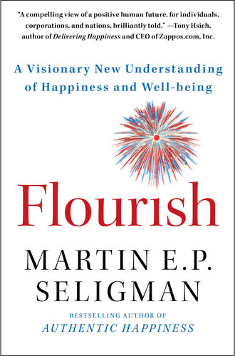
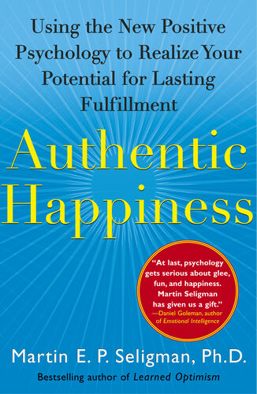

很久之前，在他成为”人类错误”之前，甚至在计算机还没有进入人们视野之前，格雷姆·佩恩的A计划是参军。
格雷姆在1970年代成长于新西兰基督城的中产阶级家庭，是三个孩子中的老大。作为一个男孩，他热衷于需要掌握新技能的结构化活动。橄榄球是他早期的激情所在，至今仍是格雷姆和他自己儿子们家庭活动的支柱。
在高中时，格雷姆加入了陆军学员队，在那里他迅速晋升，他的纪律性赢得了同龄人的钦佩。他还培养了对修理和建造的热爱。当费里米德——一个当地的历史公园——收到一门巨大的高射炮作为礼物时，他招募朋友们帮助修复它。这门闪闪发光的大炮修复完成后，格雷姆利用这次成功的努力发起创建了一个军事博物馆。
并非每个想法都能成功。一次风笛演奏的冒险尝试很快就…结束了。
格雷姆的父亲是一名会计师，所以当格雷姆表现出数字天赋时并不令人惊讶。回想起来，他记得最吸引他的并不是会计中的数学。而是学习过程。每个审计过程都始于发现，需要快速而彻底地理解企业的内部运作——活动流程、生产系统。只有这样，你才能深入到数字层面。深度学习是他喜欢并且天生擅长的。至于电子表格，他并不介意。
多年来，格雷姆一直计划在高中毕业后入伍。然而，就在他即将离开时，他听说了会计师事务所亚瑟·杨(现在的安永)提供的大学奖学金。一时兴起，他申请了——并且获得了。他接受了奖学金，同时加入了陆军预备役以完成基础训练单元。
“我一直拥抱变化，”他回忆起这个形成性的、突然的转折时说。“管他呢？你有什么好失去的？”
无论喜欢与否，变化已经来临，对他和许多其他新西兰人来说都是如此。经过几十年的农业繁荣期——新西兰凭借此享有世界上最高的生活标准之一——其长期存在的羊毛、肉类和乳制品经济开始衰落。取而代之的是，与制造业并驾齐驱，更新的服务业正在兴起。今天，服务业占坎特伯雷地区(基督城周围地区)GDP的60%。
会计领域也即将迎来巨大变化。当格雷姆开始在基督城的亚瑟·杨担任财务审计员时，整个办公室只有一台IBM个人电脑。几年内，每个人的桌子上都有了一台所谓的”便携式”电脑。年长的合伙人对这些新奇的小玩意儿持怀疑态度，认为它们是噱头而非省时工具。他们更喜欢他们的”文字处理器”——不是电子设备，而是人类，通常是女性，她们会打字录入口述备忘录。
相比之下，格雷姆拥抱新技术。他乐于理解这些机器的工作原理，使用它们的程序制作图表，用能够比他在黄色横线纸上更快更可靠地进行计算的软件来减轻工作量。他花费数小时从书本中自学计算机基础知识。
“我是一个早期采用者，”他说，脸上露出半个微笑。“我甚至有苹果牛顿。”
作为天生的领导者，格雷姆尽力帮助周围的其他人适应。他和一位同事制作了一个关于如何使用个人电脑的教学视频，他们将其邮寄到合伙人家中，供他们在个人录像机上观看。随着时间的推移，亚瑟·杨开始重视格雷姆的熟练技能。他们要求他为整个新西兰创建一个计算机培训程序。他做到了，而且大部分情况下都很有效，尽管一些年长的合伙人仍然在努力适应。格雷姆回忆起一位合伙人，即使在电子邮件时代，仍然让助手打印出每封邮件，然后在邮件到达时大声朗读给他听。
即使对格雷姆来说，变化的步伐也很难跟上。但他明白面临的风险：公司的未来。在亚瑟·杨会计师事务所的墙外，计算机正在迅速改变其企业客户的业务。审计现在意味着要理解这种新技术如何被融入数据存储、工资管理和分析等实践中。例如，信贷行业一个世纪以来都依赖纸质记录：最初是笔记本，然后是装满文件卡的仓库。1960年代带来了向电子记录的转变。到了1970年代和80年代，一切都在大型机上，存放在数据中心里。在那个时代，保护记录安全意味着限制对这些中心的访问。比如在门口设置警卫，或者使用重型挂锁。
似乎一夜之间，安全世界被彻底颠覆了。黑客创造出计算机病毒，在没有保护的网络中肆虐，造成严重破坏。对全球产业的威胁是即时且根本性的，一个全新的行业应运而生来应对这一挑战：信息安全。1995年，花旗银行聘请史蒂夫·卡茨担任首席信息安全官，据信这是历史上第一位CISO——发音为SEE-so。
格雷姆在混乱中看到了潜力。这个新的信息安全蛮荒西部需要工具，而他有想法。在奥克兰工作期间，格雷姆开发了一个名为”Advisor”的产品，可以灵活分析不同类型的计算机系统。在新加坡的一次会议上，一位志同道合的美国合伙人迅速理解了这个产品的价值，并邀请格雷姆到美国来研发它。出于好奇、开放的心态和渴望，格雷姆跨越八千英里，先到克利夫兰，然后到亚特兰大，开设安永的首个安全咨询业务。他当时还不是该领域的专家——但那时没有人是。潮流变化太快，问题太新颖，旧智慧无法应对。机会的浪潮正在兴起。格雷姆抓住了他的冲浪板并乘风破浪。
如今，CISO已成为任何大型企业的标准职位。41%的企业董事会将网络安全经验视为整体董事职位的关键资格。到2024年，网络安全市场将达到3000亿美元。全球网络安全专业人员的短缺意味着290万个职位空缺，而网络攻击造成的经济损失每年增长62%，仅2020年就损失了1万亿美元。
到2011年，格雷姆已准备好迎接新的变化。
现在他是该领域的专家了。他已经作为安全顾问环游世界十五年，作为路上战士的生活开始让他感到疲惫。在亚特兰大家中的两个儿子需要在他们的许多（结构化、基于技能的）活动中得到更多指导。
当Equifax提供IT风险与合规副总裁职位的机会时，他欣然接受。这正是他渴望的那种稳定的内部职位。虽然公司已经成熟，但仍有大量的建设和修复工作要做。到2017年，Equifax持有10亿消费者的记录、1亿中小企业、1亿员工、20万亿美元的房产数据和20万亿美元的财富数据。那年8月，在乔治亚大学的一次演讲中，CEO理查德·史密斯这样说道：“如果你想象世界上最大的图书馆——国会图书馆——那么，Equifax每天处理的数据量是它的1200倍。”
在如此庞大的数字面前，出错在所难免。而且经常出错。
例如，2015年3月，缅因州波特兰的居民凯蒂·曼宁下班回家，发现她的信箱里塞满了来自Equifax的信件——总共300封。每封信都是写给她的，但却包含了陌生人的完整信用记录、社会安全号码和银行账户信息。
Equifax要求格雷姆进行调查。他很快了解到凯蒂并不是唯一的受害者；其他人也收到了数百甚至数千封包含陌生人私人数据的信件。由于报告是纸质的，Equifax派遣团队亲自回收它们。华盛顿特区的一位收件人变得偏执，拒绝开门。相反，他让团队在夜里在公共街道上与他会面。在约定的时间，Equifax的工作人员必须闪烁三次车灯，就像惊悚片中的间谍一样。只有这样，那个人才交出报告。
漏洞和恶意行为者总是在变化，数据泄露比格雷姆希望的更常见。对于每次事件，格雷姆团队的目标是理解、纠正和学习。据他回忆，没有人因此被解雇。
2017年7月，格雷姆在炎热的乔治亚阳光下与妻子和孩子们一起度过了他54岁生日的周末。那个周日他回到家，发现自己的CISO苏珊·莫尔丁打来了一系列未接电话。
消息并不好。一次安全漏洞针对了格雷姆管理的一个软件。漏洞的全部范围尚不清楚，但现在是全员出动的时候了。
格雷姆当时的职位是全球企业平台首席信息官。在他管辖范围内的是ACIS门户，这是一个软件系统，用于记录想要争议信用报告、报告身份盗窃、启动安全冻结或请求其记录副本的消费者的记录。一个名为Apache Struts的软件将ACIS连接到数据库。
在发现漏洞的四个月前，包括格雷姆在内的429名Equifax员工收到了关于Apache Struts漏洞的电子邮件通知。相关团队已经进行了调查，并应用了他们认为足够的补丁。
他们错了。黑客闯入并窃取了1.48亿美国消费者和1500万英国消费者的数据，包括姓名、社会保障号码、家庭地址和驾驶执照号码。这被称为历史上最昂贵的数据泄露事件。
在公众的强烈反对中，几名高级员工被解雇或提前退休。
2017年10月2日星期一，在一次他以为是关于其他事情的人力资源会议上，格雷姆被解雇了。
第二天，前首席执行官理查德·史密斯在国会作证。他将此次泄露归咎于”技术故障”和”人为错误”的结合，并将后者归咎于一个人。参议员阿尔·弗兰肯开玩笑地称这个人为”格斯”：“为什么1.45亿美国人个人信息的安全都掌握在一个人手中？为什么一切都取决于格斯？”
格雷姆突然失业，在家中通过电视直播观看国会会议，他知道他们在谈论他。他就是格斯。很快他的真实姓名被泄露，还带着一个绰号：“人为错误”。
将系统性崩溃归咎于一个人的可疑性显而易见，即使对国会也是如此。正如一份国会报告所述：“一名Equifax高级官员因未能转发一封电子邮件而被解雇，这是他没有被指示要做的行为，就在前首席执行官理查德·史密斯在国会作证的前一天。在所有事实的背景下，这种以公共关系为动机的操作似乎是无谓的。”
这种更合理的反驳叙述的适度传播几乎没有消除迅速成为公认现实的情况：格雷姆·佩恩代表了所有出错的一切。
痛苦的讽刺在于，直到那时，通过我们当前工作世界的视角，格雷姆在职业生涯中做的一切都是正确的。
他早期就识别了机会。他的好奇心、学习欲望和敏捷性使他能够快速在一个蓬勃发展的新领域建立专业知识。一次又一次，他从掌握新技能和构建创意产品中找到的意义中汲取动力和能量。通过仔细的前瞻，他承担了经过计算的风险，然后在一个又一个挑战中推进。
简而言之：格雷姆·佩恩拥有明日思维(Tomorrowmind)。
然而，即便如此，在2017年格雷姆发现自己站在深渊的边缘。
被解雇的感觉很糟糕。它在无数方面伤害我们的心理健康和身体健康。再加上格雷姆被解雇的极其公开的性质，难怪他苦苦挣扎。在那些月份里，格雷姆深深感受到了恐惧，这种恐惧实际上会在他旅程中更早的许多时点阻止我们大多数人。
“当国会报告发布，我的名字在整个互联网上发布时，我真的认为那是我职业生涯的终结，”格雷姆说。“我开始担心我未来的就业前景。潜在雇主会如何看待我与Equifax的关联？”
对于许多Equifax高级领导来说，那就是结束。首席信息安全官苏珊·莫尔丁自泄露后辞职以来就没有公开露面。首席执行官理查德·史密斯和首席信息官戴夫·韦伯同样淡出了视野。2018年，公司又解雇了全新一批员工——数百人被迫重新开始，现在简历上还有污点。
面对这种情况，我们中有多少人会感到瘫痪？我们中有多少人会想要放弃？
格雷姆·佩恩选择了另一条路。
从绝望的深渊中，他开始联系朋友和前同事。多年来他帮助了很多人，他们都渴望回报。“朋友和同事鼓励我以更积极的角度看待这件事。他们告诉我，经历了历史上最大的数据泄露事件之一，我真的有很多东西可以提供给别人。”
曾经将格雷姆带到职业生涯巅峰的同样技能组合——他的韧性、认知敏捷性、前瞻性、创造力、他在获得新技能中找到的意义——现在将他从边缘拉了回来。他总是朝着挑战和在混乱中获得掌控的机会奔跑。从他的优势和社交网络中汲取勇气，他开始一砖一瓦地重建他的职业生涯。
曾经看起来像是一场彻底的个人灾难，今天已经转变为网络安全咨询的成功新篇章。格雷姆的朋友们是对的。公司希望从一个亲身了解该做什么和不该做什么的人那里学习。格雷姆为企业董事会和高级管理人员提供网络安全准备方面的建议。他继续构建新的能力和产品，帮助他的咨询公司发展到新的市场。“我们生活中一些最好的教训来自我们的错误，”格雷姆建议道。今天，他带着讽刺的自豪佩戴着”人为错误”的标签。
我们两人，马蒂(Marty)和加布里埃拉(Gabriella)，是在格雷姆(Graeme)失去在Equifax工作的时候走到一起的。我们新工作世界带来的巨大挑战——技术变革的快速步伐；新兴企业一夜之间颠覆整个行业；每个全球市场不确定性和波动性的加剧——已经占据了我们的全部关注。我们都致力于改善心理健康，对人们无法应对这些日益严峻的挑战感到担忧。而这还是在COVID-19疫情之前的几年，2020年的疫情将已经升级的风暴变成了全面的龙卷风。大约一半的美国劳动力正在与倦怠作斗争。76%的人认为工作场所的压力对他们的人际关系产生了负面影响。工作中的过度压力每年造成1900亿美元的医疗费用，以及数十万不必要的死亡。在工作中，我们在这个星球上度过了大部分清醒时光的地方，我们太不快乐、太疲惫、太病态了。
关于所谓的工作未来将如何改变商业，已经有大量文字论述。但它将如何改变我们？我们如何确保自己能够胜出？我们现在已经与数百家公司合作，雇佣了全球数百万工人来面对这些问题。
这本书将分享我们的答案。我们首先在过去的基础上理解今天的挑战。这不是我们人类第一次必须适应新的工作世界。正如我们将在第1章中看到的，我们的大脑在数百万年的进化中与特定类型的工作产生了关系，这是我们祖先最熟悉的工作类型：狩猎、捕鱼和采集。觅食仍然是我们的大脑最适应的工作。觅食者的大脑非常适合五小时工作制、群体生活、对新地域的创造性探索，以及与自然的永恒联系。然而，到公元前10,000年左右，同样的大脑发明了技术和结构，产生了我们第一次劳动转型，从觅食转向农业。鉴于我们觅食者能力与农民新生活之间的不匹配，这是一个极其痛苦的转变。
每一次后续的劳动转型——首先转向农业，然后是工业化，再到今天我们技术驱动的工作世界——都付出了巨大的人力成本。在某些情况下，这种代价如此巨大，以至于历史学家和人类学家仍在努力解释它是如何发生的。作为一个物种，我们为什么会转向如此异化的工作形式？这些工作形式与我们的天生能力如此相悖，以至于从事这些工作会造成人类的困苦？更大的集体生产力和技术复杂性是社会的回报。但这种回报是建立在数十亿长期受苦的个人身上的，他们从未收获过这些好处。
今天的转型，一个在我们周围生动存在的未来，以其自己意想不到的新方式威胁着我们的福祉。如第2章详述的，变化的纯粹速度意味着我们现在改变或失去工作的速度已经是工业化高峰期的两倍。据估计，到2030年，全球将有8亿工人的工作被自动化取代。我们中多达80%的人将在同一时期因自动化而减少工资。
我们知道这将如何发展。在工作岗位流失后的一年里，死亡率增加50-100%。仅失业一项就使我们心脏病发作的风险增加35%，并且与工作不稳定一起，几乎增加了每一个主要心理困扰类别的发生率——抑郁症、焦虑症和药物滥用。
现在考虑新工作性质本身带来的风险。从社会孤立的方面开始。二十年长期同事关系的日子已经过去了，稳定的、面对面的工作社区在我们整个职业生涯中支持我们的日子也过去了。25至34岁工人的平均工作任期约为2.8年。同事来了又走，我们也是如此，在我们的工作组中创造了历史性的和非自然的快速流动率。据估计，25-30%的美国劳动力将在未来几年远程工作。孤独感的普遍性在过去二十年中翻了一番，增加了我们的抑郁症、心脏病和全因死亡率。
再加上我们必须导航的波动性和不确定性——无论是个人还是组织——即使在最好的情况下。公司发现他们的商业模式一夜之间被颠覆；昨天还是小竞争对手的公司突然成为行业领导者。团队了解到他们花了几个月时间构建的产品现在已经过时，团队分裂成六个部分，每个部分都被回收到全球各地全新的举措中。61%的全职员工表示现代工作场所的压力使他们生病；这种动荡在美国每年造成约12万例超额死亡，在中国高达100万例。
然而。
我们并非注定失败。
我们从格雷姆这样杰出人物的故事中知道这一点。格雷姆确实是杰出的，他能够如此巧妙地驾驭变化的激流，并在此过程中帮助周围的人，但他并不是独一无二的。还有其他格雷姆，拥有我们可以学习的明日心智(Tomorrowmind)。
现在我们也很清楚地知道这一点，从数十年对心理健康和繁荣科学的研究中。
我们两人都将自己的生命奉献给了这门科学，作为临床医生和创新者。对于马蒂来说，这段旅程始于1960年代的宾夕法尼亚大学。他三十年的研究确定了人们在巨大压力下要么繁荣发展要么失败的条件。令马蒂沮丧的是，学术心理学还没有准备好将这些研究进行到其逻辑结论。是的，他的发现被应用于抑郁症治疗——这可以称为精神病理学(psychopathology)视角。但它们的意义对于如何过上更有韧性、更充实的生活——以及如何从一开始就避免那些负面结果——更为重要。到了1990年代，正如我们将在第3章中看到的，马蒂正在领导一个新研究领域的发展，叫做积极心理学(positive psychology)。作为美国心理学协会主席和宾夕法尼亚大学积极心理学中心的创始人，马蒂在过去三十年里一直在证明繁荣发展是可以实现的；事实上，我们的成长潜力是巨大的，只要我们愿意接受这门科学及其核心原则。
加布里埃拉，受过医学博士训练，在她职业生涯的前十年从事fMRI大脑研究、精神病学和公共卫生工作。像马蒂一样，她渴望做的不仅仅是减少精神病理学；她想要帮助大量人群繁荣发展。2008年，她发现了一个通过行为健康技术进行更激进创新的机会，这一职业转变让她像本书中介绍的许多个人一样，从零开始重新来过。2014年，加布里埃拉开创了市场上最早的技术驱动行为健康产品之一，这款产品将为各个层级的数百万工作者提供服务。从那时起，她在各种公司领导或建议产品和创新，包括担任BetterUp的首席产品官，这是一家专注于通过虚拟教练、AI技术和行为科学促进员工繁荣发展的公司。
2017年，BetterUp首席执行官亚历克西·罗比肖(Alexi Robichaux)要求加布里埃拉创建BetterUp实验室，这是一个专注于工作场所繁荣技能的研究组织。该实验室与世界各地的学者合作，并利用BetterUp的全球发展平台来衡量和促进工作中的繁荣发展。马蒂在乐观主义(optimism)、积极情绪(positive emotion)、社会连接(social connection)和幸福感(well-being)方面的毕生工作使他成为了自然的合作者。
这项研究的重要盟友是一些具有前瞻性思维的大公司领导者，他们需要员工尽可能高效，并且理解工作者所面临的困境：在不断加速的变化步伐中面临日益增加的心理压力。最具创新性的企业领导者对实验有着渴望，对数据和科学有着导向，并且相信有更好的方式。我们希望这些领导者能在这本书中找到很多有用的指导。在许多情况下，他们也是这里描述的研究的直接合作伙伴，帮助开发知识库本身。
你可能是一名经理、个人贡献者或高级主管。你可能在呼叫中心的客户服务前线、学校或医院，或者在幕后的制造团队工作。无论你的角色如何，你可能拿起这本书是因为你理解这个颠倒的工作场所将继续存在。你，像格雷姆一样，感受到了变化的紧迫重量，你知道它会一次又一次地向你袭来，并且会持续下去。
我们无法阻止变化。但我们不需要成为它的受害者。我们希望这本书能成为你翻得破旧的、重读的、个人注释的指南，帮助你在一个日益被机器控制的工作世界中作为一个完整的人类繁荣发展。我们希望这些知识能帮助你长出翅膀，飞得比你想象的更高。这里描述的技能不会一夜之间形成。它们需要思考、练习和承诺。随着时间的推移，它们将作为超能力发挥作用，引导你稳定地飞越旋转的水域，帮助你通过一个以世界为中心的、有力量的视角保持平衡和专注。我们称之为繁荣发展。这是我们都应得的工作的生活体验，也是我们都能实现的。
考虑格雷姆的案例——转折、高潮和低谷，从学员到会计师到IT到信息安全专家。你很可能在自己的生活中认识像格雷姆这样的人，某个经历了一切的人，在职业方面，并且设法站稳脚跟甚至脱颖而出。这些人是真实的。他们和我们任何人一样是人类。是什么让我们中的一些人能够冲浪这些汹涌的潮汐，而许多其他人却淹死了呢？
我们实验室对工作中繁荣发展的研究，包括来自世界各行各业数十万工作者的数据，已经确定了五种心理力量对21世纪工作场所繁荣发展最为关键：
你可以用来记住这五个的方便（虽然顺序不对）的首字母缩略词是PRISM。综合起来，它们是明日思维(Tomorrowmind)的五个组成部分——这种思维模式让我们能够预见变化、适当规划、应对挫折并实现我们的全部潜力。
本书将详细描述每一种能力，包括它对在未来工作中蓬勃发展的重要性，以及你如何培养这些能力。我们将我们自己的新颖研究与现有文献相结合，为你提供对每项技能最完整、最新的理解。
到目前为止，我们已经描述了第1-3章的内容，这些章节都为深入探索每种PRISM能力奠定了基础。如果这些能力是你最感兴趣的，请随时跳到第4章，该章以韧性开头。
心理韧性让我们能够从失败中反弹而不受伤害。韧性的最佳状态看起来像反脆弱性(antifragility)：从挑战中变得更强的能力。回想一下格雷姆对客户计算机工具快速演变的反应。对于年长的合伙人来说，这种新发展是威胁，而格雷姆则看到了学习新技能并利用它们开拓新市场的机会。韧性与认知敏捷性密切相关——我们熟练地进出新想法的能力，在机会主义探索和专注努力之间取得平衡。这些技能构成了我们对新工作世界波动性采取心理健康方法的基石。得益于数十年的科学研究，包括我们自己的研究，我们知道这些技能可以被培养和教授。
韧性描述了我们如何从变化中反弹。第5章将我们带入了为什么。在一个又一个角色中重塑自己，这是我们所有人都需要做的，需要巨大的努力。重塑的动力将来自我们的意义感和目标感。在”什么”不断变化的世界中，我们如何与我们的职业”为什么”保持联系？格雷姆多年来坚定地倾向于他作为建设者和价值创造者的目标。在他最黑暗的时刻，他看到了将他可怕的经历转化为积极因素的机会，通过将他艰难获得的学习应用于服务新客户。对意义和目标的理解引导我们进入了意义重要性(mattering)这一较新概念，它提供了更具体和可操作的框架。我们都想要有意义，通过正确的工具，我们可以培养这种感觉，无论是作为个人还是组织。
也正是在最黑暗的时刻，格雷姆发现了社会支持对职业成功的关键作用。但在我们孤独、不断变化、通常远程的职场生活中，成功培养关系意味着什么？第6章和第7章介绍了快速建立亲和力(rapid rapport)，这是我们都需要成为专家的社交技能。当团队形成、解散和重组，跨越大陆、语言、文化和不同技能时，我们需要与新同事快速建立信任和有意义的关系，这对我们的福祉和工作质量都有好处。一方面，这种快速建立关系对我们的古老大脑来说并不自然。另一方面，我们从心理学和神经科学中了解到许多使这一点可实现的捷径。
在第8章中，我们来到了前瞻(prospection)：我们想象和规划未来的能力。前瞻是当今工作者的元技能。在快速变化的时代，我们需要在预测即将到来的事物方面获得每一点优势。熟练的前瞻在我们的职业和福祉方面都能带来优势。我们将探讨什么是前瞻、它如何运作，并提供帮助我们成为更好前瞻者的工具。
劳动力越来越多地要求的一种特定形式的前瞻是创造力。“创意部门”的时代已经过去。第9章剖析了生活在每个人都被期望成为创意人员的时代意味着什么。我们将深入创造力的大脑科学，分解我们对个人、团队和组织如何促进更大创新的了解。我们还将扩大创造力的视野，展示它如何采取不同形式。回想一下格雷姆的成功不仅来自拥抱变化，还来自发展新解决方案以帮助客户。格雷姆本质上不认为自己是创意人员，而是一个热爱学习的建设者。这种心态对我们所有人都是可获得的。
我们的最后一章转向组织本身。在过去十年与领先公司的合作中，我们学到了很多关于什么使一些公司成功地建立员工蓬勃发展，而其他公司则失败的经验。有明确的历史和结构原因解释为什么这么多企业一次又一次地默认使用相同的不充分解决方案。我们提议对这些结构进行创造性的重新想象，支持一个更适合未来挑战的整体系统。
关于工作如何以及为什么改变的书籍不乏其数。本书通过行为科学的视角探讨为什么这些变化对我们如此困难，以及我们如何迎接挑战。历史充满了劳动转型高昂人力成本的教训。过去几十年的积极心理学和神经科学为我们提供了独特的优势，这是我们祖先无法获得的。虽然我们的大脑自首次进化以来变化很小，但它们的集体科学努力为我们提供了一个新的操作手册，教我们如何使用相同的古老神经物质来支持我们的现代目标。
我们从工作和大脑本身的起源开始。
起初，变化来得缓慢。变化主要通过天气到来。早期人类物种面临着冰河时代与间冰期变暖的交替，间隔时间长达一千年或更久。海平面剧烈上升和下降，使大片土地间歇性地适宜居住。这个周期足够缓慢，早期人类能够以老式方式适应：通过自然选择进化。例如，面临寒冷气候的欧洲尼安德特人，进化出了更短的前臂和小腿。较短的四肢意味着表面积更小，所以尼安德特人能够更容易地保持温暖。
然而，大约七万年前，发生了某件事情，不可逆转地改变了游戏规则。一群特定人类——智人(sapiens)，我们的祖先——的大脑经历了深刻的变化，包括顶叶和小脑区域的扩大和圆化。这些区域对规划、长期记忆、语言、工具使用和自我意识作出贡献。智人(Homo sapiens)新获得的复杂智能让我们能够以指数级更聪明、更快速的方式应对环境挑战。自那时起，地球上的一切都不再相同。
举个例子：与同样生活在相同气候中的尼安德特人邻居不同，智人仍然保持着热带居民的较长手臂和腿部。我们如何防止长四肢冻伤？智人没有等待数千年来进化出新的身体部位，而是以只有我们才能做到的方式解决了这个问题：通过技术。
外衣，如有眼针头所证明的那样，让我们保持温暖。火可以随意产生，如穿孔石头上的旋转痕迹所展示的，这是一种用来产生摩擦然后生火的原始马达。陷阱和渔网的遗迹表明了更节能的狩猎形式。我们更大、更球形的大脑让我们能够更聪明地工作，穿着舒适的衣服，使用巧妙的陷阱，附近还有火焰劈啪作响。
最重要的是，这些技术创新不需要不断地重新发明。相反，智人能够详细地交流它们，这要归功于我们最重要的工具：语言。复杂的句法语言使每一代人都能在前一代知识的基础上继续发展。现代人类语言允许抽象概念的交换、共同想象、集体意义建构和发明。它不仅需要描述此时此地；语言可以述说未来的所有可能性。
在这些突破——语言的、工业的、家庭的——之下，存在着一套独特属于我们的共同认知技能。生成和理解长句、规划陷阱、用生皮制作外套，都需要工作记忆、分步规划以及在心理上超越此时此地的能力。这些优势使智人能够”获胜”，克服了扼杀其他所有早期人类物种的严酷条件。
你能活着读到这些，要感谢你那令人惊叹的大脑——一个三磅重、淡粉色、褶皱复杂的肉质足球，在钙质头盔下处理着这些文字——以及所有那些在你之前的令人惊叹的大脑。
在我们95%的历史中，智人依靠狩猎、采集和捕鱼来生存。这就是”工作”——维持生计所需的一套常规活动——我们的大脑进化来做的事情。你今天仍然拥有的是狩猎采集者的大脑，而我们需要用狩猎采集者的大脑在截然不同的工作世界中取得成功。
狩猎采集者思维的三个关键特征是通才主义(generalism)、适应性(adaptability)和创造力(creativity)。我们的觅食祖先首先是通才。每个人都必须知道如何避开蛇类，如何区分营养浆果和有毒浆果，如何预测捕食者，如何给钩子装饵，如何追踪猎物。我们生活在小型、相互依存的部落中，通过高度信任的团结来保护彼此。虽然我们认为女性更多地从事采集，男性更多地从事狩猎和捕鱼，但角色很可能比不灵活，因为部落必须根据波动的资源改变策略。任何自雇过的人都会理解：有些日子你是营销人员，有些日子是管理员，其他日子是客户服务代表。你需要知道如何做这一切。
所有这些都使工作变得有趣，生活是游牧式的这一事实也是如此。在每个新环境中狩猎、捕鱼或采集都会带来新发现。每个地点都需要适应——适应气候、适应日照长度、适应地形——同时提供发展新技能的机会。我们相信觅食者每天只花三到五小时工作。这种缩短的”工作日”为学习提供了充足时间，更不用说休闲、社交和探索了。
反过来，悠闲的探索促进了创造力和创新。我们的祖先利用他们强大的大脑为个人和物种产生了巨大的成果。虽然尼安德特人的考古学显示在技术或文化进步方面进展甚微，但智人的艺术和技术以惊人的速度发展。武器变得越来越复杂，由更多的部件组成。精密的船只让我们能够远行至澳大利亚，定居在其他物种无法到达的土地上。简单的洞穴绘画发展成神话生物，用象牙和陶瓷制作。
作为采集者，我们实际上非常有创新精神，以至于我们通过创新完全改变了这种生活方式。我们部分通过发明食物储存做到了这一点，这使我们免于不断在大地上游荡寻找下一顿饭的辛劳。忠于智人的本性，一旦我们发明了食物储存，我们就反复迭代，越来越完善。储存技术迅速发展，从使用动物皮毛到烧制陶器再到冷却设备。到公元前10,000年，狩猎和采集已让位于一种截然不同的工作形式：农业。
数十万年来，创造力、适应性和通才能力为我们的物种提供了出色的服务。下一个劳动时代将产生全新的问题，要求我们迅速重新利用相同的认知机制。
尽管农业现在对我们来说很平常，但很难夸大农业所代表的根本性转变——可以说是所有人类历史中最重大的劳动飞跃。狩猎、采集和捕鱼收获自然的恩赐。农业和畜牧业则要求人类改变自然本身。采集和农业是截然不同的生活方式——采集对个体有很多好处，而农业却很少——以至于考古学家很难解释我们为什么会转换。
据我们所知，农业大约在公元前10,000年在累范特地区出现，该地区是目前由土耳其、黎巴嫩、以色列、约旦和叙利亚占据的西亚地区。再一次，天气为此铺平了道路，这次是以全球变暖的形式。在此之前，冰河时代意味着干旱，淡水被锁在极地冰盖和覆盖欧洲、亚洲和北美的巨大冰层中。二氧化碳被封存在严寒的海洋中，所以连植物都很难生存。巨大的尘云席卷世界。虽然曾有过更温暖的时期，但它们太短暂、太多变，无法支持农业。
在最后一个冰河时代结束时，全球变暖带来了降雨量增加、海平面上升和可用二氧化碳的大幅增加。森林缩减，而有可食用野生谷物的草地区域扩张。我们的祖先最初收获这些野生谷物，然后选择那些可以驯化的品种。
结合食物储存，关于动植物驯化的早期学习意味着以前的游牧部落可以在一个地方长期居住。狩猎和采集与农业并存——即使今天仍有少数采集文化存在——但随着技术变得更加复杂、定居点更加精细、地区间贸易更加流畅，农业社会开始主导地球。生活变得定居化，人口激增，我们安定下来采用一种新的工作方式。
采集者和农民的共同点是与土地的联系。两者都受天气支配，他们用精神和神灵来理解天气。
相似之处到此为止。
狩猎采集者跟随自然的引导，四处游荡寻找可用资源，而农业者则让自然屈服于他们的需要。农民移除自然出现的物种，用驯化植物取而代之。牧民也将自己的意志强加于进化，培育温顺的动物、负重动物或供食用的动物。
征服自然需要前所未有规模的规划。采集者取用现有的东西。他们通常不需要考虑比周四午餐更远的事情，因为即使他们考虑了，也几乎不会有什么不同的做法。相比之下，农民需要考虑自然可能阻挠他们的所有方式。时间跨度从几天（规划作物采摘顺序）到几个月（安排不同收获时间）到几年（培育合适的植物或动物）到几十年（储备以防饥荒）。
农业社会最重要的建筑地标是谷仓——巨大的谷物长期储存单位，这绝非偶然。谷仓是集体储蓄账户。早期农民合作建造然后填满它们。想象一下这样一个劳动者的心态：如果我们的田地失收，我们可能需要这些食物。我可能那时已经不在了，但我的孩子会在。无论如何，我很高兴知道这些储备存在。
思考未来的能力被称为前瞻(prospection)，它是使农业成为可能的因素之一。这种程度的前瞻性是智人独有的，是我们极其强大的顶叶和额叶之间合作的产物。采集者在动物和食物储存机制的发展中表现出了前瞻性。但是农业智人完全拥抱了前瞻性，特别是规划，作为他们抵御自然反复无常的最佳防御。即使在今天，对实时思维的分析显示，我们74%的前瞻性思维都致力于规划。
然而，这种极其强大的能力有其阴暗面。
采集者当然知道恐惧，主要是对即时危险的反应：豹子！山洪！我们的战斗或逃跑反应进化来保护我们免受这些现在时、高度特定的威胁。
相比之下，农民本应习惯于担忧。在控制自然的努力中，农业社会学到了很多东西，也很快了解了所有可能出错的方式。干旱可能毁掉庄稼。瘟疫可能消灭你的牲畜——或者你的家人。早期农民的健康状况出了名地糟糕，这是由于营养不良以及来自邻居和动物的传染病的结合。人口密度的增加加剧了这些问题。古代定居点不知道如何处理垃圾和人类排泄物，疾病很容易传播。
对遥远和模糊事件的长期担忧就是我们所说的焦虑(anxiety)。如果不加以控制，焦虑对个人和社会都可能是灾难性的。个人的焦虑障碍可能产生如此令人衰弱的情绪状态，以至于完全无法工作。在集体层面上，严重的焦虑可能产生有害的决策模式。
在焦虑中，我们看到了第一个例子，说明了我们的大脑进化来做的工作类型——觅食——与我们物种为自己创造的截然不同的工作世界之间不匹配的后果。换句话说，从农业革命开始，我们的大脑就不再适合我们的工作了。为了成功，我们需要依靠我们心理遗产中仍然有意义的部分，并应对那些让我们面临不良结果风险的部分。
在不遭受更严重后果的情况下，在心理和行为上适应新挑战的能力被称为韧性(resilience)。觅食者在面对雪崩或火灾等自然挫折时需要韧性。农民不仅要在日常生活中应对自然的挑战，还要应对其内在心理与新工作世界之间的不匹配，这需要表现出韧性。
虽然过多的焦虑会令人瘫痪，但小剂量的焦虑可以有益于表现。正如我们将在第4章中看到的，心理韧性使我们能够与我们的担忧对话并加以利用。成功的农民和牧民需要对他们的焦虑进行认知控制，利用它来帮助他们制定计划，而不让它失控。
向农业转变产生的另一个重大不匹配是我们多面手觅食者大脑与农业要求的专业化之间的不匹配。觅食者需要广泛技能的知识，因为他们的环境不断变化。对于农业主义者——被困在一个地方，多年从事同样的活动——获得特殊专长是值得的。如果你出生在东北黎凡特山麓放羊的部落中，你最好了解你的专业。农民可能专注于一种谷物或生产的一个方面，比如磨面粉。
专业化及其伴随的单调的一个令人毛骨悚然的例子来自中国兴隆洼发现的骨骼遗骸。来自这种文化的年轻女性由于终生跪在磨石前而膝盖变形。日复一日，时复一时，她们蹲着，重复着同样的任务，身体逐渐扭曲。在全球范围内，对农业智人骨骼的研究显示了各种觅食者所不知道的新畸形，包括椎间盘突出和关节炎。我们的身体，就像我们的大脑一样，并没有进化来从事农业。
农业还扭曲了我们的社会结构，使少数成功的个人能够积累大量财富。虽然农业社会开始时并不是专制政权，但大多数都演变成了专制政权。暴君强制执行极端的社会分层，包括人类奴隶制。奴隶制在狩猎采集者中较为罕见，因为其广泛制度依赖于社会分层、人口密度和经济剩余。后果延续至今：截至2019年，全世界估计有4000万人遭受强迫劳动，其中包括大约1000万儿童。
几乎从任何标准来看，转向农业似乎都是一个令人困惑的选择。作为一个物种，我们用更长的工作时间、单调、许多人的奴役和所有人更糟糕的营养，换取了有吸引力的工作和休闲时间。一定有一些人反抗，坚持狩猎这种过时的工作。但这些机会随着时间的推移而减少。到公元100年，只剩下100到200万觅食者，而农民有2.5亿。大量民众贫困，大部分人脱离了他们的劳动，可能极度无聊。
我们觅食了二十万年。我们务农了大约一万年。我们工作世界的下一个最戏剧性的变化发生在仅仅三百年前：工业革命。
幸存的记录为我们提供了工业工作感受的第一手资料。其中有1832年一位22岁工厂工人马修·克拉布特里(Matthew Crabtree)的证词，他在英国议会调查童工条件时被传唤。议员迈克尔·萨德勒(Michael Sadler)倡导这项调查，带来了不少于89名证人向特别委员会作证。以下是克拉布特里接受萨德勒本人采访的情况，这次采访如此生动，我们大篇幅引用：
迈克尔·萨德勒：你第一次去[工厂]工作时多大？
马修·克拉布特里：八岁…
MS：你能说明你第一次去工厂时，在正常情况下的劳动时间吗？
MC: 从早上六点到晚上八点…
MS: 生意忙碌时你们的工作时间是什么?
MC: 从早上五点到晚上九点…
MS: 请说明这些长时间工作对你的健康状况和感受产生了什么影响?
MC: 当我工作这么长时间时，晚上下班时通常非常疲惫；疲惫到有时候走路都会睡着，要不是绊倒了惊醒，我就睡着了；经常恶心得吃不下东西，吃了什么也会吐出来。
MS: 你在那个工厂里是什么职位?
MC: 我是一个接头工。
MS: 接头工的职责是从机械的一个部分取下梳理好的棉花，然后放到另一个部分上?
MC: 是的…
MS: 根据你自己的经验，你不认为机械的速度是经过计算的，即使在工作时间适中的情况下，也需要孩子付出最大的努力吗?
MC: 这已经是他们能做到的极限了…到了一天结束的时候，当他们变得更加疲惫时，他们就跟不上了，结果就是被打来督促他们…机器会产出固定数量的梳理棉花，当然他们必须在整天的工作中保持同样的规律性；他们必须跟上机器，因此无论监工多么仁慈，由于他必须跟上机器否则就会被指责，他会通过各种方式督促孩子们也要跟上，但他通常采用的方法就是当他们变得昏昏欲睡时就用皮带抽打他们。
MS: 如果你迟到了，你会担心被残酷殴打吗?
MC: 我迟到时通常都会被打；当我早上起床时，对此的恐惧是如此强烈，以至于我会一路跑着、哭着去工厂。
MS: 那么根据你所见到的和你自己的经验，你的印象是这些长时间的劳动会让承受这种工作的年轻人变得极其不快乐?
MC: 是的…
MS: 你似乎在说这种殴打对于让孩子们跟上工作是绝对必要的；这在所有工厂都普遍存在吗?
MC: 我在其他几个工厂工作过，我在所有这些工厂都目睹了同样的残酷行为。
克拉布特里的证词——一方面被活动人士广泛宣传，另一方面被工业家支持者谴责——展示了工作已经变成了什么样子，以及我们人类如何应对这些变化。
例如，我们了解到劳动的节奏现在由机器强制执行。工业工人跟上的不是季节，也不是游荡的兽群，而是人造引擎。人的能动性(human agency)与这种类型的工厂工作无关。机械的精确性和一致性至关重要。当一双手迟缓了，就会降低数百人的生产力。与个体农民不同，工厂工人不需要提前规划。机器和它们的设计师会处理这些。结果，前瞻性(prospection)不再被用作核心劳动技能。
从克拉布特里的证词中我们还了解到，劳动被简化为高度具体、高度重复的任务，比如接头工——将一台机器制造的部件放到另一台机器上。从农业开始的专业化趋势现在已经达到了最极端的形式：努力的完全分割。尽管农业生活可能很乏味，但当工厂工人日复一日地重复同样的动作系列，与自然世界没有联系，与他们劳动产品的联系也极其微弱时，无聊会达到前所未有的程度。工厂工作把农业中所有已经非人性化的部分都变得更糟了。
就像从觅食转向农业的转变一样，我们人类再次成为了自身成功的受害者。人类大脑所有宏伟的认知复杂性都被用来设计机器——然后创造过程就停滞了。具有讽刺意味的是，对于那些留下来操作机器的人来说，工作本身几乎不需要那种复杂性。只有智人(Homo sapiens)才能想象出轧棉机，但很可能尼安德特人也能操作它。
一旦工业化潮流开始转向，就无法阻止了。人们必须跟着工作走。农业本身变得越来越机械化，农业工作枯竭了——开始缓慢，然后急剧下降。从1900年到1940年，40%的美国劳动力从农业转移到工厂环境。工人们离开乡村，涌入城市，在装配线上填补空缺。
心理韧性(psychological resilience)对农民来说已经很重要，在这种环境下变得更加必要，工人们在恶劣条件下忍受长时间工作，同时还要远离家人。社会支持也是如此。新近城市化的工人在工厂外几乎没有可以称之为社区的地方。他们必须从零开始建设。新型社会组织的出现有着明确的目标——减轻经济动荡。友谊协会被称为这个时代最具特色的英国工人阶级机构，为其成员提供金融和社会服务。例如，1761年，芬威克织工协会，可能是第一个现代合作社，成立来支持有需要的织工，并确保所有人获得公平工资。更大规模的工会，以及最终的整个政党，很快就会围绕这些目标聚集起来。但在成立之初，这些小规模的地方协会旨在为那些努力适应的人增强韧性。正是由于其中一个这样的协会，作为新移民，加布里埃拉的祖父在布鲁克林找到了他的第一份工作……也遇到了他未来的妻子。
有许多人没有成功适应。我们的大脑不是为适应工厂生活而构建的；它们是为应对掠食者、风暴和部落争论而构建的。我们的身体不是为成为接线工而构建的；它们是为游荡、采集、狩猎和闲聊而构建的。我们因此遭受痛苦并不令人惊讶。然而，这是我们第一次有记录显示这种不匹配造成的个人和社会代价的时代。
我们已经听到了迈克尔·萨德勒对这种心理代价的担忧：“那么您的印象是……那些长时间的劳动会让遭受这种劳动的年轻人变得极其不快乐？”他以典型的引导式方式问道。萨德勒的议程是要突出工厂生活造成的不仅是身体上的，还有情感上的损害。
在这个工业化的世界里，工作与幸福之间的联系是不可能忽视的，这个世界把工人推向身体的极限，同时忽视了他们的许多智力天赋。使用为悠闲的、基于发现的觅食者三到五小时工作日进化而来的大脑，1800年的八岁儿童被期望能够应对十四到十六小时的重复性制造轮班。（今天全球仍有1.6亿儿童被迫工作，其中一半处于危险条件下。）
结果，许多工业工人开始患上心理健康疾病。那个时代的标签不同：术语是”神经衰弱”(neurasthenia)和”歇斯底里”(hysteria)，而不是焦虑、抑郁和慢性疲劳。特别是神经衰弱，由美国神经学家乔治·比尔德(George Beard)在1869年创造，定义为”神经的疲竭”，在随后几十年里成为一个极其流行的诊断。神经衰弱患者被描述为被现代生活节奏耗尽精力。虽然它有时被认为是富人的疾病，但记录显示它扩展到了工人阶级。到1906年，神经衰弱占伦敦女王广场医院诊断的11%。在大西洋的另一边，1911年，纽约市一家诊所记录了服装厂工人群体中神经衰弱的惊人高发病率。
这种痛苦的回声至今仍在。2018年，劳工研究者马丁·奥布朔恩卡(Martin Obschonka)和他的团队分析了英格兰和威尔士的人格和幸福数据。他们比较了曾经高度工业化的地理区域——例如煤矿地区，或参与蒸汽动力制造的地区——与工业化程度较低的地区。曾经高度工业化地区的现代居民表现出更大的神经质(neuroticism)、更低的生活满意度和更低的尽责性(conscientiousness)——几十年后，在工业本身早已消失很久之后。奥布朔恩卡团队随后在美国成功复制了这一分析，证明在这么多年后，工业革命造成的心理破坏继续困扰着我们今天的社会。
工厂工人以许多方式应对新生活的压力，有些比其他方式更健康。最臭名昭著的是，酒精自我治疗变得普遍。新的蒸馏方法使酒精能够大规模生产，使其比以往任何时候都更便宜、更强烈、更容易获得，特别是对城市工人阶级而言。对于在远离家乡长时间工作的孤独、孤立的员工来说，酒精成为了一个便宜而忠实的朋友。
1844年，年轻的弗里德里希·恩格斯描述了他在家族拥有的曼彻斯特工厂中观察到的当地工厂工人酗酒的祸害。他引用了格拉斯哥街头三万名酒鬼的报告，该市10%的家庭充当酒吧；以及英格兰从1823年到1840年酒精消费加仑数增加四倍的报告。关于曼彻斯特的饮酒场景，他写道：
在星期六晚上……当整个工人阶级从他们贫穷的住所涌入主要街道时，酗酒的野蛮行为随处可见。我很少在这样的夜晚从曼彻斯特出来而不遇到许多步履蹒跚的人，或看到其他人躺在阴沟里……当人们看到英格兰工人酗酒的程度……外在条件的恶化，精神和身体健康的可怕破坏，以及随之而来的所有家庭关系的毁灭时，这些后果是不难想象的。
恩格斯的意图是揭露而非改善资本主义制度。那年晚些时候，他在巴黎与卡尔·马克思进行了第二次会面。这次会面标志着他们合作的开始，最终催生了《共产党宣言》。对于马克思和恩格斯来说，现代工作世界的弊病对人类精神极其有害，最好的解决办法就是彻底推翻资本主义。如果劳动制度造成了这些人类痛苦，那么这个制度本身就必须消失。
其他人试图从内部提供帮助。芝加哥商人罗伯特·劳是我们所知的第一批进行干预的美国雇主之一。1863年，他从小事做起，收留了一名与酒精成瘾作斗争的员工，让他与自己同住直到戒酒成功。当这个事实上的康复项目成功后，劳开设了历史上最早的戒酒生活设施之一。从这一传统中，员工援助项目(EAP)开始出现。到了1920年代，像伊士曼柯达这样进步的雇主向所有与成瘾作斗争的员工提供此类项目。
一些学者对这些举措持怀疑态度，认为它们源于对抑制日益高涨的社会主义情绪的渴望。另一种解释在于工厂主更直接的利益，他们已经开始理解，永远醉酒的工人对生意有害。这种认识与当时正在兴起的对生产力的新痴迷不谋而合。一位名叫弗雷德里克·泰勒的工程师，世界上第一位效率大师，推广了企业通过最大化工人产出来获得成功的观念。清醒的劳动力就是高效的劳动力。
从这种特殊的动机汇合——既有善意的，也有自利的——我们得出了现代工作场所的结构化家长制及其人力资源(HR)功能。如今，97%的大型雇主通过HR向员工提供EAP，为各种心理健康问题提供支持，远不止于成瘾问题。公司被期望为那些遭受身体和情感疾病折磨的人提供帮助。EAP的遗产既是善意的，也是资本主义的。它也是补救性的，有着重大的缺点。在第十章中，我们回到EAP模式及其不足之处，并为HR提供一种更符合行为科学原则的替代方法。
我们的愿景不仅仅是减轻伤害。工业化时代最好的雇主所能做的就是帮助员工戒酒。这是一个开始。这一次，在工作新的巨大转变的黎明时期，我们有机会预防伤害，是的，但更重要的是，培养卓越、创新和幸福感。像前瞻(prospection)和创造力这样独特的人类技能，经过数百甚至数千年后，现在再次变得至关重要。这个时刻的辉煌在于我们有潜力测试这些智人超能力的极限。如果农业然后工业化使工作非人化，那么即将到来的时代有可能以新的和鼓舞人心的方式重新人性化工作。
实现这一目标需要明确近期未来对我们的要求。这也需要我们认识并利用我们独特的历史优势——即现代行为科学，了解如何加强我们不仅需要生存而且需要繁荣发展的技能的知识。
对我们大多数人来说，今天的工作与我们的大脑进化所适应的采摘浆果、爬树、捕鱼的劳动完全不同。从这个意义上说，我们有理由对即将到来的令人不安的不匹配感到恐惧。但也正是由于那些极其强大的觅食者大脑，我们才能为即将到来的——在许多方面已经到来的——事物做好准备。
像他之前的父亲和之后的儿子一样，密歇根人罗伯特·范奥登与汽车打交道。白天，罗伯特在通用汽车底特律-哈姆特拉克装配厂负责供暖和制冷工作。在业余时间，他和小罗伯特·范奥登一起修理破车，转手赚取微薄利润。
作为一名工厂工人，范奥登是哈姆特拉克当地政府1980年代一项有争议决定的受益者之一。该镇使用征用权法律从其波兰城社区征收了300英亩土地用于通用汽车工厂。许多人曾表示反对，对承诺的回报持怀疑态度。多年来，社区成员在工厂的就业中进进出出，依靠它维持生计。即便如此，征收的创伤从未真正愈合。
2018年11月，第二个有争议的决定到来了，这次不是来自城镇，而是来自通用汽车本身。首席执行官玛丽·巴拉，通用汽车工厂工人的女儿，从18岁起就是通用汽车员工，决定关闭哈姆特拉克工厂。
“通用汽车希望在不断变化的市场条件和客户偏好面前保持领先地位，以实现长期成功，”巴拉在一份声明中解释道。“我们正在做的是变革这家公司。当你审视推进技术、自动驾驶和共享出行时，这个行业正在快速变化。我们希望在公司实力强劲、经济强劲的时候走在前面…我们可以减少资本支出，同时投资电动和自动驾驶汽车。”
巴拉接受过电气工程师培训，她本人曾经管理过哈姆特拉米克工厂。巴拉的才能引起了她的前任丹·阿克森的注意，当时她担任人力资源副总裁一职，这个职位让她能够近距离接触这家百年老企业不断变化的人才需求。她2013年被任命为首席执行官，被《华尔街日报》誉为女性的突破。自那以来，巴拉以致力于改善通用汽车的质量和品牌而闻名。她利用关闭哈姆特拉米克这一艰难决定的机会向市场表明，正如汽车本身在进化一样，通用汽车工人的素质要求也需要改变：“我们需要确保我们拥有正确的技能组合，不仅是为了今天的通用汽车，也是为了未来，所以你会看到我们在裁员的同时也在招聘新员工。”
位于旧金山的自动驾驶汽车公司GM Cruise就是那些将继续招聘的公司之一，而哈姆特拉米克和其他工厂则让数千人失业。
哈姆特拉米克市政府官员估计，裁员将导致哈姆特拉米克年度预算损失近100万美元，学校资助基金损失11.5万美元。对于长期居民来说，工厂的关闭证实了一种潜在的不信任。专栏作家约翰·加拉格尔表达了这种怨恨：“正如威廉·福克纳曾经说过，过去没有死去，甚至还没有过去。所以现在，在底特律同意铲平一个社区建造汽车工厂近四十年后，如果伤口仍在流血，记忆依然强烈，问题不会消失，请不要感到惊讶。”
罗伯特是那些失业的人之一，发现自己面临着失去房屋抵押品赎回权的风险。这个消息令人震惊。
“我被击垮了，”他当时说。“我在门廊上坐了几个小时，思考人生和我该怎么办。我是个聪明人，不喝酒也不吸毒。所以我集中精神说，‘我就在这里，在我这个年纪，我必须从零开始重建自己。’”
在我们这个现代工作世界中，从零重建已经成为一种生活方式。
我们开始一份职业，随着市场和技术的变化而艰难转型，然后重新来过。新冠疫情让许多不知道所谓的工作未来实际上已经到来的人清楚地看到了这一点。然而，对于数百万工人来说，这一现实在疫情之前就早已存在。
大约七年前，我们的同事、未来学家和施乐前首席科学家约翰·西利·布朗——简称JSB——和他的写作伙伴安·彭德尔顿-朱利安开始将此描述为”激流般的工作世界”。JSB是硅谷的传奇人物，以其BMW摩托车、敏锐的问题和1980-1990年代领导施乐PARC团队发明激光打印机和图形用户界面(GUI)而闻名。GUI构成了计算机”桌面”交互的基础，包括菜单、文件夹和鼠标。
JSB也很擅长比喻：“对我的父母来说，”他说，“典型的职业轨迹就像蒸汽船——启动引擎，全速前进。对我这一代人来说，路线更像帆船——通过熟练的操舵，我们很接近我们认为会到达的地方。但今天的毕业生需要更像激流皮划艇运动员，快速分析和响应不断变化的水流，了解并信任自己，这样他们就不会恐慌。”
激流皮划艇的感觉优雅地捕捉了我们今天在工作中面临的许多紧张状况。我们独自坐在皮划艇里，驾驭着直接环境的水流——但我们也都处于将以某种方式同时影响数百万人的重大全球事件的下游。一方面，对那些能够利用这些激流为自己获得优势的人来说，机会无限；另一方面，持续的不确定性带来的压力和恐慌可能会阻挠即使是我们中最勤奋的人。
激流比喻也表明我们正在回到觅食者生活方式的某些优势。像我们的狩猎采集祖先一样，我们都必须能够解读环境，广泛扫描威胁和机会。从前，驯鹿群的到来会让整个部落变成猎人、屠夫和厨师。发现大量野生浆果可能会让每个人重新变回觅食者。我们进化为能够以极大敏捷性抓住当地机会的通才。这同样的成功秘诀适用于今天市场的未知领域。
我们今天在工作中面临的变化的速度或类型都没有先例。成功驾驭这种速度和不确定性类型——不仅仅是生存，还要充分利用我们周围的机会来繁荣——需要一套独特的情感、社交和认知技能。理解挑战的这两个维度可以帮助我们准备应对。
在工业革命期间，世界对我们的祖先来说似乎已经变化得太快了。我们如何将今天周围的变化速度与一百年前我们所经历的变化进行比较呢？
回答这个问题的一种方法是通过工作置换的视角——即被取代的工作数量。在某些情况下，这意味着那些工作消失了，也许被机器取代。在其他情况下，这意味着工作发生了转变，因此某种新的就业类型——如”接线工”——取代了旧的。在我们最初的劳动变革中，农业完全取代觅食作为一种新的工作方式大约花了一万年时间。从工业化开始，我们有了更精确的数据可以依靠。根据贝恩公司对美国人口普查局数据的分析，从1900年到1940年，美国的工作置换以40%的速度发生。也就是说，在工业革命的最后四十年中，40%的美国工人看到他们的工作被新技术接管或取代。考虑到那个时代末期工厂的数量和规模，以及准备好住房的城市地区的丰富程度，置换在时代末期发生得最快是有道理的。
这与今天的置换速度相比如何？根据大多数估计，2020年仍然代表着这个新工作世界的第一章。然而，根据2018年对美国人口普查数据的同样分析，在未来十到二十年内，近20-25%的美国劳动力将仅仅被自动化所取代。
换句话说，今天在这一转变的开始阶段，工作置换的速度是1900年工业化高峰期的两倍。而且这种速度只会加快。截至2018年，估计71%的总劳动任务由人类执行，29%由机器执行。世界经济论坛估计，到2025年，这将转变为50%的劳动由人类执行，50%由机器执行。根据麦肯锡全球研究所新技术采用模型，到2030年，我们中80%的人将因自动化而面临工作替换或工资减少。
推动这种闪电般变化的是技术创新本身的步伐。发明家雷·库兹韦尔(Ray Kurzweil)，因其在语音和文本识别方面的领导地位而获得国家技术与创新奖章，在2001年通过他的加速回报定律预测了今天在自动化、人工智能、纳米技术等方面的指数级加速。“并非我们将在21世纪经历一百年的进步，”他当时写道。“相反，我们将见证大约两万年的进步。”
一个世纪内两万年的进步！那么个人对这种变化的体验如何？在我们个人职业生涯过程中，我们需要多频繁地”从零开始重建”？换句话说，我将亲身经历的变化到底有多快？
设定生命周期内变化循环期望的一个有用代理指标是技能退休的速度。像计算机语言、营销分析最佳实践或一代客户管理软件这样的东西多快就过时了？十五年前，JSB将此定为五年。今天他说更接近十八个月。像世界经济论坛这样的组织跟踪特定技能市场需求的演变，这些技能被归类为更大的类别，跨越几十年的时间。基于这种跟踪，论坛估计我们将大约每十年在职业上重新塑造自己。麦肯锡全球研究所的跟踪表明，到2030年，不是部分而是所有工人都将需要新技能，因为他们的工作与复杂机器一起发展。
仅在汽车世界，电动和自动驾驶车辆的巨大突破在短短一二十年内就颠覆了这个领域。到2040年，市场上超过一半的新车将是电动的。目前，VanOrden和其他人可以从一家工厂转移到另一家工厂。但是受过汽油发动机培训的汽车工人很快就会发现他们的技能已经过时。专业化很快就会过期。
一方面，这让我们回到了通才主义。像我们的觅食祖先一样，我们会发现通才技能的广泛基础对我们有利，因为我们会随着时间的推移在各种角色中进出。技术素养、基本专业素养——这些能力将在价值上持久。
另一方面，今天工作世界中真正的通才不太专精于任何技术技能——比如曾经的狩猎或捕鱼——而是专精于持久的心理能力。这些过去被称为”软技能”，相对于”硬技能”，如编程。软技能最近被那些寻求在过度偏向技术培训的工作场所中恢复其形象的人重新命名为”核心技能”或”元技能”。这些心理技能使我们与机器区别开来，并超越任何特定的工作培训。它们涉及的是我们在如此不同于觅食根源的工作环境中，在变化中茁壮成长所需的深层人类能力。定义和培养这些元技能——PRISM力量——是本书的项目。
工业化带来了世代间的变革。而激流般的工作世界带来的变化如此迅速，我们将在每一代人内部感受到这种变化，而且是多次。我们可以预期在整个职业生涯中，需要从零开始重建，不是一次，不是两次，而是多次。我们可以预期学习新的工作技能，却只能眼睁睁看着它们失去用处，或者被机器取代。我们将每天重新塑造自己。我们的孩子和孩子的孩子也将如此。
除了速度之外，激流隐喻中固有的是持续不可预测性的概念。今天不仅变革的步伐显著加快，变革本身也与我们过去所知的类型不同。正如JSB所说，我们的世界是”一个快速变化、日益相互关联的世界”，“由于这种日益增长的相互关联性，一切都比以往任何时候都更依赖于周围发生的其他一切”。
这种类型的变革，特别是全球和地方事件的相互作用，在20世纪末首次引起军事和政策界的关注。例如，VUCA这个缩写词——代表波动性(volatility)、不确定性(uncertainty)、复杂性(complexity)和模糊性(ambiguity)——今天经常用来描述我们的商业环境，最初是由军事领导人创造的，用来描述冷战结束所引发的变化的不可预测性。在后冷战时代，不再是两个大国对峙——我们和他们；民主和苏维埃；个人主义与集体主义。突然间，地缘政治格局看起来不再像罗斯科，更像杰克逊·波洛克。高度分化、模糊的多边各方在国界内外运作，具有无法预期的动态动机，更不用说跟踪了。士兵必须为以下情况做好准备：
这个缩写词使用频率的上升说明了它与我们当前组织现实的共鸣日益增强。许多领导力培训机构提供基于VUCA的工具，利用军事思维来帮助领导者在我们的工作世界中取得成功。
比VUCA早大约十年，规划师和设计理论家产生了”邪恶问题”(wicked problems)的相关概念来描述复杂的社会问题。与数学或象棋等游戏的简单问题相比，邪恶问题很难解决，因为信息不完整或矛盾，或者要求在变化。可能还涉及大量利益相关者和意见，而且这些问题往往与其他问题密切相关。邪恶问题在定义上具有多重原因，缺乏单一的”正确”答案。恐怖主义、贫困和全球变暖都是邪恶问题的例子。
与VUCA一样，这个概念在现代企业战略中被证明是有用的。例如，匹兹堡大学教授约翰·卡米勒斯专门研究”邪恶战略问题”，这类问题往往”在组织必须面对持续变化或前所未有的问题时出现”。
回想玛丽·巴拉关闭哈姆特拉克工厂的决定。巴拉必须应对全球变暖这个邪恶问题，将其作为通用汽车转向电动汽车的一个因素；密歇根州的当地经济挑战；技术创新的步伐让竞争对手获得优势，而通用汽车将资源集中在传统车辆上；等等。每个挑战都令人生畏；巴拉必须解决这整个邪恶的问题网。
以经典的邪恶问题形式，在”解决”这些挑战后，当巴拉关闭哈姆特拉克和其他工厂时，她为自己的行业创造了一整套全新的挑战。2019年9月16日，46,000名通用汽车工人，全部属于联合汽车工人工会，举行罢工，抗议最近的工厂关闭。每周，罢工让通用汽车损失4.5亿美元。一个月内，双方达成协议：哈姆特拉克将重新开放作为电动汽车工厂，提供九千个工作岗位。到2020年1月，这个数字已经下降到2,200个。在每个战略节点，巴拉的行为代表的不是解决方案，而是来自通用汽车内外的新复杂性的触发器。
被取代的哈姆特拉克员工继续怀疑这一切对他们意味着什么。就他而言，罗伯特·范奥登短暂地回到通用汽车在另一个地点工作，但毫不犹豫地在其他地方申请，不愿意将自己的命运寄托在一家公司上。裁员后，随着围绕工厂状态、重点、规模的所有日益增长的波动性，工人们理解他们不能依赖任何单一工厂——或技能组合——作为收入来源。
为我们日常提供VUCA体验的技术延伸至所有行业和论坛。它存在于我们的家中，促进全球沟通和连接；也在我们的办公室里，实现信息共享和更快的工作效率。2000年，主要在北美的四亿人在线。今天是五十亿。这就是五十亿个起源点，五十亿个放大和变异点，对于任何一条信息——对于我们周围湍流中的任何涟漪或急流。这种涟漪的大小对应着每条信息或每个全球事件将产生的影响大小。这些涟漪会相互作用——有些会相互放大，有些可能会相互抵消。我们每个人每天都坐在这数十亿涟漪中间，决定关注哪些，忽略哪些，以及哪些可能预示着我们必须提前应对的改变人生的转变。
生活在这种变化中是什么感觉？人类的体验已经被那些研究VUCA和棘手问题的二十世纪末学者们的语言很好地描述了。波动性(Volatility)描述了”快速且不可预测地变化的倾向，尤其是向更糟的方向。“而”棘手”在概括这些挑战引发的负面情感方面几乎不能更加生动。
面对这种波动的、不可行的变化，我们感到恐惧。最好的情况下感到恶心，最坏的情况下感到恐惧。被我们创造但不再能够控制的复杂性所震撼。
湍流不适合胆小的人。
我们所有人都在用新工具、新市场、新智能每季度失去和重获平衡。今天，我们对这些条件对健康的负面影响了解得比过去劳动转型时期要多得多。
例如，就业不稳定和缺乏工作控制权——VUCA的常见副产品——会产生心理障碍、健康结果恶化，以及每年数十万过早死亡。
实际失业，正如我们现在可以预期在职业生涯中周期性经历的，后果更严重。当我们失去工作时，我们的身心健康严重下滑：血压、关节炎和心脏病发作显著增加，抑郁、焦虑、药物滥用和自杀率也是如此。
我们福祉面临的另一个主要风险来自我们周围技术变革的本质，即自动化对人类孤独感有深远影响。我们中越来越多的人可以预期与”协作机器人”而非人类共度工作日。远程工作在疫情期间成为非必要行业的常态，导致了社会隔离。美国的孤独感比率实际上自1980年代以来翻了一番。从身体和心理上来说，独处对我们是有害的。孤独与更高的抑郁率相关。它对我们健康的危害比肥胖更大，就死亡率风险而言，大约相当于每天吸一包香烟。
孤独对商业也是有害的。
在我们实验室2017年对1600名美国员工的研究中，我们发现最孤独的员工对工作最不满意，他们更可能想在未来六个月内辞职。我们还了解到，受教育程度更高的工人更孤独，即使控制了其他社会经济因素。一些劳工学者预测，未来十年工作日益复杂意味着我们都需要在学校待更长时间。这可能意味着孤独的普遍性和严重性会恶化。
直到COVID-19之前，许多公司仍然不相信新的工作世界正在威胁我们的健康。疫情粉碎了这种错觉——我们希望是不可修复地。COVID-19导致员工心理健康需求急剧增加，为负责组织健康的人员造成了危机。员工发现自己被动地转介到毫无准备、不堪重负的服务中心。一些公司试图为被裁员的人提供支持；大多数公司太专注于试图弄清楚如何帮助仍在工资单上的工人。
我们的雇主，就像我们作为个人一样，都束手无策。我们没有进化到在湍流的VUCA中工作，然而我们就在这里。我们知道如果不采取行动，许多人将遭受痛苦。我们可以继续像对COVID-19的心理健康反应一样——也就是说，等到损害已经造成，然后用基本的缓解措施来回应。
或者，我们可以利用我们独特的科学知识——我们的历史优势——来定位自己，不仅要在即将到来的湍流中生存，而且要繁荣发展，作为个人、领导者和社会。
心理学在消极方面比在积极方面成功得多；它向我们揭示了许多关于人的缺点、疾病、罪恶，但很少涉及他的潜能、美德、可实现的抱负或他完整的心理高度。就好像心理学自愿将自己限制在其合法管辖权的一半，而且是更阴暗、更卑劣的一半。 ——亚伯拉罕·马斯洛，1954年
那是2007年，美国国防部(DoD)面临着一个四字母问题。创伤后应激障碍(PTSD)让多达15%的作战士兵注定要过着充满可怕焦虑、闪回、噩梦和抑郁的生活。在军队之外，大约6%的普通民众正在与PTSD抗争，这些创伤由事故、虐待、攻击、突然失去或急性严重健康问题引发。许多PTSD患者的痛苦如此严重，以至于他们无法工作、无法睡眠、无法维持长期关系。
在本世纪初，国防部经历了PTSD发病率的急剧上升，主要发生在伊拉克和阿富汗战争的退伍军人中。除了巨大的人道主义代价外，这种疾病还造成了经济负担，政府需要为患者提供终身医疗和经济支持。它还削弱了美国的战备状态：在任何时候，现役退伍军人的储备池都比本应有的规模小约15%。
因此，参谋长联席会议任命吉尔·钱伯斯上校为特别助理，负责研究和改善这个问题。钱伯斯已经有着辉煌的服役履历，曾在沙漠风暴期间派驻韩国，2001年在五角大楼工作。9月11日那天，钱伯斯正在距离飞机撞击点四个走廊的地方工作。作为军事秘书，她的职责是确认那天大楼里三百人的去向。在随后的几年里，钱伯斯睡眠不好，饱受噩梦困扰。她曾以为在她的工作岗位上每晚只睡两小时是正常的。直到在建立军方PTSD项目的过程中，她才认识到自己也患有这种疾病。
到了2008年，钱伯斯组建了一支强大的团队，并从华盛顿特区长途跋涉到费城郊外马蒂的家中。马蒂当时已经建立了对习得性无助这一与创伤相关的更广泛现象的研究。钱伯斯问马蒂，我们如何能够更好地治疗那些与PTSD抗争的人？
在过去的两个世纪的大部分时间里，心理学家和精神科医生主要关注帮助那些已经患病的人——治疗现有疾病。然而，事后治疗往往效果不佳。尽管在过去七八十年里，人们在PTSD和相关疾病的研究和治疗上投入了数千亿美元，但它仍然没有治愈方法。一旦某人患上这种疾病，我们使用药物和治疗来部分缓解症状，但我们无法消除这种状况。对大多数人来说，症状缓解并不能让他们回到正常生活。
但还有另一种思考这个问题的方式，马蒂向钱伯斯和她的团队建议。是的，确实有15%的士兵带着PTSD回来。这意味着85%——绝大多数——没有患上这种疾病。如何？为什么？我们能从这85%的人身上学到什么？
更令人惊讶的是，这85%的人中许多人表现出了创伤后成长。在经历创伤事件后，那些有创伤后成长的人在优先事项上表现出了可测量的更大清晰度，对意义和目标有了更深的感悟，以及应对挫折的能力增强。
马蒂鼓励钱伯斯和国防部完全颠覆这个问题。他争论说，让我们不要等到为时已晚才去对抗一种无法治愈的疾病。相反，让我们在困难附着到人们身上之前，给他们抵御困难的工具。
这是一种完全不同的心理健康方法，来自相对年轻的心理学分支，由马蒂和其他人开创，称为积极心理学。与社会心理学和行为经济学等相邻学科一起，积极心理学颠覆了传统的医疗模式：这些学科不是将所有资源投入到治疗疾病上，而是专注于首先防止疾病生根发芽。在公共卫生领域，干预预防某人患上疾病的做法被称为一级预防。马蒂建议，让我们在PTSD发展之前主要预防它。让我们将人群曲线转向创伤后成长。
换句话说：想象一个整体心理健康的量表，其中零是中性的，负数表示心理疾病的程度，正数显示某人的繁荣程度。为了论证，让我们将任何从负二到正二的人视为”在正常范围内”；任何低于负二的人都是心理不健康的；任何高于正二的人都是繁荣的。如果传统的精神病学和临床心理学将人们从负十移动到负五，那么积极行为科学将我们从负二提升到正三及以上。通过这样做，它们帮助人们避免首先跌落到负十。
这些领域让我们能够将我们庞大的、现代的、科学的武器库直接瞄准如何生活得更好这个问题，而不仅仅是减少痛苦。它们也为应对我们激流勇进的工作世界中即将到来的挑战开辟了一系列新的可能性。
两千五百年前，当世界各地涌现出庞大的帝国，权力以惊人的速度集中到凯撒、法老和国王手中时，全球的哲学家们就人生的美好生活提供了智慧。孔子，公元前500年：“人越是思考善念，他的世界和整个世界就会越美好。”西蒙·本·佐马，公元200年：“谁是富有的？对自己所拥有的感到快乐的人。”古代先贤预见了积极心理学的许多核心理念：例如，更好地欣赏我们所拥有的这种做法，如今被称为品味(savoring)，它与感恩相关，这两者在数百项科学研究中都被证明能够改善幸福感。
既然心理健康几千年来一直是哲学和宗教的焦点，那么它如何在最近几十年才成为有力科学探究的主题？要理解这一点，我们需要简要回顾现代行为科学的起源。对于那些急于了解这门新科学实际应用的人，请随时跳到第四章。
对自然世界的系统实证研究——即带有大写S的”现代科学”——大约在十六、十七世纪的科学革命中出现。培根、哥白尼、伽利略、哈维、牛顿，以及后来达尔文等人的著作不可逆转地改变了我们对地球、物质、自然和人体的理解。我们意识到，宇宙的客观真理正等待着被发现——但要通过观察、测量和实验，而不是通过经文、推理或直觉。此外，科学不仅能观察和描述，还能改变自然本身。
行为科学姑来迟到。精神病学从十八世纪后期以疾病为中心的医学中发展而来。早期精神病医生专注于治疗疯病——那些生活在负十分深渊中、被关在收容所里的人。与此同时，皮埃尔·雅内、西格蒙德·弗洛伊德和卡尔·荣格等从业者开始使用病史作为描述和治疗个体意识病理学的窗口。
心理学领域大约在同一时间形成，但其取向有所不同，主要借鉴哲学和生物学传统，通过实验方法提出和检验不仅关于病理学，而且关于人类经验普遍问题的问题。威廉·冯特（1831-1920），第一个称自己为心理学家的人，是一位实验主义者，他处理感觉和知觉等广泛主题。在二十世纪上半叶，美国的爱德华·L·桑代克和俄国的伊万·巴甫洛夫使用动物模型（桑代克：猫；巴甫洛夫：他著名的狗）来探索学习过程，催生了被称为行为主义的研究学派。这些和其他发现为行为科学应该是什么样子提供了理想模板：归纳的、可证伪的和可复制的。
在1900年代早期，精神病学在开发治疗精神疾病药物方面经历了自己的首批科学成功。一般性麻痹症，一种致命的精神崩溃，被发现是由大脑中称为螺旋体的微小梅毒细菌引起的。到1940年代，青霉素被用来杀死螺旋体从而治疗神经梅毒，澳大利亚精神病医生约翰·凯德引入了使用锂来治疗双相情感障碍。精神疾病看起来可以像任何其他创伤一样被分析和治疗。
那么，到了二十世纪中期，心理学和精神病学都赢得了它们的医学科学地位。第二次世界大战后的美国，充满了与战斗心理后果斗争的退伍军人，已经准备好收获这些好处。1946年，退伍军人管理局成立，为数千名心理学家提供工作，他们将把临床和研究时间不是集中在学习等一般问题上，而是专注于治疗从前线返回的士兵。1947年，国立精神卫生研究所成立。希望是所有形式的精神疾病有一天都能治愈。
随后几十年似乎实现了这一承诺。从1940-1970年，抗精神病药物的出现彻底改变了精神分裂症患者的治疗；许多以前需要终身住院的人突然能够在家中恢复半正常的生活。与此同时，镇静剂在患有轻微和严重疾病的人群中都变得流行。到1970年，20%的美国女性和8%的美国男性定期使用镇静剂。在1980年代，像百忧解这样的抗抑郁药物进入市场。今天我们有利他林和阿德拉为多动症；安必恩和卢尼斯塔帮助我们睡眠。
今天六分之一的美国人使用精神药物。
在这些部分成功中，一些科学家开始争论对病理学的关注变得过于狭隘和限制性。通过只专注于修复破损的，我们忽视了许多可能从科学对人类繁荣发展的见解中受益的人。从1950年代和60年代开始，亚伯拉罕·马斯洛、卡尔·罗杰斯和其他人呼吁他们的领域将目光转向爱、创造力、意义和希望等主题。马斯洛争论说，心理学在消极面——“更黑暗、更卑劣的一半”——中迷失了方向，损害了这个领域。
他们创立的运动——人文主义心理学，与1960年代蓬勃发展的反文化运动相得益彰。自我实现、准精神性、乐观主义、对人类深层真理的追求——嬉皮士还能要求什么呢？迷幻药？他们也研究了这些。像伍德斯托克音乐节和”人类存在”聚会这样的大规模集会促进了这一运动的快速传播。
最终，人文主义心理学的流行削弱了它的科学潜力。大量的”自助”文献涌现出来，这些文献由格言和直觉驱动，而非研究。反文化运动的神秘主义氛围吓跑了那些有科学思维的人，使他们远离了对人文主义思想的研究。1963年，哈佛心理学系因为蒂莫西·利里(Timothy Leary)的LSD研究存在安全和伦理问题而将其解雇，划出了一道界限。这种分歧是双向的，因为嬉皮士开始对科学机构和科学方法本身产生怀疑。亚伯拉罕·马斯洛可能想要科学，但对于许多举起他旗帜的人来说，科学是人文主义需要解决的问题的一部分。
卡尔·罗杰斯在1961年表达了这种紧张关系：
让我看看能否非常简要地概括行为科学对个人和社会影响的图景；它所提供的日益增强的控制力将被某个人或某个群体掌握；这样的个人或群体肯定会选择要实现的目的或目标；我们大多数人将越来越多地被如此微妙的手段控制，以至于我们甚至不会意识到它们是控制手段…人类和他的行为将成为科学社会的计划产品。
马斯洛最初的呼吁是让科学将注意力转向人类潜能的希望。但他最容易接受的听众将科学与权力联系在一起。很长一段时间里，双方似乎不可调和地对立着。
在二十一世纪初，临床精神病学和心理学的机构开始回顾过去。
精神药理学的宏大承诺——“通过化学获得更好的生活”——开始显得空洞。全球在治疗精神疾病方面投入了惊人的资金，在研究和开发方面投入了数十亿美元。国家心理健康研究所如今每年在研究资助上花费约20亿美元。制药公司的投资使这个数字相形见绌。
一些人开始询问，所有这些在研究和治疗方面的投资给我们带来了什么？
调查结果令人震惊。尽管17%的美国成年人在2013年开过精神科药物处方，但自1970年代以来，精神疾病的患病率几乎没有变化。在这个时代，与精神障碍相关的发病率或死亡率没有明显改善，这从住院率、自杀率和失业率可以看出。最能说明问题的是，在基础科学层面，对于理解这些疾病本身的根本原因几乎没有进展。在同一时期，没有开发出任何真正新颖的精神科药物。市场上的任何药物都不能治愈精神疾病，它们只是缓解症状；在许多情况下，治疗效果并不比安慰剂好。副作用，如成瘾和抽动障碍，有时比精神病理学本身更糟糕。即使是心理治疗的有效性在五十年里也几乎没有改进。
精神病学界在新千年的第一个十年后得出了这个令人震惊的结论。转折点出现在2012年，前NIMH主任史蒂夫·海曼(Steve Hyman)敢于大声说出许多人已经在思考的问题：皇帝没有穿衣服。精神药理学模式——奇迹药物可以有效治疗甚至治愈心理障碍——是一个”未实现的辉煌承诺”。这些药物几十年来没有改进，我们对疾病的科学理解也没有提高。“总的来说，”海曼写道，“除了少数例外，业界已经得出合理的观点，即精神科疾病不存在有效的疾病模型。”
考虑一下该国最重要的行为科学领导者之一做出这样承认的重大意义。尽管进行了一百年的研究，尽管投资了数十亿甚至数万亿美元，精神科疾病不存在有效的疾病模型。我们缺乏对这些疾病如何运作的最基本理解——它们为什么和如何开始，以及它们对我们大脑的影响。我们所拥有的是帮助一些人在某些时候应对一些症状的药物。即便如此，我们也不真正知道它们为什么有帮助。
第二年，当时担任NIMH负责人的汤姆·因塞尔(Tom Insel)表示同意。他写道：“患有精神障碍的患者应该得到更好的治疗”，比NIMH和精神病学界一直提供给他们的科学更好。核心诊断和实验方法不精确、不可靠且无效。神经科学的进步尚未使精神科患者受益。该领域需要重启。
仅仅两年后，因塞尔辞去了职务。
学术心理学可能在十年前就得出了类似的结论。1996年，马蒂当选为美国心理学协会主席，这是该国心理学家最大的专业组织。所有主席都在年度演讲中确定他们的议程。对马蒂来说，在旧金山举行的那次特殊的APA大会是宣布变革的理想时机：
自第二次世界大战以来，心理学主要成为了一门关于治愈的科学。它专注于在人类功能的疾病模型中修复损伤。这种对病理学几乎排他性的关注忽视了蓬勃发展的个体和繁荣的社区……如果抑郁症确实是由不良事件引起的，那么今天的美国人，尤其是年轻的美国人，应该是一个非常快乐的群体。但现实是，在过去四十年中，年轻美国人的心理健康发生了巨大变化。最新数据显示，现在严重抑郁症的发病率比四十年前高出十倍以上。更糟糕的是，抑郁症现在已成为青少年早期的疾病，而不是中年才开始的疾病，这构成了现代心理疾病人口统计学中最大的单一变化。我认为，这就是二十世纪末的主要悖论。
在马蒂和心流心理学家米哈里·契克森米哈伊（发音为Me-High Cheek-Sent-Me-High）的带领下，一群顶尖心理学家开始聚集，质疑他们领域对精神病理学几乎排他性的关注。在心理疾病方面的大量研究投资都没有转化为更多的幸福感。比较几十年来心理健康分数的纵向研究显示没有改善，心理疾病的发病率正在恶化，而不是好转。
今天的智人比以往任何时候都活得更长，在西方世界，我们的生活水平在过去三百年中得到了巨大改善。然而，我们并不更快乐，我们也没有过得更好。
我们遭受着有史以来最严重的孤独感。我们青年中的焦虑、抑郁和自杀率处于或接近历史最高水平。COVID-19让许多人认识到我们的幸福感是多么脆弱，以及超出我们控制范围的世界事件是如何轻易地损害它的。我们对精神病理学的关注未能转化为关于正常人类如何繁荣发展的有意义知识。
为了回应这一悖论，马蒂、米哈里和同事们创立了一个新的科学研究领域：积极心理学。
像人本主义心理学和之前所有的人本主义传统一样，积极心理学将美好生活作为其关注焦点。意义、幸福、爱、联系、心流——所有这些都是积极心理学的核心内容。职业繁荣——成就——也是这一愿景的一部分。
与其人本主义前辈不同，积极心理学将自己定位在科学内部。今天，人们可以获得积极心理学博士学位，但只有在证明了与任何其他研究心理学家相同水平的统计和实验方法熟练程度之后。与社会心理学、教育学、神经科学、行为经济学和社会学等相邻领域的流动性允许科学交叉授粉。积极心理学坚持对关键前提进行仔细的实证检验。我们统称这些领域为”积极行为科学”。例如，今天正在兴起的是积极精神病学这一新领域。
在这种观点中，科学不是敌人。相反，它是一个可以帮助我们改变现实的古老工具包。正如契克森米哈伊在2000年所写的：“在寻求最佳状态的探索中，积极心理学不依赖于一厢情愿的想法、信仰、自欺欺人、时尚或空洞的手势；它试图将科学方法中最好的部分适应于人类行为向那些希望在其所有复杂性中理解它的人所呈现的独特问题。”
考虑到临床精神病学和临床心理学停滞不前的进展，人们很可能会怀疑是否可以依赖这样的科学。或许有人会争论说，对心理复杂性的科学方法尚未在我们的掌握范围内。如果五十年来对心理疾病研究的投资收效甚微，为什么对心理幸福感的同样投资会产生不同的结果呢？
答案有两个方面。首先：临床精神病学和心理学之间确实有很多胜利。二十世纪末进展停滞的事实不应减少之前真正胜利的价值。对大脑功能障碍的科学研究产生了抗精神病药物和镇静剂，使人们免于住院；治愈神经梅毒的药物；基于证据的心理治疗技术，可以重新训练大脑；以及像脑部MRI这样的新型诊断技术。在某些方面，该领域因其自身的成功而受到惩罚：一旦精神疾病被完全理解，如神经梅毒，它就成为相邻神经学领域的范畴。按定义，精神病学几乎只剩下不透明的疾病。在不透明的领域内，有太多工作要做，以至于可能会感到不知所措。近几十年来的显著平台期不应让我们忽视我们所起始的更加深渊般的海平面。
我们应该相信科学方法能够发现帮助我们繁荣发展工具的第二个理由是，它已经做到了这一点。运用相同的观察、测量和实验方法，积极行为科学在过去二十五年中，将美好生活作为其主要研究对象。在积极心理学、社会心理学、行为经济学等领域，我们已经学到了很多关于如何预防不良心理结果（避免负面十分）以及如何获得更高程度繁荣发展（达到正面十分）的知识。例如，我们了解到主观幸福感——快乐——集中在五个组成部分，即PERMA：积极情绪(P)；在工作、爱情和娱乐中的参与(E)；积极关系(R)；意义或重要性(M)；以及成就、成绩和掌握(A)。超过八千项研究定义了这些维度；展示了我们如何改善每一个维度；并验证了PERMA的改善与我们身心健康的改善是一致的。
我们也学到了很多关于如何承受挑战的知识。已有四万篇关于心理韧性(psychological resilience)的学术文章发表，这是我们下一章的主题。我们知道如何测量它；我们知道是什么导致它衰落和增强；我们有一系列经过验证的干预措施，被证明能够构建它。
现在有足够多的个别研究，甚至积极心理学干预(PPIs)的元分析——研究许多个别研究数据的研究——也大量涌现。例如，都柏林大学的Alan Carr教授及其同事在2021年的一篇论文中分析了347项不同的PPIs研究，涵盖了72,000名受试者。他们发现这些干预措施显著改善了幸福感；增强了优势；并减少了压力、焦虑和抑郁。这些改善在干预后立即测试时和三个月后都是显著的。
这并不是说工作已经完成。但今天研究PPIs的人们最感兴趣的问题不再是这些干预是否有效——这一点现在已经确立。相反，他们专注于更深入地理解为什么干预有效，如何让它们更有效，以及如何让它们持续更长时间。
感谢这些科学投资，现在存在着强有力的文献，可以教会我们如何比以往任何时候都生活得更好，尽管我们这个时代面临着独特的挑战。
当Jill Chambers带Marty到五角大楼分享他的观点时，他已经准备好赢得人心。到那时，他已经为预防性幸福方法做了十年的论证，他知道该怎么做。
令他惊讶的是，观众已经站在他这一边了。到2008年，军事领袖思想家们对积极心理学了如指掌。对他们来说，最佳人类表现是国家安全的问题。他们没有错过Marty、他的数十名同事和他们数百名学生记录的许多发现。他们已经准备采取行动。
“心理健康的关键是韧性，”时任陆军参谋长的George W. Casey Jr.将军在Marty开始之前告知出席者。“从现在开始，韧性将在整个美国陆军中得到教授和测量。Seligman博士将告诉我们如何做到这一点。”
Casey、Chambers和团队追求的不是古老的智慧，不是宗教，也不是哲学理想。他们想要一种基于证据的人类繁荣发展方法。而这正是Marty和他的同事们一直在构建的。他们发现我们可以统计预测谁最容易患PTSD；降低精神障碍的可能性；并训练英雄主义和工作中的模范(exemplary)表现。
积极行为科学家的庞大社区在过去三十年中学到的东西，为我们今天在工作场所即将到来的变革风暴中提供了希望。如果没有这门科学，我们将像前几代人一样容易受到劳动转型心理痛苦的影响。有了这门科学，我们不仅有机会避免伤害，还能通过即将到来的挑战变得更强大。
拥抱这门科学需要对以病理学为中心的心理学方法进行根本性改变。如果我们将心理学视为修复人们的一种方式，我们将等到损害已经造成，然后将他们送到治疗师那里。
这里有一个类似于短期企业思维的比喻，即最大化季度收益，就像Milton Friedman在1970年9月13日《纽约时报》宣言中所说的那样。事实证明，短期主义(short-termism)付出了极高的社会和环境成本。因此，今天的CEO们至少在理论上理解，公司需要预先应对明天的挑战，而不是等到不可避免的事情发生时再被动回应。
我们还没有看到这种向长期主义的转变转化为人力资本管理。太多公司仍然以补救性的、事后的心态来处理员工的困难。这种心态与整个社会的心态相似，出于历史原因，社会仍然主要将心理学本身视为帮助病人的科学。
相比之下，如果我们能够接受行为科学作为能够帮助我们繁荣发展并预防疾病扎根的领域，我们将把它们的发现视为我们今天都迫切需要的工具。这些工具将使我们能够主动构建更光明的未来——为我们自己、为我们的公司，以及为整个社会。
国防部除了PTSD之外，还有另一个全力投入韧性训练的理由。在过去几十年里，VUCA风格的战争只会变得更加动荡和不可预测。这种战争模式的根本性转变——从指挥控制转向高度分布式、超本地化战斗——意味着一次又一次，接受传统方法训练的美军士兵发现自己对新的作战风格毫无准备。正如陆军战争学院前院长鲍勃·斯凯尔斯少将(退役)所言，我们完全陷入了一种全球冲突形式，这种冲突”从传统的线性结构转变为变形虫状的战场；它是分布的、分散的、非线性的，在空间上本质上是无形的，在时间上是无界的。“现代战争需要士兵们近距离作战，他们需要随时准备独立决定——改变战术并尝试新的方法。
从等级制、中央治理到分布式、动态、本地化、超响应式治理的转变，同样准确地描述了我们后福特主义时代的职场。对平民而言风险不同，但游戏规则是一样的。就像现代士兵一样，在日常工作中，我们需要随着环境变化灵活应对。我们的组织依赖我们每个人做出关键的实时决策，并在挑战的浪潮袭来时驾驭它们，而不被淹没。
斯凯尔斯和凯西将军一样，长期关注行为科学，希望更好地武装我们的士兵应对这种VUCA环境。“想象一下，如果更好地理解人类动力学，士兵们在这一刻的心理、行为和情感力量会如何被放大，”他在2006年写道。“我们现在必须开始以类似于曼哈顿计划或阿波罗计划的方式来利用社会科学的潜力。”
对于世界上最大的雇主国防部来说，训练韧性远不止是预防PTSD。为部队配备在不确定性中茁壮成长的技能，让他们即使在最极端的环境中也能表现出积极的第五级状态。韧性成为激流战争心理适应性的基石。
在工作中也是如此。一切都始于韧性。在这种环境下，拥有更高韧性水平的个人和组织更快乐、更健康、更成功。拥有更高员工韧性水平的公司，其同比增长率比韧性水平较低的公司高出320%。数百项研究表明，心理韧性是可以传授的。使用正确的工具，我们每个人都能培养它，主动构建允许我们经受挑战并茁壮成长的心理肌肉。基于所有这些原因，韧性是我们第一个也是最基础的Tomorrowmind技能。
最基本上，韧性意味着从困难事件中”反弹”。发生了艰难的事情。有些人崩溃了。其他人茁壮成长。
现实情况要更加细致入微，韧性可以指我们在事件实时发生时的响应方式；它可以描述我们为预期发生的事件做准备的方式；它也可以描述我们在事件发生后处理它们的方式。韧性也可以用来描述个人、团队或整个组织的行为。
在韧性钟形曲线的负端，韧性水平较低的人会在挑战中挣扎——甚至发展出心理健康障碍。在曲线的另一端是那些通过挑战变得更强大的人。环顾自然界，我们发现压力导致适应和改进的众多实例。运动后肌肉的强化就是一个例子。创伤后成长是另一个例子。许多类型的学习都遵循相同的曲线：挣扎推动我们前进。这个过程的术语，由散文家纳西姆·尼古拉斯·塔勒布创造，叫做反脆弱性(antifragility)。
如果普通人像洗碗海绵，能够吸收一定量的心理压力直到达到容量上限，那么反脆弱的人更像那些你投入热水中并看着它们神奇地绽放成雷龙的小球。这些个体似乎反常地在挑战中茁壮成长。他们吸收挑战，在这个过程中变得更好。
自20世纪70年代以来，马蒂和其他人一直在研究这个问题：是否有某种品质或技能使反脆弱的人与众不同，如果有的话，我们能否将这种技能传授给其他人？
答案都是肯定的。
马蒂在宾夕法尼亚大学关于习得性无助的研究为后来数百种韧性干预奠定了基础。例如，这些研究证明，我们对困难情况的响应部分取决于我们关于是否能够做些什么来摆脱这些情况的信念，而更健康的信念系统是可以传授的。
由于韧性对员工茁壮成长的重要性，BetterUp实验室最重要的项目之一就是理解其驱动因素。韧性是一种跨越我们的思想、情感和行为的响应方式。它不依赖于单一特质。因此，建立韧性需要加强一套复杂的心理和行为技能。但我们如何准确找出它们是什么呢？
数据科学家通常使用统计回归来分析结果的关键驱动因素。这类分析采用大量的前后对比数据，告诉我们哪些因素最能驱动我们感兴趣的结果。我们研究韧性驱动因素的方法之一就是通过这样的相对权重分析。在我们心理测量评估专家的领导下，我们研究了1800名全职员工的数据，这些员工通过在BetterUp平台上的指导和练习来建立韧性。我们在指导前、中、后分别对他们进行了完整人格模型(WPM)评估，这是一个150项量表。WPM包含了高功能成人感兴趣的全方位心理思维模式和行为，包括社交、认知和情感繁荣维度以及必要的职场领导行为。然后我们分析了这150个项目中哪些最能促进韧性的提升。(关于WPM的更多信息，请参见附录。)
以下是我们的发现:
在左侧，你可以看到所有与个人韧性量表得分显著相关的心理因素，总共150个可能因素中的这些。连接左侧测量指标与右侧韧性的”面条”粗细告诉你该因素对任何给定个人韧性结果的贡献程度。
虽然左侧所有因素都在建立韧性方面发挥了作用，但你可以看到有五个特别重要：情绪调节、乐观主义、认知敏捷性、自我同情和自我效能。这些与建立韧性的主要目标的现有文献很好地对应。我们现在将研究这些驱动因素中的每一个如何促进我们的韧性能力，以及如何发展它们。
情绪调节描述了我们灵活且有效地管理情绪——特别是负面情绪——当它们涌现时，以实现我们目标的能力。没有情绪调节，负面情绪可能会压倒我们清晰思考的能力。数百万年高度进化的大脑力量，被情绪洪流劫持了！
这种劫持的核心是我们的边缘系统，这是大脑最古老的部分之一，负责我们的战斗或逃跑反应。强烈、突然的愤怒来自杏仁核，这是一个一厘米宽、杏仁形状的情绪中心。在压力或恐惧中，杏仁核触发皮质醇的释放，并开始一连串强烈的身体反应，这可能与最初的威胁不成比例。
许多成人发展模型都将情绪调节视为所有高阶功能的基础。随着我们在心理上的成熟，即使到了成年后期，我们也会学会以更细致和复杂的方式管理情绪。情绪有很多东西可以教给我们，但它们是生硬的沟通者。最成熟的领导者和专业人士知道如何利用情绪为他们带来优势。他们不只是做出反应。出于同样的原因，优秀的教练会告诉你情绪调节对他们的工作至关重要。
关于我们所说的教练的说明：教练有很多种——健康教练、体育教练、生活教练。在这本书中，我们谈论的教练是我们以前称为高管教练的人，他们接受过帮助专业人士在工作和生活中取得成功的培训。今天这些专业发展教练与各个级别的员工合作，所以”高管”这个词已经过时了。像治疗师一样，教练与客户一起改善心理健康。与治疗师不同的是，他们不治疗心理障碍，而是专注于帮助客户作为个人和专业人士发挥潜力。许多人在工作中陷入困境时寻求指导——表现困难、厌倦政治、精疲力尽，或感觉无法看清在艰难章节中前进的道路。其他人与教练合作实现特定的个人或专业目标，比如获得晋升或改善家庭沟通。
情绪调节通常是控制我们心理以实现这些目标的第一步之一。教练是帮助我们做到这一点的宝贵伙伴，因为指导课程提供了一个结构化和富有同情心的环境，在其中审视和理解我们的感受。教练教授针对我们独特成长轨迹量身定制的技能。在接受指导仅三个月内，最难以进行情绪调节的人可以改善92%。
两个最重要的情绪调节技能是放慢节奏和认知重评。我们可以在以下小插曲中看到这些技能的实际应用：
乔伊是一名为芝加哥都市区服务的职业中期销售人员。她最近得知自己的区域将被重新分配。销售领导层决定将重点转向较小的城市，新数据显示其核心产品——客户管理软件——在那里开始找到市场契合点。乔伊花了三年时间在芝加哥发展关系。当她听到这个消息时，她感到巨大的怨恨。她认为领导层脱离实际，不关心员工。他们甚至没有征求她的意见就抛弃了她的血汗和眼泪。
得知重新分配消息的下午，乔伊起草了一份辞职信。她决定在提交之前先给她的教练打电话。
“我必须离开这里，”乔伊对她的教练卡罗尔说。“他们让我重新开始。”
在此刻，Carol的工作是帮助Joy慢下来，在她的负面情绪反应和随后的行为之间创造空间。她首先需要让Joy感到被倾听；然后她将引导Joy通过一系列问题来帮助她更好地理解自己的感受。
“听起来你感到不被赏识，”Carol在深度倾听几分钟后说道。
“这还算轻的。”
“还有什么？”
“愤怒。非常愤怒。沮丧。疲惫不堪。”
为我们的情绪命名有助于我们获得洞察，同时也在刺激和反应之间创造距离。Joy现在可以阻止杏仁核劫持，这种劫持将她的感受与她想要”逃跑”——辞职的意图联系起来。在触发和反应之间的停顿中，Joy可以更仔细地考虑她的选择。她正在给杏仁核踩刹车，这样她就不会让自己偏离正轨。
“辞职当然是一个选择，”Carol开始说道。“你需要什么信息来决定这是否是正确的做法？”
Carol现在正在过渡到认知重评(cognitive reappraisal)。认知重评描述了一组技术，最初由Marty的导师Aaron Beck开发（他将这本书献给了他），这些技术构成了认知行为疗法(CBT)的核心。CBT或许是我们拥有的最强有力的循证心理疗法。在重评中，我们从自己思想、情绪和行为的紧迫性中退后一步，理性地质疑我们的反应。通过这样做，我们可以重新评估我们的情况，允许比我们的情绪最初可能暗示的更加细致入微的解释。
Joy思考着。“我还不知道他们是否会让我保留我的活跃潜在客户。”
“这是一个决定性因素吗？”
“我不需要保留整个芝加哥，但我需要保留所有处于第3阶段及以上的客户。”（第3阶段是销售周期中的一个阶段，通常从与潜在客户会面到完成销售有七个阶段。）
“这听起来很合理，”Carol说。
“而且我需要知道这是否会改变我的佣金结构。在这些较小的城市，我无法达成那么大的交易。”
现在Joy完全进入了重评模式，已经开始为谈判做计划。然而，Carol将她拉回到她的情绪上，确保她没有放弃这些情绪对她的教训。
“那么感到被赏识呢？这对你似乎很重要。这方面有什么你需要知道的吗？”
“我需要知道他们想让我留在这里，”Joy说。“比如，他们是否关心我是否离开？如果他们不关心，我也不确定我还想不想留下来。”
她们讨论了Joy如何寻求她所追求的认可，并确定她是否被雇主适当地重视。在领土重新分配后，Joy可能会也可能不会继续留在她的职位上，但至少她将基于平衡的信息而不是下意识的反应做出决定。
教练在帮助我们慢下来重新评估方面非常出色。但即使没有教练，你也可以提高自己调节情绪的能力。下次当你发现自己被情绪淹没并跳到极端行动时，试试这个两步法：
首先，慢下来。在你正在经历的情绪和它们可能导致你采取的任何行动之间创造空间。你可以通过注意你的情绪来做到这一点；为它们命名；询问是什么触发了它们。注意你的身体反应——你的心跳、你身体中的任何紧张。如果你太激动以至于无法清晰思考，专注于延迟行动，直到你的身体平静下来。散步、冥想、给朋友打电话、取邮件。你正在缓冲行动与情绪，这样你就可以重新评估。
其次，重新评估。现在，利用你创造的这个空间来思考。你的情绪试图告诉你什么？这个信息的哪些部分是有帮助的？哪些部分不太有帮助？例如，对Joy来说，注意到她感到不被赏识是很重要的。如果她要留下来并在新职位上茁壮成长，她需要知道她的领导重视她。接下来，考虑你的选择。你有什么选择？你需要什么信息来在其中做出决定？
对于特别激动的情况，你可能需要多次重复这个两步过程，特别是如果你对这些技术还很陌生。随着时间的推移，我们会越来越擅长快速重新获得视角和控制。
乐观主义描述了对未来积极结果感到充满希望和信心的倾向。我们早就知道乐观主义是韧性的一个关键预测因子。在Marty从1967年开始的习得性无助研究中，他发现即使面对无法逃避的坏事件，大约三分之一的受试者从未变得无助。这些有韧性的个体倾向于将挫折解释为暂时的；作为局部的和可控的：它很快就会过去，这只是一次性的情况，我未来有很多可以做的来避免这种事情。
注意那个关键词：无法逃避。这些人为了应对不适而告诉自己的故事并不符合他们的经历。尽管如此，他们继续讲述乐观的故事，结果，他们继续尝试，因此表现更好。教训是清楚而有力的。一个情况感觉有多么可以忍受，源于我们对是否能做任何事情来逃脱它的信念。这就是乐观主义：期待有利结果的偏见。
为什么我们想要教会自己这样思考？因为——在大多数情况下——这对我们有好处。乐观主义不仅预测心理韧性，也预测身体韧性。你知道吗，乐观主义者比悲观主义者大约多活8年？当心脏病发作时，他们死亡的可能性显著较低。他们有更强健的免疫系统。乐观思考对身心都有好处。
关于乐观主义者在工作中表现如何的强有力新证据已经出现。研究员保罗·莱斯特与已故的埃德·迪纳和马蒂一起，跟踪了超过九十万名士兵长达五年，专注研究模范工作表现。在这五年中，12%的士兵获得了军队备受追捧的”模范表现”奖项。问题是，我们能否从他们初次入伍时的心理测试中预测谁会获得这些奖项？答案是肯定的，而且预测性很强。拥有高积极情绪、低消极情绪和高乐观主义的士兵获得表现奖项和英勇奖项的可能性要高四倍。由于样本人群在超过150种高度多样化的职业中工作，这些发现很可能适用于美国的整个职场。
帮助人们乐观思考的一个经过充分研究的干预方法被称为”最佳可能自我”。在这个练习中，你选择一个未来的时间框架——比如十五年后。想象十五年后的自己，当一切都进展顺利时：如果你想要的话，你和一个相爱的伴侣在一起；你拥有一直努力追求的职业；你住在一直最喜爱的城区。然后花十分钟写下这个未来。你如何度过时间？你最常见到哪些朋友或家人？感觉如何？超过三十项研究表明，这个练习不仅能提高乐观主义，还能改善身体健康。你可以使用不同的时间框架来重复这个练习。每次做这项工作时，你都在增强自己的乐观能力。
专注于品味成功、练习感恩和庆祝努力工作的练习都有助于我们对未来感到更加乐观。乐观主义也可以通过监控我们的信息输入来增强，包括社交媒体上的信息。例如，在疫情期间，许多人需要帮助来屏蔽不切实际的负面信息——比如夸大的病例激增报告——以便更清楚地听到他们努力培养的内在乐观主义。
认知敏捷性(Cognitive Agility)描述了我们在心理上在众多可能情景之间来回移动，然后聚焦并对最有希望的情景采取行动的能力。我们之前看到了认知敏捷性，以适应性的形式，对我们历史上作为觅食者的工作是多么重要。它与我们所需的通才技能组合密不可分。觅食依赖于在全新地形中机会主义地识别资源，然后进行集中收集或狩猎。没有对证据的开放性，觅食者会错过有价值的发现。但缺乏专注力和通才心态，他们就无法收获所识别的食物。
作为一个物种，我们通过数百万年为觅食生活而进化，诚实地获得了这些技能。但自农业革命以来，我们已经偏离了使用这些技能的轨道。随着农业，然后是工业化，我们的角色变得更加狭窄，我们的工作活动更加预先确定。
今天，我们再次需要觅食者的认知敏捷性和适应性来灵活应对激流般的职场环境。在这种环境中，我们解读水流，分析背景，并为自己保留尽可能多的选择，这样我们就不会被困住。
回想一下罗伯特·范奥登在通用汽车哈姆特拉克工厂关闭后突然失业的经历。他的被解雇可能会引发一段抑郁期和长期失业。但这不是罗伯特的故事。经过短暂的悲伤期后，罗伯特振作起来，开始寻找新的生活方式。带着觅食者的敏捷性，罗伯特在当地环境中寻找机会，拼凑出一套全新的就业活动。首先，他利用零工经济开始为Lyft开车。接下来，他运用自己更广泛的技术技能当杂工，在社区里接零活，甚至为底特律的一家教堂安装了商用厨房。第三，他将自己对修复汽车的热情转化为收入来源，销售翻新车辆。最后，发挥他对音乐的热爱，罗伯特成为了当地乐队的预订代理人。即使当通用汽车重新雇用罗伯特时，他仍然申请其他地方的职位以保持选择的开放性。
约翰·西利·布朗几十年来一直在写关于敏捷性重要性的文章，但他实践这些教训的时间更长。在皮划艇之前，在摩托车之前，JSB通过搭便车旅行。在他长大的纽约州汉密尔顿乡村小镇，搭便车是探索的最简单方式。一次次旅行，一辆辆汽车，JSB在解读威胁与安全信号方面变得熟练，以确定搭乘哪辆车以及如何以非线性方式便宜地从一个地点到另一个地点。他学会了在任何地方睡觉，甚至在路边。
1958年，十八岁的JSB从纽约搭便车到古巴看望他的女朋友。确切地说，一个人如何搭便车到古巴？更不用说还是在古巴革命期间？在一路到达佛罗里达州基韦斯特后，JSB潜伏在机场边缘，观察着，等待合适的飞行员载着合适的货物，愿意在哈瓦那附近的跑道上”顺便放他下来”。返程更加惊险：基韦斯特警察在回程路上逮捕了JSB，因为载他的人可疑地把他留在跑道上，然后立即起飞。他口袋里的一封推荐信——专门为这样的危机时刻保存的——使他得以获释。发现自己在半夜获得自由，无处可睡，JSB问警察是否可以继续在监狱里过夜。他们同意了，让他的牢房保持开锁状态。
某种敏捷性可以让人逃出监狱；而另一种敏捷性则让人在获释后选择留下。
认知敏捷性(cognitive agility)为我们提供选择。有些人看到的是一堵墙，而像JSB这样的人看到的是隐藏的隧道或偷渡的空间。幸运的是，认知敏捷性是可以训练的，那些在这方面最困难的人也会有最显著的改善。在认知敏捷性得分最低四分位数的人，仅仅通过三个月的指导，这项能力就能提升77%。
认知敏捷性的一个痛苦讽刺是，我们在危机时刻最需要敏捷——比如在跑道边的棚屋里被逮捕时——而恰恰在这时，我们的杏仁核(amygdala)却想让我们恐慌。当我们的大脑被恐惧劫持时，很难保持对各种可能性的开放态度。相反，我们变得过度保守，缩小了视野。因此，我们往往需要将情绪调节(emotional regulation)与认知敏捷性的训练结合起来。在这里，建立乐观主义(optimism)也经常发挥作用。
例如，韧性差的最重要预测因素之一是灾难化思维(catastrophization)。灾难化思维的人在不确定时期会立即想象最坏的可能情况。在部署到伊拉克或阿富汗的七万名士兵中，灾难化思维者比非灾难化思维者更容易患上PTSD，特别是在面临严重战斗时。灾难化思维者在乐观主义、情绪调节和认知敏捷性方面都很低。
要评估自己的灾难化思维倾向，想象以下情景：周五中午。你正在工作，突然屏幕上弹出一条来自老板助理的消息。你的老板想要在下午4:30一对一见你。
你的思维会往哪里走？
有些人会有一个特定的自动思维：“我要被解雇了。”有了这个想法，他们可能会吓得僵住，整天都无法专注于其他任何事情。
确实，裁员有时会在周末发生，而且几乎没有预警。然而，在没有其他表现不佳线索的情况下，这远非最可能的解释。在一年中，你的老板在周五下午4:30有很多会议。每次都有人被解雇吗？可能不是。
但对于我们这些倾向于灾难化思维的人来说，那条信息读起来就像死刑判决书。灾难化思维者让他们的焦虑和恐惧主导对现实的解读——这是情绪调节差和乐观主义低的表现。他们还狭隘地专注于单一结果——这是认知敏捷性受损的表现，而认知敏捷性通常能让人对多种可能性保持开放态度。
通过训练，灾难化思维是可以消除的。“正确认识”这个练习通过有意识地向所有可能结果的全范围开放视野来解决这种认知扭曲。以下是它的工作原理：
对于任何你发现自己的思维跳到最坏可能结论的情况，你的目标是更准确地预测不同的结果。
首先，画一条线，在最左边写上”最坏可能”，在最右边写上”最好可能”。在周五下午老板来电的例子中，“被解雇”会被标在这条线的最左边。
既然你心中有了最坏的可能结果，现在是时候延伸到相反的一端了。最好的可能结果是什么？你能想象的最积极情况是什么？在周五下午的例子中，这可能是”得到晋升”。将此标在最右边。
最后，想出至少三个”最可能”的解释，并将这些标在线的中间。“老板在一个项目上需要紧急帮助”可能属于这里。在这个范围内想出几个例子很重要，因为你的思维正在学习更现实的可能性分布。有太多”最可能”的结果超过最好或最坏的——这就是为什么这部分光谱如此重要。认知敏捷的思维能够在想象潜在结果时考虑到这些概率。
这个练习的一个版本被用来训练四万名美国士官为自己和他们的部队培养韧性。他们学会了识别灾难性思维，挑战它，并培养新的、更具认知敏捷性的本能，以便能够以更大的灵活性应对未来的动荡。
德克萨斯大学奥斯汀分校教授克里斯汀·内夫(Kristin Neff)将自我同情(self-compassion)——我们韧性的第四个驱动因素——定义为我们对自己的痛苦、失败或感知不足表示同情的能力。自我同情让我们能够采用安慰其他正在经历困难的人的方法——这是我们很熟悉的方法，是我们的大脑很容易获取的——并简单地将其应用于自己。
这种练习的一个关键方面是在面临人类共同挑战的更广阔范围内理解我们自己的问题。我们面临的任何逆境通常与历史上其他人所经历的没有太大不同。自我同情也是对抗那些患有PTSD的人的创伤相关症状的有效工具。
练习自我同情的一个简单方法是想象你正在挣扎的任何事情正发生在别人身上。不是你，而是你的好朋友奥利搞砸了他对执行团队的演示。你会对奥利产生什么情感？你会如何支持他并帮助他重新站起来？挖掘这些情感和行为反应并不困难，然而当我们自己成为危机主体时，这些反应往往与我们自然应用于自己身上的反应截然不同。在获得同情心的过程中，我们用爱与关怀的情感来对抗恐惧或羞耻的负面感受。
韧性的最后一个关键驱动因素是自我效能(self-efficacy)，即相信我们能够在特定努力中取得成功的信念。这个词由心理学家阿尔伯特·班杜拉在1980年代首次提出，自我效能(self-efficacy)是一个极其强大的预测因子，从工作场所表现到节食或运动成功的一切都能预测。罗伯特·范奥登在寻找新的、高度多样化的工作组合方面的勤奋表现出了巨大的自我效能(self-efficacy)。他知道工作就在那里，他相信自己能找到它，所以他去做了。与自我效能(self-efficacy)密切相关的是能动性(agency)，即相信我们能够改变未来事件的信念。能动性(agency)保护我们免受习得性无助的侵害。
自我效能(self-efficacy)是可以提升的。根据班杜拉的理论，培养自我效能(self-efficacy)的最佳方法是通过掌握体验(mastery experiences)。在任何领域发展掌握力都需要随着时间的推移取得小而稳定的胜利。设定可实现的、分块的目标有助于我们避免目标过大而失败的陷阱。小目标还帮助我们建立信心，让我们能够随着时间的推移逐渐承担更大的挑战。当经过所有这些努力，我们达到高水平的技能——掌握力——时，我们就会感受到更高程度的自信，这种自信会转移到许多其他领域。
认知敏捷性和自我效能(self-efficacy)携手合作，正如我们从以下故事中可以看到的：莎雅是一家位于湾区的全球最大技术公司之一的产品营销经理。她在佛罗里达州长大，是摩洛哥移民的女儿，就读于公立学校，在当地杂货店的库房工作以帮助养家。莎雅对营销产生兴趣是因为1980年代后期的广告。她回忆起看到坎贝尔汤罐头上平淡的图像，想要帮助其他人通过新产品想象更好的生活。
刚从大学毕业，莎雅在一家办公用品公司的早期工作专注于传统营销论坛，包括印刷广告和现场活动——会议和客户聚会，与过去几代人的品牌建设活动没有什么不同。她那时的典型一天可能包括起草文案、打电话给客户、规划会议议程。她工作努力，比团队中的其他人都更努力，渴望获得她父母从未获得的经济稳定。她看到通过专注和坚持，她可以学会该领域的广泛技能。
开始第一份工作三年后，莎雅发现她的地区性公司将申请破产，被更懂技术的竞争对手取代。她曾经看到即将到来的颠覆信号，但不知道如何向领导发出警报。寻找下一个职位非常困难，因为招聘经理想要数字营销经验。
面对自我怀疑，莎雅回忆起她在前三年中学到了多少：如果我能做到一次，我就能再做到。她的过往记录给了她信心去报名参加在线营销课程。这就是自我效能(self-efficacy)。最终莎雅对学习的渴望和愿意从入门级开始的意愿为她赢得了第一个数字营销职位。
在过去十年中，为更大的企业技术公司工作，莎雅的工作完全转向了在线营销。如今的营销高度分析化，同时由数十个软件程序提供服务：社交媒体营销工具、搜索引擎优化工具、潜在客户生成和捕获工具、电子邮件营销工具等等。每月、每周，甚至每天，都会出现有可能成就或破坏企业的新功能和技术。营销技术——“MarTech”——是它自己的行业，与FinTech、Health Tech等并列。莎雅以跟上最新MarTech趋势为荣。她不需要成为每个新工具的专家，但她需要足够开放的心态来确定其相关性。这可能意味着观看演示、下载免费试用版，或与新技术的早期客户交谈以了解他们的体验。对于那些她认为值得纳入团队工作流程的工具，她必须转入专注行动模式来学习它们的来龙去脉，并影响其他人使用它们。
与此同时，莎雅需要跟上企业技术行业本身更巨大的变化。作为公司营销组合大部分的领导者，她的关注点可能会从月到月发生变化，从向北美客户推广文件共享产品到向亚太地区企业买家宣传成像产品。莎雅的关注领域既由上而下决定——由在新兴产品中调配资源的上级决定——也由下而上决定，因为莎雅和她的同事们倡导对有前景的新机会给予更多关注。
任何单一的转变——从一个截然不同的产品转向另一个，从一个地域转向另一个，从一个技术工具包转向另一个——都会挑战Shaya的自我效能感(self-efficacy)、认知敏捷性(cognitive agility)和整体韧性(resilience)。她首先必须能够在变化的激流中航行，而不陷入无助感中。然后她必须在对新机会的开放性与专注执行之间保持平衡。
自我效能感(self-efficacy)、自我慈悲(self-compassion)、认知敏捷性(cognitive agility)、乐观主义(optimism)和情绪调节(emotional regulation)是我们在激流般的工作环境中蓬勃发展所需的心理韧性(psychological resilience)的基石。这些都是可以教授的。个性化方法如教练指导或数据驱动的学习系统会根据每个人的需求量身定制学习体验。例如，我们中的一些人需要最专注于情绪调节，而另一些人则需要建立乐观主义的肌肉。
通过练习，我们所有人都可以建立韧性，并让自己越来越接近反脆弱性(antifragility)。如果你做得对，结果来得很快：对于那些在这项技能上起点最低的人，我们看到在短短三个月内自评韧性分数有高达125%的改善。这种增强的韧性将帮助人们避免负面结果，并在个人和职业生活中更出色地蓬勃发展。这就是改变曲线。
到目前为止，我们已经了解了韧性如何使个人受益，以及我们如何都能建立个人的韧性储备。韧性还在团队和组织层面发挥作用，这对工作场所的结果很重要。让我们转向群体。
新冠疫情为劳动力韧性提供了一个实例。一夜之间，数千万工人发现自己在狭小的空间里与室友、伴侣以及从学校回家的小孩一起居家办公。服务业工人应对企业关闭和不断变化的法规。而这些还是幸运的。数百万其他人完全失去了工作。我们日复一日地失去亲人。疲惫、困惑、恐惧和愤怒激增。
在工作中，组织需要员工大规模地快速转向。他们能多快从制造外套转向缝制口罩？从制造汽车转向组装呼吸机？领导层安排了大部分员工休假，而剩下的员工要做两倍的工作。
因此，疫情揭露了韧性作为任何人力资本战略真正基石的本质。低韧性分数的员工睡眠减少，饮食更差，很少锻炼，产出更少；而高韧性的员工不仅保持了他们的幸福感，还保持了为雇主表现的能力。他们的高峰更高，低谷更平缓。韧性使他们准备好即使在这个最具挑战性的时期也能蓬勃发展。
为了量化这一优势，在2020年春天，我们检查了与我们合作的公司的财务回报，并将其与他们的人群韧性分数进行比较。员工平均韧性分数最高的公司在资产回报率上高出42%，年度股本回报率高出3.7倍。此外，他们还显示了3.2倍更高的同比增长率。
我们还具体研究了领导者的韧性如何驱动这些结果。我们发现，从组织角度来看，有韧性的领导者是持续给予的礼物。向有韧性的领导者汇报的员工自己也比其他人有近三倍的韧性。与领导者没有韧性的员工相比，他们的倦怠程度也低50%。拥有有韧性领导者的团队生产力高出30%。这些团队也更具创新性和更高的认知敏捷性。
如果这些听起来难以置信，回想一下你最近的几位老板。他们有多有韧性？他们容易受到压力吗？
现在考虑一下你向每个人汇报时自己的幸福程度。你看到模式了吗？
截至2020年5月，估计有22%的美国公司将韧性纳入了他们的领导力能力中。领导力能力是组织期望在其领导者身上看到的行为和技能。公司经常设计他们的领导力培训来专注于这些领域。正如我们将在第10章看到的那样，这些培训大多不是基于证据的。尽管如此，22%是一个开始。
建立韧性的时机永远是现在。最常问我们的问题是：我们如何开始？
我们知道如何做。市场上今天有基于证据的项目可用。它们可以基于数十年的研究和数千项研究，以精确的、数据驱动的方式针对个人发展需求。这些干预措施在个人、团队和组织层面推动这一最基本能力的发展。许多项目是在数月而不是数年的时间内完成的。
建立韧性让我们能够缓冲今天和明天的挑战。问题不是如何做，而是何时做。我们还在等什么？
如果你有了人生的为什么，你就能应对几乎任何如何。
——尼采
20世纪70年代，普利策奖获得者路易斯·“史图兹”·特克尔为后代做了一件好事，他用盘带录音机保存了美国人谈论工作的声音。在他的全国走访中，装订工、杂货店店员、钢铁工人、牙医、卡车司机和掘墓人与特克尔聊天，谈论他们如何度过工作时间：他们互动的人、工作引发的感受、以及在日常工作中闪现的想法。这些对话的书面版本于1974年出版，书名为《工作：人们谈论他们整天在做什么以及对所做之事的感受》。
特克尔当时没有意识到，他的书将成为一个时机绝佳的”之前”记录——正好记录在历史上最戏剧性的劳动转型之一开始之前。在工作的激流世界到来之前，人们对自己的工作有什么感受？
在引言中，特克尔总结了他从与美国工人相处的时光中获得的最深刻的智慧。在这些多样化故事中出现的主题中，最重要的是在工作中寻找意义的渴望：
[这本书]是关于一种搜寻…寻求日常意义和日常面包，寻求认可和现金，寻求惊喜而非麻木；简言之，寻求一种生活而非周一到周五的死亡。也许永生是这种追求的一部分。被记住是这本书英雄和女英雄们表达和未表达的愿望。
这个观察既是普遍的，也是其时代独特而令人惊讶的产物。特克尔的同时代人，人本主义心理学家亚伯拉罕·马斯洛和维克多·弗兰克尔，对意义在我们工作中扮演的重要角色得出了类似的结论。马斯洛在1962年说：“如果工作没有意义，那么生活就接近无意义。”1969年，教育家尼尔·波斯特曼和查尔斯·韦因加特纳定义了”意义创造”项目，现在这被认为是教育、工作和咨询的基础。当时有某种东西在空气中弥漫。
硅谷本身就诞生于这种精神。我们经常认为硅谷的黎明是在1990年代，但早在1970年代，约翰·西利·布朗的施乐PARC团队就在开发以太网、图形用户界面和激光打印机。工程师们被该地区优秀的斯坦福工程系、宜人的天气和早期计算机处理器的使用机会所吸引。这些工程师们也梦想推进太空旅行和推动人类进步的极限。
这次特殊的西进迁移与其说是淘金热，不如说是意义热。这些开拓性思维——他们那一代的伟大创新者——被工作吸引，当然有金钱因素，但也有目标因素。用早期苹果员工和LinkedIn联合创始人里德·霍夫曼在弗雷德·科夫曼关于有意义工作的书的前言中的话说：
我们在硅谷一次又一次看到的是，那些增长最快、执行最一致、成为其行业主导者的公司…是那些以宏大、崇高、极具雄心的措辞定义其企业使命的公司。
今天每个公司都有一个旨在激励员工和吸引客户的使命宣言。华特迪士尼的员工通过神奇体验创造快乐。索尼激发和满足你的好奇心。巴塔哥尼亚拯救我们的星球。130年前，可口可乐由一位药剂师创立，他选择这个名字是因为两个C在广告中看起来不错。现在，可口可乐的目标是”刷新世界。改变世界”。
许多这样的声明听起来空洞。在竞争激烈的劳动力市场中，员工可以坚持寻找目标与其个人价值观最吻合的企业。同样，他们也能承受离开那些行为令他们厌恶的公司。当Spotify拒绝撤掉其最大的播客明星乔·罗根时（因为担心他传播关于COVID-19疫苗的错误信息），音乐家尼尔·杨鼓励Spotify员工这样做。“在那个地方吞噬你的灵魂之前离开那里，”杨建议道。
反过来，作为面试过程的一部分，潜在雇员应该准备好解释他们与公司使命的个人联系。今天的工作得失取决于所表现出的激情程度。信徒们希望被信徒包围。
为什么使命和意义成为我们工作如此重要的组成部分？本章审视以目标驱动的绩效为核心对我们的蓬勃发展的重要性，并审视我们可用来衡量和培养这种意义感的工具。
心理学家迈克尔·史泰格将意义分析为三个组成部分：
这三个组成部分虽然截然不同，但在我们口语中使用”意义”时，每个都相当隐含其中。
并非所有工作都同样有意义；我们也不是所有人都以同样的方式在工作中寻找意义。在1997年一项著名的工作场所态度研究中，心理学家艾米·韦泽斯涅夫斯基、克拉克·麦考利、保罗·罗津和巴里·施瓦茨表明，人们将工作视为工作(job)、事业(career)或使命(calling)，如下所示：
工作(job)：专注于经济回报和必需性。工作是享受工作外生活的手段。当找到更好薪水时就辞职。
职业: 专注于职业发展。拥有职业的人对专业成就和提升的社会地位感到自豪。当升职停止时，你就会离开。
使命: 专注于有成就感的工作。你感到被召唤去做对社会或道德有价值的工作。无论如何都会坚持下去。
同一个销售岗位的三个人可能会根据他们的取向，将工作视为工作、职业或使命。这些不同类型的动机产生不同类型的工作。那些为了金钱而工作的人——外在或外部动机——会完全按要求工作，绝不多做。相比之下，那些有使命感、有更高目标感的人——内在动机——将工作视为与自己身份深度相连的东西。意义激发的绩效远超角色的严格要求。
全世界数十亿人每天都要上班。其中有多少人从工作中寻找意义？你可能会认为意义只对一小部分特权工作者重要，而大多数人只是把工作当作工作就很满意了。
我们也持怀疑态度。2018年，我们的实验室开始研究有多少工作者属于每个阵营。我们专注于美国，因为我们在那里拥有最大的数据量，并且能够接触到具有最广泛经济背景的工作者。我们调查了2000名各个年龄、行业、任期和收入水平的美国全职员工。
结果发现，想要有意义工作的工作者比例一点也不小。事实上，在美国，这甚至不能真正称为”一部分”。我们研究的几乎所有人——跨越所有世代和收入水平，无论行业或职位——都渴望在工作中获得更多意义。每个人都希望工作不再只是工作，而更像是使命。
我们还想知道工作者认为他们目前的角色有多大意义。在同一项研究中，使用0（无意义）到100（最大意义）的评分量表，人们给他们目前工作的平均分是49分。
也就是说：我们的”意义杯”还不到半满。
我们还询问了这2000名工作者，他们愿意为了一份对自己高度有意义的工作牺牲多少薪水。结果令人大开眼界。平均而言，人们愿意牺牲高达23%的未来收入，来获得一份始终高度有意义的工作！这个百分比在从每年4万美元到20万美元的收入区间内都保持不变。
从这个角度来看，截至2018年，美国人大约将收入的17.5%用于抵押贷款。我们愿意在意义上花费的钱比我们居住的房屋还多。
为什么意义对我们的工作生活如此重要，以至于作为组织，我们要招聘与使命相连的人；作为个人，我们如此渴望意义，愿意放弃大量金钱来获得更多意义？
事实证明这不仅仅是炒作。我们先从组织利益开始。现代人力资源部门的圣杯之一是”自主努力”(discretionary effort)。企业寻求从员工那里获得最多的工作。创立绩效管理领域的心理学家奥布里·丹尼尔斯(Aubrey Daniels)将自主努力定义为”人们可以付出的努力水平，如果他们愿意的话，但超出了最低要求”。把工作当作工作的人不会付出自主努力。那些有使命感的人会。自主努力对于创造非凡的工作产品是必要的——对于达到其他方式无法达到的工艺水平和创新水平。这是来自内心深处的工作，由目标驱动。
这在纸面上是什么样子？我们的研究发现，认为自己角色有意义的员工工作时间更长，缺勤天数更少。他们更喜欢自己的工作，在公司待得更久，更有生产力，每年为公司创造约9000美元的额外价值。对于每1000名认为工作高度有意义的员工，公司将平均节省594万美元的年度离职成本。这些员工也是应对组织挑战的出色缓冲器：面对糟糕的管理或有毒的环境，认为工作高度有意义的工作者能够更轻松地克服消极情绪，不太可能辞职。
对我们作为个体工作者来说，有意义工作的回报甚至更大。在职业方面，那些认为工作高度有意义的人比那些不认为的人获得更多加薪和升职。所以事实证明你根本不需要接受那23%的减薪——恰恰相反：做你喜欢的事，爱你所做的事，会带来财务收益。
在个人方面，有意义的工作对我们的健康有益。出于内在动机追求工作——出于来自我们内心深处的原因，而不是为了外部奖励——已被证明对我们的整体福祉有积极影响。事实上，被称为自决理论(self-determination theory, SDT)的研究领域，由心理学家爱德华·德西(Edward Deci)和理查德·瑞安(Richard Ryan)创立，认为内在动机是我们生活各个领域心理健康的根本要素。这种内在动机的深井在现代工作世界中至关重要。在湍流中航行绝非易事。我们每天都在那里，疯狂地划桨，海浪冲击着我们，面临着一个又一个的挑战。意义和目标激励我们继续前进。
实际上，如果韧性和认知敏捷性是我们应对变化的方式，那么意义和目标就构成了原因的核心。它们是推动我们度过前方挑战所需的燃料。事实上，数据显示我们前两个PRISM力量——有意义的工作和韧性——是相辅相成的。在2018年的同一项研究中，我们比较了那些认为工作最有意义与最无意义的人的心理韧性水平。结果毫不含糊：认为工作最有意义的员工（有意义工作分数在前25%）在韧性项目上的得分比认为工作最无意义的员工（分数在后25%）高出23%。
相比之下：美国人类学家和无政府主义者大卫·格雷伯详细描述了无意义工作的负面心理影响。他2018年的著作《狗屁工作》论证了数百万人，从接待员到营销文案再到官僚，都从事着毫无目的的工作，而且他们自己也知道这一点。虽然格雷伯的观点可能有些夸大，但他的研究对象所描述的这种无意义工作的负面心理影响值得关注。焦虑、抑郁和低自尊困扰着他们。一旦他们找到更有目标的工作，心身疾病就会神秘地消失。
我们需要有意义的工作来帮助我们在变化中表现出色并蓬勃发展。我们的组织需要我们找到工作的意义，以便在好时光中发挥最大潜力，在困难时期提供缓冲。
鉴于所有这些：意义是可以培养的东西吗？还是它就是……存在的？
我们进行2018年研究的另一个原因是识别员工找到工作意义所需的最关键的工作场所因素。了解这些驱动因素为个人和组织提供了干预的切入点。
出现的第一个关键组织因素是感觉你不是孤军作战。工作场所社会支持显著影响意义程度。在工作中感受到更多社会支持的员工在工作场所意义量表上的得分比那些没有感受到的员工高47%。当今组织面临的最困难挑战之一，特别是在新冠疫情后，是在远程工作、人员流动和工作不稳定的情况下保持社区感。但我们大多数人没有意识到，真正处于危险中的是工作本身的灵魂。
从数据中出现的另一个关键因素是与领导者的价值观和目标一致性，特别是与公司最高级领导者的一致性。与同事价值观一致的员工对工作的满意度高出33%——还不错！然而，与领导者价值观一致的员工满意度高出惊人的46%。领导层的价值观很重要，不仅对股东或董事会成员如此。对于需要跟随领导者度过激流的个人员工来说，它们也很重要。共同的使命宣言是一个不错的开始。然而，为了最有效，高级领导者必须践行公司所倡导的价值观。
我们还发现了基于工作类型的意义水平的一些重要差异。例如，知识工作者比其他人发现他们的工作更有意义。为什么会这样？仔细分析显示，知识工作者有更强的积极专业成长感。所有员工都希望并应该在工作中体验这种成长感。通过作为个人寻求这些成长机会，以及作为组织更普遍地提供这些机会，我们能够让每个人都参与到这种满足感中。
哈佛商学院教授伊桑·伯恩斯坦的研究表明，工作场所的变化可以创造一个环境，让所有员工都感觉他们的工作是知识工作。例如，当员工被赋予一定的隐私权和在无判断区域进行实验的能力时，他们会表现得更好。创造这些条件的组织可以期望为员工带来更大的意义感。个人在物质和心理上都受益，组织也会看到超额回报。每个人都赢了。
称这为意义的由外而内视角——影响人们平均认为工作有多大意义的组织因素。为了得出这些答案，我们采用人们在有意义工作量表上的分数，看看它们如何与组织特征相关联。
同一问题的由内而外版本询问，人们说他们发现工作的哪些部分最有意义？
新西兰克赖斯特彻奇坎特伯雷大学的两位教授，在格雷姆·佩恩的家乡，发现员工体验七种最常见的工作场所意义驱动因素。这七种中哪一种最好地概括了什么让工作对你感觉有意义？
意义构建的很大部分工作必须在个人层面发生。帮助人们理解什么能为他们个人创造目标感，这是一位好教练的核心职能。
金妮是一位职业中期的研发经理，负责”下一代”产品，她向教练帕特里克倾诉了对老板负面绩效评估的强烈不满。她知道自己没有达到要求，但也无法强迫自己去做必需的工作。“他要求我为一个可能永远见不到天日的项目做这么多工作，”金妮说。“然后我还要雇人来帮我做这份我自己都没有信心的工作。”
解开她的挫败感需要追溯她继续担任这个职位的动机。在他们最初的几次会面中，金妮确定了她工作场所意义的核心来源是服务。她希望自己的劳动能服务社会。因此，她的产品现在可能永远无法问世的想法让她感到威胁。
帕特里克帮助金妮制定了两个重新连接和重启的策略。首先，金妮需要重新审视并重新接受从事前沿产品工作中固有的风险水平。在创新团队中，成功可以产生重大影响，而失败可能令人沮丧。金妮需要能够容忍死胡同的可能性，将其视为她所提供服务的一部分。其次，金妮错过了在她周围执行较小服务行为的机会。例如，让她焦虑的招聘实际上是一个帮助职业早期人员学习只有金妮能传授的关键技能的机会。她意识到，甚至她的老板也能从她的帮助中受益，因为他必须忍受团队工作不确定结果带来的同样挫败感。
我们也可以在不同的角色和环境中依靠不同的目标来源，为自己提供更大的灵活性。例如，对某些工作者来说，新冠疫情引发了从专注于职业成长到专注于服务的转变。在转型和动荡时期，服务和诚实可以成为特别强大的动机。
在我们2018年研究中，所有工作者群体中最常见的有意义工作来源是个人成长。在我们的职业生涯中，我们寻求发展内在自我的机会，走向马斯洛所说的自我实现之路。增强我们对有意义工作的感知可以简单到明确我们努力成长的方式——在我们的思想、关系、技能、知识方面——并寻求专注于这些领域的机会。
增强个人成长感的一种方法是定期回顾自己的成就。在一天结束时，你有多久会反思出色完成的挑战性任务？那些在人际关系方面拓展你的工作怎么样——作为同事、朋友或领导者？注意并品味自己的成长会增强你的目标感和满足感。
几年前，疫情之前，加布里埃拉在芝加哥市中心向伊利诺伊州高级人力资源领导者聚会发表了关于工作意义和目标的演讲。活动由一家媒体公司主办，地点在其体育电视总部。在开胃菜和鸡尾酒之后，所有人进入演讲场地，也就是电视新闻演播室本身。在蓝色和橙色荧光灯下，在演播室舞台上宽大的白色新闻桌后面，除了举手之外很难辨认出参与者。
“我不太确定我接受这一点，”一位男士开始说道。“作为雇主，让某人的工作更有意义真的在我们的职权范围内吗？”
这是一个公平的问题，一个诚实的问题，一个重要的问题——如果没有其他理由，那么在关于这个主题的任何谈话中，这个问题的某个版本不可避免地会出现。加布里埃拉当时的回答是重申这样做对组织的好处。
但这位先生问的不是为什么，而是是否。企业领导者对涉足工作场所意义的水域犹豫不决有许多原因。对某些人来说，这让人感到不舒服。意义如此个人化；这真的是老板的事吗？意义唤起精神性。对许多人来说，宗教仍然是生活中意义的最大来源。企业在这个领域有什么地位？
部分挑战在于”意义”这个词太宽泛了。它可以合理地意味着许多不同的事情。即使是斯泰格在第86页提供的定义也包括三个不同的构念：理解、目标和重要性。这造成了模糊性——甚至是松散性——以及混乱，使得意义比需要的更难以讨论、更难以衡量、更难以改进，特别是对商业领导者而言。
出于所有这些原因，多年来，在我们的合作中，我们——加布里埃拉和马蒂——倾向于将”重要性”(mattering)这一构念作为企业领域中意义的更具体、可衡量和可操作的替代方案。相比意义，重要性更接近工作者关心的本质，以及公司能够影响的东西。像新闻演播室观众中那位男士这样的怀疑者对重要性没有异议。每个人都直觉地理解，我们都需要感觉自己的工作很重要；而且其他人——我们的老板、我们的领导者——往往比我们自己更能帮助我们看到这种影响。
我们将重要性(mattering)定义为一个人对自己在世界上所产生影响的感知。在Steger对意义定义的三个方面中，“重要性(significance)”最接近重要性，尽管重要性也影响着我们的目的感。你可以将重要性视为意义的一个高度具体的子集。感觉自己努力无关紧要的个体将缺乏工作动力，更别说要突破挑战。因此，组织有既得利益确保员工知道他们以及他们的工作为什么重要。
哲学家和麦克阿瑟”天才”丽贝卡·戈德斯坦(Rebecca Goldstein)，在她1993年出版的杰出且风趣的小说《身心问题》中创造了重要性地图的概念，她广泛论证了我们对重要性的需求是人类的定义特征之一。自然选择偏爱重要性。用戈德斯坦的话说：
如果一个有机体——任何有机体——有能力阐述其最深层的动机，这种动机是驱使它进行所有其他活动的先决条件——它的匆忙、躲藏、游荡、掠夺、交配等无休止的任务和活动——它会说自己在这个世界上的存在、它的坚持和繁荣都是重要的。
这就是戈德斯坦所称的重要性本能(Mattering Instinct)。我们对重要性的需求是我们生存的原始命令。
通过戈德斯坦重要性本能的视角，重要性是我们用来解释自己存在的故事。它帮助我们理解为什么我们觉得需要生存，尽管我们的生存需求实际上来源于生物学。
芝加哥居民荷马·马丁内斯(Homer Martinez)令他自己惊讶地将职业生涯都花在了挖掘坟墓上。在接受斯塔德·特克尔(Studs Terkel)采访时，马丁内斯分享了他用来解释为什么应该认为自己的工作重要的叙述：
我从来没有梦想过要从事这种工作，但我相信这很重要，因为不是任何人都能成为挖墓人。我的意思是，你可以成为下水道挖掘工，你可以挖下水道，但下水道，你可以随意挖个洞，你可以扔土，你可以弄得一团糟，但当你挖坟墓时，它必须整洁干净。你所看到的只是一个方形的洞，而且是完美的。
无论我们是为坟墓、下水道还是无缘无故地挖洞，挖洞的物理行为都是相同的。马丁内斯的叙述讲述了他如何理解为什么他，荷马，活着并且日复一日地挖洞。为什么他挖的洞独特地重要。
我们知道，通过重要性叙述来解释自己行为的能力对我们个人的幸福感具有巨大影响。没有它，我们就会失足。抑郁症的标志之一是低自我价值感。在抑郁中，我们相信自己实际上并不重要，因此我们的活动没有目的。为什么要费心尝试呢？我们精力耗尽，不想与世界接触。意义一直是马丁(Marty)及其同事在PERMA中定义的幸福五大支柱之一。今天，我们用其更可操作、更具体的组成部分——重要性——来替代意义，作为PERMA中的M。
许多面向激流勇进的工作世界的人们担心，由于反复失业和不稳定，我们将经历意义的丧失。正如未来学家和计算机科学家李开复(Kai-Fu Lee)在其著名著作《AI超级大国》中所写的那样，“就业市场的动荡和整个社会的混乱将在一个更加个人化和人性化的危机背景下发生，即个人目的的心理丧失。”尤瓦尔·诺亚·哈拉里(Yuval Noah Harari)也有同样的担忧。“我们需要保护人类，而不是工作。这里的危机是意义危机，而不是就业危机。”
我们同意，但修正一下，从组织的角度来看，这更具体地说是重要性危机。
在工作中重要性的含义对我们今天来说必须与过去几年看起来不同，特别是随着工作任期缩短到几年或更少。我们需要更快地感到自己重要；我们需要能够随着角色的变化频繁重新定义这种重要性感。组织和个人需要干预措施来在这种新环境中填满我们的重要性杯子。
2018年冬天，我们聚集了戈德斯坦和一群研究人员与我们合作测量和建立重要性。虽然我们都同意重要性为更模糊的意义概念提供了有用的替代品，但要使重要性在科学上更加强健，还有很多工作要做。
我们的首要任务是创建组织重要性量表(Organizational Mattering Scale)。心理测量量表是测量任何潜在干预措施是否成功的必要条件。我们围绕重要性可以客观或主观定义的想法来定位我们的量表。戈德斯坦解释说，人们可以用经典术语将重要性视为”arête”（[ἀρετή]），即在行动中实现卓越；或者作为”kleos”（[κλέος]），即通过行动卓越获得的声誉和荣耀。前者——arête——是个人通过努力、经验和耐心可以实现的内在重要性。后者——kleos——是外在的，需要他人的认可。重要性的两个方面对生产力都很重要。
这种二元性很好地适用于测量和干预，因为arête(卓越)可以专注于个人如何帮助自己获得重要感，而kleos(声誉)则专注于组织如何支持员工了解他们对他人贡献的更广泛价值。虽然意义的宏大方面可能需要数月或数年来培养，但我们对工作重要性的感觉可以通过arête和kleos的结合几乎立即得到发展。
我们使用这个量表来测量建立重要感的干预措施。你可以用它来评估自己是否感觉工作重要。量表上的高分——通过对每个项目的更强烈同意来衡量——与更多晋升、更多加薪和更低离职率相关。
按1（强烈不同意）到5（强烈同意）的量表回答：
你对自己的工作有arête的感觉吗？kleos呢？成就感得分超过13分，或认可得分超过15分，都是非常高的。
有了量表在手，我们开始建立干预措施来增强员工的重要感。从《身心问题》中汲取灵感，我们创建了一个组织重要感地图，管理者可以用它来帮助直接下属更充分地理解他们正在做的工作对他人的重要性，目标是kleos。我们设计这个地图专注于重要感的最核心领域。在地图中心，管理者放置员工的姓名和照片。围绕这个中心有三个同心圆，每个圆上有三个文本框。在最内圈，管理者识别出员工最能体现的三个公司价值观。这些价值观位于最靠近中心的位置，代表它们与员工身份的联系。管理者被要求提供解释每个价值观的引言和细节。价值观的体现涉及我们最深层的意义感。
第二个圆圈列出员工帮助过的三个业务团队的名称。这让管理者能够帮助员工理解他们的工作对他人的重要性。由于工作的节奏和快速变化，我们并不总是个人意识到其更广泛的组织影响。这个团队圈让管理者能够通过引言和证言突出影响的涟漪效应。
最后，最外圈专注于一个人工作产生的三个组织成果。在这里，管理者可能会强调员工开发的流程提高了x%的效率；他们的客户服务提高了y%的评分；他们的销售活动带来了$z的预订。其中一些成果员工会知道，其他的则不会。
重要的是，在每个圆圈中，员工都要学到一些关于他如何对他人重要的新的具体信息。这扩展了他的重要感，并帮助他感到这些重要性的多样化维度被他的管理者和其他人看到。
在顶部角落，公司的高级领导者会包括一句引言和签名。这可能是自动生成的，但它提供了一种官方认可的感觉，有助于重要感，特别是kleos。
白水时代将如何改变我们对工作重要性的感觉？未来工作会变得更有意义还是更无意义？作为乐观主义者，作为两个对未来新型工作类型——更人性化而非机械化的工作；更多样化而非例行公事的工作——有良好教育的个人，我们在自动化技术的演进中看到了更多而非更少有意义工作的巨大前景。从我们工作中产生的更大量数据痕迹也意味着测量和识别重要性的更多潜力。
即使在这些积极的、人性化的潮流中，也会有许多挑战，我们需要以重要感驱动的动机来帮助我们度过难关。幸运的是，无论顺境还是逆境都为我们提供了重新连接生活目标的机会，只要我们对此持开放态度。实际上，世界历史上最可怕的条件产生了人类对意义的一些最深刻的沉思。1946年，维克多·弗兰克尔总结了他从集中营的折磨中学到的：
人可以保持精神自由的痕迹，保持思想的独立，即使在如此可怕的心理和生理压力条件下。我们这些生活在集中营的人可以记得那些走过小屋安慰他人、分出最后一块面包的人。他们人数可能很少，但他们提供了充分的证明：一切都可以从人身上夺走，除了一样东西：人类最后的自由——在任何给定环境中选择自己态度的自由，选择自己道路的自由……正是这种精神自由——无法被夺走的自由——使生活有意义和目标。
重要性(Mattering)是意义的组成部分，它让我们能够向自己解释为什么每天醒来并从事我们所做的事情很重要。重要性激发我们的幸福感、生产力以及承受困难的能力。个人、领导者和组织都可以培养这一点，并且需要这样做才能成功克服未来的挑战。
连接吧，乔治，连接吧！
——史蒂芬·桑德海姆，《与乔治在公园里的星期天》
1970年12月14日上午10点，在新泽西州普林斯顿的一个阳光明媚的日子里，第一批志愿者到达了一个心理学实验现场。参与者是普林斯顿神学院的神学院学生，他们正在学习宗教，准备投身精神服务的生活。
到达研究管理员办公室后，参与者被告知这个实验将研究神学院学生的职业道路。每个人都被要求准备一个关于该主题的简短演讲，并获得一些阅读材料作为灵感来源。一半的参与者收到了一张纸，上面有关于如何最好地利用神学院教育的问题和想法。另一半收到了著名的新约圣经中好撒玛利亚人寓言的副本，讲的是一个在路上停下来帮助有需要的人的故事。
所有这些，志愿者们并不知道，只是一个前奏。
然后管理员告诉每个志愿者，由于空间限制，他们必须步行到另一座建筑去分享他们的演讲。参与者们拿到了一张地图，概述了一条通过小巷到达下一座建筑的路线。
参与者们一个接一个地出发了。
进入小巷后，每个参与者都遇到了一个令人震惊的场景：一个人倒在阴暗门口，瘫软不动，痛苦地呻吟着。这就是实验：谁会像好撒玛利亚人一样停下来帮忙，谁会匆匆走过？
这个呻吟的人是研究团队的一名成员伪装的，他记录了每个神学院学生的反应。有些人匆忙走过，根本没有注意到他。其他人看了一眼或点了点头但没有停下来。有些人短暂停留问男子是否还好。还有少数”超级帮助者”把受苦的人带到室内，拒绝在护理到达之前离开。
谁停下了？谁匆忙走过？是什么决定了一个人是否会花时间帮助另一个需要帮助的人？
研究主任约翰·达利和C·丹尼尔·巴特森假设，启发学生思考好撒玛利亚人会让他们更有可能提供帮助——这证明了圣经激发道德行为的力量。然而，分析显示没有统计学上的显著差异。没有读过寓言的学生帮助（或忽略帮助）的数量与读过的学生相似。
达利和巴特森测试的其他变量——比如参与者持有什么类型的宗教信仰——也没有产生差异。
除了一个变量。
时间。
被告知要匆忙赶到目的地的学生显著较少停下来帮助痛苦中的人。被告知他们有一点富余时间走路的学生更经常停下来，并提供更实质性的帮助形式。
我们很难想象还有比神学院学生更可能停下来帮助他人的人。然而，即使在那些毫生奉献给为他人服务的人中间，感觉时间紧迫也让他们无法帮助明显需要帮助的人。
几十年后，随着生活比以往任何时候都更快节奏，我们其他人还有什么希望呢？
时间是当今社会连接最重要的障碍之一。我们相信自己正在遭受”时间饥荒”之苦：总是有太多事情要做，却永远没有足够的时间去完成。现代企业推崇这种稀缺心态。人力资本管理系统监控员工如何以及在哪里度过他们的日子。员工保持”时间饼图”来跟踪他们将这种稀缺资源分配给具体项目的情况。工作与生活平衡的永恒斗争往往归结为一个问题：我一天中根本没有足够的时间在工作和家庭两方面都做得很好。70%的美国人在办公桌前吃午餐或根本不吃午餐。56%的医生认为他们没有足够的时间向患者表达同情心。缺乏时间——或我们对缺乏时间的感知——阻止了我们相互连接。
“准时”的压力滋生了各种反社会行为。考虑路怒症——当其他司机阻挡我们前往目的地时爆发的火山般脾气。或者多任务处理，这种普遍存在的注意力分散，妄想同时做多件事情不会产生平庸甚至致命的结果。在美国，每天有九个人死亡，超过一千人受伤，原因是司机因发短信或打电话而分心。
除了时间之外，我们激流勇进工作世界的独特社会环境还为连接带来了许多额外障碍。七万年前，我们生活在小型、稳定、非等级的群体中，一生中可能只遇到几百个人，所有人都有相似的肤色，习惯于同样的地形，并在同样狭窄范围的活动中集体合作。
与其他物种相比，我们的社交互动一直都极其复杂，以至于大量的大脑皮质区域都专门用来解读他人这个巨大的谜题。当我们和部落围坐在火边时，我们如何组织一句话既能恭维珍妮，又不会贬低卡莉，还不会让曼蒂感到无聊，同时还能让达里尔开怀大笑？英国神经心理学家尼克·汉弗莱首先提出了我们丰富的社交环境与异常庞大的大脑之间联系的假说。众多神经科学研究证实了这一点，例如证明了我们社交网络的规模——通过短信和电子邮件等媒介反映出来——与我们前额皮质、杏仁核等特定区域的大小存在正相关关系。我们天生就是通过与他人的关系而成长的。我们能够识别个体并预测——在某种程度上还能操控——他们的行为。我们拥有”心理理论”(theory of mind)，使我们能够直觉地理解他人的想法并采取相应行动。我们可以利用这种能力进行谈判、哄骗、调情、同情、撒谎、命令和服从。我们可以快速地同时与几个同类进行这些互动。
如今我们社交环境的复杂性比那些围火而坐的时光要高出几个数量级，这首先体现在我们网络中连接的数量和多样性上。全球专业人士与来自世界各地、不同文化背景的数千人互动——每年接触的同事、邻居、服务员、店主、照顾者、教师、桥牌搭档、投资者、导师、游戏玩家等构成了一个深不可测的庞大群体。
截至2019年，在新冠疫情之前，30%的美国人远程工作。到2020年10月，至少一半的美国员工每周有几天在家工作。我们在同一个雇主那里可能只待三到四年就会换到别处重新开始，获得一整套全新的同事。我们跳槽团队，搬迁地点，转换角色。一位台湾的经理在她位于巴西和加拿大的承包商团队休息时工作。他们通过电子邮件和即时通讯应用进行交流，随着太阳在每个新大陆升起而交换代码和文档。
但是，虽然社交连接的方式、规模和速度发生了巨大变化，我们对连接的需求却一如既往地强烈——如果不是更强的话。
在这一章和下一章中，我们将探讨社交连接对我们作为人类的身心健康的重要性；对我们在现代全球市场中表现的重要性；以及对我们客户体验的重要性。一旦我们理解了这些好处，我们将概述那些使得连接——尽管如此重要——在今天却如此困难的障碍。最后，我们将解释如何使用我们PRISM力量中的第三种——一套我们称之为”快速建立融洽关系”(rapid rapport)的策略——来克服这些障碍。
幸福感离不开社交连接。从抑郁症到焦虑症，从精神分裂症到创伤后应激障碍，几乎所有心理疾病的风险都会随着社交孤立而增加。当我们独处，被剥夺了他人的关怀时，我们就不健康了。相反，几乎所有与他人一起进行的积极活动都会带来更多快乐。
社交连接对人类繁荣发展重要性的一些最有力证据来自于对身体疾病而非心理疾病的研究。大量文献证明了社会支持与更好医疗结果之间的联系。杨百翰大学的老年学研究人员汇编了148项此类研究的发现，涵盖了三万名受试者。他们的结论是什么？在我们的生活中拥有牢固的关系能为我们提供50%更高的”全因生存率”。也就是说，无论我们面临什么死亡原因，如果我们有有意义的社会支持，我们的存活率就会高出50%。
在一项后续研究中，同一团队将问题反过来问：如果我们孤独，我们英年早逝的可能性会高多少？他们发现，社交孤立的人早死的风险要高26%。我们的寿命本身就依赖于我们的连接。
这种依赖性的生物学基础是什么？要理解连接与寿命之间的生理联系，我们首先需要定义几个术语。如今人们可以通过点击一个可爱的蓝色矩形在社交媒体上与他人”连接”。这种行为对你的大脑或整体幸福感几乎没有什么帮助。那么具有生物学意义的连接是什么样的？
“共情”(empathy)描述了我们体验他人情感的能力，就好像我们自己正在经历这些情感一样。当我们与另一个人产生共情时，我们实际上在情感上感受到了他们所感受的一部分。在这一瞬间，一种被称为镜像神经元的特定类型神经元会与我们的同伴同步激活。
在在线桥牌的早期，马蒂见证了从未谋面的人们之间形成令人惊讶的亲密关系。一天晚上，马蒂正在与他最喜欢的搭档明一起打牌，这时他们的对手犯了一个小错误。几十个旁观者在后台嘈杂地聊天。
明插话说：“我最近身体不太舒服。”
“什么严重的问题吗？”马蒂试探性地问道。
聊天声稍微安静了一些。
“是的，马蒂。”
聊天声更安静了。
“我得了癌症。胰腺癌。”
最终，旁观者们安静了下来。
“我把电脑带到了医院。”
死一般的寂静。
“这样我就能在朋友们中间离世了。”
长时间的沉默。
“感动”，旁观者们打字说道。
“深深感动。”
在医院病房中垂死之际在线玩纸牌游戏的毁灭性打击让我们心如刀绞——当我们的镜像神经元被激活时，我们感受到了明先生痛苦的一小部分。这与同情(sympathy)形成对比，后者是一种更加认知性的练习，即识别他人的感受而不亲身体验它们。
为了更精确地阐述深刻连接的生物学本质，北卡罗来纳大学教堂山分校的心理学家芭布·弗雷德里克森创造了积极性共振(positivity resonance)这一术语，用来描述共享积极感受、相互关怀与担心，以及生物同步性的体验。当我们与他人感到深度连接时，我们能在身体中感受到这种连接。我们更加平静，充满温暖，时间甚至都慢了下来。尽管共情通常意味着共享痛苦的感受，但积极性共振却涵盖了共享情感的全部范围，这种共享本身就是一种内在的积极体验。更富有诗意地说，积极性共振可以被视为爱的具体化感受。
慈悲(compassion)覆盖了所有这些，用来描述一种产生行动的共情状态。如果同情意味着你理解他人的感受但自己并不感受到，共情是指实际体验你想象中他人的感受，那么慈悲意味着你的感受促使你采取行动来减轻他人的痛苦。在工作场所，同情不如共情有价值，而共情又不如慈悲有价值。我们希望同事采取行动帮助我们。我们希望员工采取行动帮助客户。
最后一个术语：和谐关系(rapport)。共情和慈悲可以作为一次性事件被体验和实施。和谐关系，即两人之间密切信任的关系，是长期一致地实践共情和慈悲的结果。
有了这些定义，我们回到连接如何影响生理机能的问题。积极性共振的”温暖模糊感受”的生物学基础是什么？解释连接诸多积极健康益处的生理机制群组相对容易理解。当我们通过共情或积极性共振与他人体验情感同步时，我们的整个身体转换到一种不同的存在方式。一切都慢下来。我们从内到外地放松。
我们的神经系统有许多分支，每个分支控制特定功能，比如移动肌肉或记录热感等感觉。两个重要的分支是交感神经系统和副交感神经系统。（注意这里的交感与上文提到的同情概念无关。）
交感神经系统的主要工作是触发战斗-逃跑反应，在威胁存在时从心理和生理上激活我们。我们需要这种保障来应对真正的危险。但战斗-逃跑反应高度敏感，即使威胁并不严重也可能被触发。这是另一种错配：身后的汽车鸣笛并不像冲锋的狮子那样危险，尽管感觉上可能如此。因此，最大化福祉需要最小化交感神经系统活动——降低焦虑、减少压力、减少愤怒。
但请记住，我们的目标是达到正十分，而不仅仅是避免负面情绪。我们不只想要更少的压力，还想要更多的意义、更多的连接、更多的快乐。
这就是副交感神经系统——“休息和充电”系统——变得至关重要的地方。当我们从他人那里接受慈悲，或对他们感到慈悲时，我们的副交感神经系统发送信号，产生各种奇迹般的效果，从降低血压到减缓呼吸频率。这些变化促进更大的福祉感并改善我们的生理机能。
副交感神经系统团队的明星球员是迷走神经。迷走神经理所当然地成为了福祉科学家们的”热门”神经。迷走神经抑制交感神经活动并降低过度激发，为更多福祉而非仅仅减少痛苦铺平道路。迷走神经张力(vagal tone)通常通过心率变异性(HRV)来测量，它测量一个人的心率从基线向任一方向偏离的程度。你可能会认为更大的偏离会更糟——即更多的不规律性产生更多压力。事实证明情况恰好相反。更高的变异性表明我们心率的适应性更强。变异性较少意味着心血管风险较高；变异性较多意味着更大的福祉。高HRV的人有更好的记忆力、更好的情绪控制、更少的抑郁、更高的幸福感和更持久的注意力。
除了副交感神经系统，还有其他许多机制促成了连接的良好感受。在密切和谐关系和积极性共振状态下，皮质醇水平下降。皮质醇，又称”压力荷尔蒙”，调节体重、心血管状态、记忆、免疫功能等等。尽管皮质醇有助于在高度压力期间调节身体，但持续的高水平对我们有害，可能产生导致释放更多皮质醇的身体疾病恶性循环。社会连接打断了这个循环并使我们回归中心。
由连接触发的单独大脑通路释放催产素荷尔蒙，又称”爱情荷尔蒙”。催产素增强我们的连接感以及整体幸福感，同时降低血压并提高疼痛阈值。它告诉我们某人是我们部落的一员，让我们感到被爱、有爱心和安全。
那些感受到被爱的人从各种伤痛中恢复得更快，无论是烧伤还是重大创伤。感受到他人支持会减少我们的身体疼痛感，使我们更容易忍受更严重的不适。加州大学河滨分校教授索尼亚·柳博米尔斯基的实验室甚至证明，进行善意行为能够改善我们表达的炎症基因类型。连接不仅能带来即时的生理和心理效果，还能提供随时间累积的益处。
那么更表面的连接呢？神经科学家现在已经证明，出于同情心帮助他人与出于义务帮助他人之间存在解剖学和生理学差异。正如从伊曼努尔·康德到马丁·布伯等哲学家直观认识到的那样，将帮助某人作为达成目的的手段，与将与某人连接作为目的本身，在本质上是不同的。
真实地感受到被连接、被befriend和被爱是我们人性的基本组成部分，缺少这些，各种形式的痛苦就会随之而来。
2008年，弗吉尼亚大学的34名学生在穿过校园时被拦下，被要求估计面前一座山丘的陡峭程度。有些参与者碰巧独自走过这座山丘。其他人则与朋友一起走过。心理学家团队利用这种条件来了解与朋友在一起是否会影响一个人对斜坡陡峭程度的感知。
结果具有积极的隐喻意义。事实证明，当我们估计山丘有多陡时，如果我们与朋友站在一起，我们会感觉山丘明显不那么陡峭，比独自观察时要平缓得多。伙伴的存在使我们心理上感觉前方的任务不那么令人望而却步。
在那些所需技能、嵌入式技术、产品组合和市场定位每季度都在变化的工作中，任何程度的坡度减缓都有帮助。我们在上一章中看到，职场社会支持是我们克服挑战所需的意义感的重要驱动因素。能够在每个新角色、每个新团队中快速建立这种支持很重要。
从孤独感文献中可以清楚地看出一些职业上的利害关系。我们自己在2018年发表在《哈佛商业评论》网络版上的研究发现，更孤独的员工工作满意度更低，获得的晋升更少，更容易辞职。从积极的方面来说，在工作中有最好朋友的人比没有最好朋友的人投入度高七倍。当我们身边有亲密伙伴时，我们在自己的角色中更快乐。
大多数关于职场社会支持的讨论都主张建立比仅仅一个最好朋友更广泛的社区伞形结构。心理学家肖恩·埃科尔的《大潜能》令人信服地论证，如果没有与各种其他人的密切伙伴关系，我们就无法发挥作为专业人士或创意人员的潜力。与此同时，团队协作研究关注的是拥有更多更丰富社交互动的团队如何进行更具创新性的工作，并且通常比关系较弱的团队更有生产力。
创新史也证实了这一点。贾雷德·戴蒙德阐明了塔斯马尼亚原住民与澳大利亚原住民相比在认知上处于劣势。塔斯马尼亚被几乎无法通行的塔斯曼海峡所隔离，而澳大利亚内部的社会交往在地理上没有受到阻碍。澳大利亚工具的复杂程度在两千年间不断提高，而塔斯马尼亚工具的复杂程度却在恶化。
确实，交叉思维丰富了理解。在激流中成功的团队协作会带来巨大的好处，但这并非易事。在工业时代，同类型的零件沿着装配线下来，按相同的顺序，由同一组专家处理。如今，随着技术的发展，新类型的专家每天都在涌现。考虑人工智能角色的激增：数据科学家、数据工程师、分析师、机器学习工程师、数据研究员。这种动态性意味着协作变得指数级地更加复杂，难以预测和导航。团队快速组建和重组，引入具有新技能组合的工作者，以前所未见的组合方式。
在工作中跨越不同背景成功进行团队协作的秘密要素之一是归属感。归属感描述的是被周围的人接受和包容的感觉。没有它，我们就不会全力贡献。换句话说，一家公司可以将所有合适的专家聚集在一个房间里，而且代价高昂。如果他们不觉得自己属于这个团队，他们就不会全力以赴。
许多企业领导者在公开场合对归属感理念表示支持，但私下里仍然不相信。由于对归属感对成功工作团队功能至关重要这一观念的持续抵制，2018年我们进行了一项研究，探讨在团队中拥有归属感是否实际上会导致个人表现不同。我们从全国各地招募了2000名美国工作者组成三人临时虚拟团队。在研究的第一部分，队友通过一起玩游戏来建立群体认同。在后半部分，他们进行任务工作。
诀窍是每个团队中只有一名成员是人类。其他两名是机器人，尽管人类参与者并不知道这一点。团队形成活动是一个虚拟的接球游戏。在我们的包容条件下，机器人会平等地将球传给彼此和参与者。在排斥条件下，参与者几乎从不得到球。
游戏结束后，我们给参与者简单的数学题，并在随机间隔给予金钱奖励。同样有两种条件。一些受试者被告知他们将独自保留这笔钱——比如说最多十美元。其他受试者被告知他们必须与队友分享这笔钱——最多三十美元，三人平分。然后我们让他们做数学题直到他们决定停止。由于奖励是随机给出的，随着时间的推移，参与者坚持得越久，他们收集的钱就越多。
注意，在每种条件下，参与者都能获得相同的最大金额。唯一的区别是钱是只给他们一个人，还是他们的队友也会受益。（还要注意的是，我们的分析控制了可能影响结果的个性和其他因素。）
通过三次独立的重复实验，我们首先发现，包容或排斥的感受并不影响人们在个人条件下的工作努力程度，即当他们可以为自己保留一切时。被群体排斥并不会削弱他们仅仅为自己利益而工作的动机。
接下来我们观察了团队条件，参与者必须分享奖励。被团队包容的受试者为团队工作和为自己工作一样努力。形成鲜明对比的是，感到被排斥的参与者工作明显减少——即使这会损害他们自己的金钱利益。 在一个完全理性的世界里，队友给你传球多少次并不重要，你会尽可能努力工作，为自己获得尽可能多的钱。但真正的人不是这样做的。当我们感到被冷落时，我们就会退出，这对所有相关人员都会产生负面后果。
到目前为止，我们已经看到了社会连接如何支持我们的福祉，如何丰富我们作为个体工作者，以及如何促进成功的团队。现在让我们看看它如何改善我们客户的体验。
1994年，Ken Schwartz四十岁，正值人生巅峰。他是一位备受尊敬的健康倡导律师，定期锻炼，饮食良好，认为自己总体健康状况良好——直到持续的咳嗽使他去了医院，检查显示他患有晚期肺癌。
从某些方面来说，Schwartz是幸运的。他住在波士顿，这里有世界上几家最好的医院。他的兄弟是一名在麻省总医院接受过培训的医生，能够引导他找到顶级专家。凭借他的职业，他在处理医疗保健系统方面有丰富的经验。简而言之，他是一个内部人士。但随着他病情的恶化，这些优势开始显得像是冷酷的安慰。在生命的最后阶段，他回顾了自己作为患者的经历，并动人地写下了真正帮助他的东西：
尽管我的护理人员技艺精湛且知识渊博，但最重要的是他们以一种给我希望并让我感到自己像个人而不仅仅是一种疾病的方式与我产生了共鸣。一次又一次，我被最小的善意举动所感动——握住我的手、轻柔的触摸、一句安慰的话。在某些方面，这些安静的人性行为比承载治愈希望的大剂量放射治疗和化疗更具治愈力……在这样一个成本意识很强的世界里，不可避免地会减少员工和士气，任何医院还能继续培养患者和护理人员之间那些宝贵的互动时刻吗？这些时刻为患者提供希望，为治疗过程提供重要支持。
Schwartz担心，作为接受治疗的内部人士，他享受的最不对称的好处是医生为他投入的时间——他们花时间表现出同情心。他知道患者和医生之间这种程度的连接已经变得多么罕见，因为提供者面临着每天看更多患者的压力。在他去世前不久，他成立了Schwartz同情医疗中心，其目标是在医学的各个方面优先考虑同情护理：护理提供、健康系统结构、结果测量和医学教育设计。
二十五年后，数百项研究证实了Schwartz话语的真实性。我们今天知道，有同情心的医生提供更高质量的临床护理。他们更经常遵循最佳实践，他们的患者看到更好的结果。同情心分数更高的医生也犯更少的重大医疗错误。患者凭直觉就能感受到这一切，就像Schwartz那样，无需了解研究。正如《华尔街日报》在2004年报道的那样，在选择医生时，人们对人际交往技能的重视程度超过培训——不是因为我们不关心结果，而是因为我们在直觉层面理解，花时间建立个人关系的医生会为我们更努力、更好地工作。
类似的教训适用于所有工作涉及直接为其他人类服务的人，从房屋清洁工到牙医到警察到护士到服务员。对许多职业来说，社会连接是工作的本质。
即使在客户服务等越来越多采用自动化的行业中，这一趋势也凸显了人际接触的珍贵性，因为员工与客户之间的每一次互动都变得更加重要。考虑一下行业语言的演变。三十年前，目标是客户满意度。在21世纪初，客户团队成为”客户成功”部门。如今，我们已经超越了成功，追求客户愉悦——“客户满意度的极致形式”。这种转变不仅仅是语义上的。它反映了全球竞争如何加剧了对高质量服务的需求。客户变得精明。他们期望更多。
公司大力投资培训员工创造客户愉悦。迪士尼学院为非迪士尼团队提供华特本人世界级服务的培训，开设”卓越客户服务”工作坊，每人每天收费1,750美元。这些投资不难证明其合理性。客户满意度指标通常与公司未来收益显示出预测性关系。投资者仔细审查客户流失指标——不满意的征象——作为公司可持续性的重要代理指标。
客户愉悦要求的阴暗面不是客户的体验，而是服务代表自身的体验。服务行业中如此多的人，包括医生，都承受着高比例的倦怠、抑郁症，甚至药物滥用。他们发现自己被客户的重复请求消耗而非激发。这种消耗随时间累积。企业要求客户服务员工具有越来越高的客户中心意识，却不理解这一要求对个人的影响。
如此全身心地为客户付出需要社会学家阿莉·拉塞尔·霍克希尔德(Arlie Russell Hochschild)所称的”情感劳动”：为了有偿工作而抑制我们真实情感反应的工作。霍克希尔德1983年的著作《被管理的心》探讨了空乘人员如何需要”比天性更友善”，为了乘客而抑制自己的恐惧。疫情期间，店员承担了礼貌要求人们戴口罩或出示疫苗接种证明的情感劳动，即使面对恶言相向。霍克希尔德当时这样描述必需工作者：“情感劳动者的内在任务是吸收——意思是管理对——眼前恐怖的感受，同时不被它们压倒。”情感劳动显著增加了倦怠的风险。
如果我们自己感到孤独；如果我们缺乏对工作重要性的信念；如果我们无法应对周围动荡的变化，就不能公平地期待这种以他人为中心的服务水平。鉴于服务业占美国GDP的70%，服务业倦怠问题的日益严重是一个关乎国家重要性的问题。
与他人连接对我们的个人福祉至关重要。它显著改善我们的职业成果。它推动更令人愉悦、成功的客户互动。所有这些构成了为什么社会连接对我们每个人在今天的工作中如此重要的故事的一半。
这个领域需要特别关注的另一半原因是连接比以往任何时候都更困难。今天的工作环境呈现出三个主要障碍，使得融洽关系比以往工作环境中更难实现。与同事和客户建立可持续深度连接取决于我们克服这些重大障碍的能力。
我们的大脑，就像那些匆忙赶往另一栋建筑的普林斯顿神学院学生一样，将时间视为决定是否花时间帮助他人的中心因素。饥饿、疲劳和受伤是决定我们愿意多慷慨的其他因素，但时间是今天工作者最珍贵的资源。
问医生是否有时间以他们最希望的方式与患者互动，超过一半——56%——会告诉你他们缺乏时间以同情心对待患者。重要的是，通常不是客观的时间缺乏，而是我们对”时间饥荒”的主观体验驱动这种心态。快速连接需要解决和克服这种认知。
我们的工作场所从未像今天这样在物理上如此分散。疫情前，30%的美国人远程工作；疫情期间约50-60%的人在家工作。在软件世界，团队成员在全球合作早就是常态，只有40%的开发团队在同一地点办公。
不言而喻，这不是我们进化出的连接类型。触摸、嗅觉和物理接近会触发包括人类在内的灵长类物种释放特定激素，这些激素促成了前面讨论的连接的许多健康益处。没有人证明拥抱电脑能产生催产素。
与此同时，为了跨越这些分歧而发展起来的技术可能弊大于利——因此我们需要克服的另一个障碍就是我们为了帮助而建立的解决方案本身。从爱沙尼亚到西班牙，从美国到中国，数十项研究都表明了社交媒体使用与抑郁和焦虑之间的联系。例如，在2016年一项更重要的研究中，Liu Lin及其同事将1787名具有代表性的美国成年人的社交媒体使用与抑郁症状进行了关联分析。他们发现大量使用社交媒体会显著增加患抑郁症的可能性。更多的社交媒体使用也与更多的社交孤立相关——我们花在网上的时间越多，感觉联系越少。仅仅是手机的存在，似乎就会干扰我们在对话中能够达到的连接深度。研究人员现在已经通过显示戒除社交媒体可以改善主观幸福感来证明这种关系的因果性质。
社交媒体使我们的分离程度比地理距离所暗示的更严重。
灵长类动物不那么令人振奋的社会现实之一是我们对内群体和外群体动态的敏感性。从进化角度来看，这是生存问题。我们需要能够快速确定某人是与我们同一阵营还是对立阵营，并相应地处理他们的行为。
从神经学角度来看，与”我们”的连接看起来与与”他们”的连接不同。当我们看到群体内的某人痛苦时，我们会同情地为他们感到痛苦。我们的情感大脑回路，最显著的是杏仁核，会激活，让我们体验朋友正在感受的情绪。当我们的亲属对我们表达同情时，他们的同情实际上减轻了我们的痛苦。
相比之下，当我们将其视为”他者”的人经历痛苦时，我们不会以同样的方式感受他们的痛苦。当我们站在陌生人的角度思考时，我们看到负责心理理论的大脑区域激活——一种思考其他人如何感知世界的方式，这比我们处理亲密爱人观点的方式远不如那么自动化和情感化。从进化的角度来说，我们是部落生物。我们对长得像我们的人感到更多同情。道德圈延伸到”我们”，而不是”他们”。
对未来全球和谐至关重要的是延长道德圈的直径。用神经内分泌学家罗伯特·萨波尔斯基的话说，“对我们道德行事是自动的，而对他们这样做需要努力。”我们已经看到归属感对团队绩效至关重要。帮助”我们”感到归属比帮助”他们”更自然。当我们在职业生涯中转换团队、角色、地理位置时，我们必须学会快速且持续地克服”他们”的感觉，有效地将新同事转换为”我们”。
我们今天的社会现实与我们祖先能想象的任何东西都不同。我们的幸福和表现都依赖于社会连接。然而我们彼此相距甚远；我们是陌生人；我们没有足够的时间来建立关系。这些挑战是令人生畏的，但它们是可以克服的，正如我们现在将看到的。
鉴于社会连接对我们在白水中的成功如此重要，我们如何克服这三个障碍——时间、空间和我们/他们？我们如何能够尽可能快速且有意义地与同事和客户建立融洽关系？本章从我们停下的地方继续，并提供解决方案。
匆忙从一栋建筑赶到另一栋建筑的神学院学生没有停下来帮助小巷里蜷缩的男人，因为他们被告知要赶时间。那个指令——“快点”——触发了一个心理脚本。我们的注意力变窄。我们快速移动，忽略可能阻止我们达成目标的刺激——包括社交干扰。
匆忙本身并不坏，但永无止境的时间饥荒会降低我们的生活质量，并导致我们错过重要机会。诀窍是中断这个脚本来恢复我们的平衡感。如何做到？
两种不同的策略可以在这里帮助我们。首先，虽然我们无法为一天增加更多小时，但我们可以让它感觉像我们确实做到了。沃顿商学院、耶鲁大学和哈佛大学三位教授在2010年进行的一项著名研究考察了减少我们时间饥荒感的四种策略：
只有其中一种干预让人们感觉有时间富余——作者称之为”时间充裕”。想猜猜是哪一种吗？
文章的标题总结了其结论：“给予时间给你时间。”当我们帮助他人时，我们体验到的是时间被加到了我们的一天中，而不是失去了。相比之下，帮助自己什么也做不到。
内化这一教训需要实践。我们需要在自己感觉最没有能力帮助别人的时候推动自己为他人付出时间。我们也需要在事后反思这种体验，注意到自己时间富裕感的增加。重要的是不要过度承诺——当你实际上只有一个小时时间时，却报名参加三个小时的社区活动轮班是行不通的。从小处开始并逐步增加——但要开始。战胜”匆忙担忧”，因为正是在我们感觉最没有能力帮助他人的时候，这样做对我们最有好处。
第二种应对时间饥荒的策略是通过量化帮助他人实际需要多长时间来解决问题。我们有一个不幸的倾向，即高估所需的时间量，因此根本不去帮助别人。这在医学领域是一个特别顽固的问题：医疗诊所人手不足，那里的工作人员觉得他们无法充分照顾任何一个病人，更不用说所有病人了。
已经测试了许多干预措施来教医生如何高效但有效地表现出同情心。例如，约翰斯·霍普金斯大学的研究人员测试了一个癌症医生可以用来包装病人就诊过程的脚本。
在预约开始时，肿瘤科医生说：“我知道这是一个艰难的经历，我希望你知道我与你同在。今天我对你说的一些话可能很难理解，所以如果我说了令人困惑或没有意义的话，请随时打断我。我们在一起，我们将一起度过这个难关。”
然后，在预约结束时，医生说：“我知道这对你来说是一个艰难的时期，我想再次强调我们在一起面对这一切。我会陪伴你走过每一步。”
那些医生与他们分享这些话的病人评价他们的医生更温暖、更有同情心、更关心人。也许更重要的是，这些病人的焦虑水平明显低于那些医生没有说这些话的病人。
然而，这项研究的目的不是证明同情心很重要，而是表明一个人可以多么快速地向病人表达同情心。总的来说，这个脚本平均只需要四十秒来表达。仅仅九十九个词就显著减少了每个病人的焦虑。
其他几项研究也得出了类似的结论。例如，一项关于向病人传达坏消息的荷兰研究发现，以能够减少病人焦虑的方式表达同情心只需要三十八秒。其他几项研究证实，表达减少病人担忧所需的同情心需要不到一分钟的时间。很难想象有比传达坏的医疗消息更重要的情况了。如果匆忙的医生背诵预先写好的脚本能在四十秒内产生效果，那么管理者、呼叫中心代理、主持人和航空服务员可以期待类似的结果。
更重要的是，即使更小的时间增量也很重要。2017年的一项研究发现，医生每做出一个富有同情心的陈述，就会使病人的焦虑减少4.2%，每增加一个陈述都会产生累积效应。
在工作中自己尝试一下。十秒钟的同情心就能让你与同事建立联系，加强融洽关系，改善你们双方的福祉：
尽管我们可能感到时间匮乏，但令人遗憾的事实是，我们每天在工作中浪费三十分钟到三小时的时间上网或做其他事情。我们中谁不能真正抽出几秒钟时间与同事或客户建立联系，说一些简单的同情话语呢？
实现时间富裕需要挑战你对时间饥荒的感知，首先推动自己为别人付出几分钟甚至几秒钟的时间，然后注意——并享受！——由此产生的时间扩展感。
知道在一分钟或更短的时间内我们可以显著加强关系是令人欣慰的。但在当今的工作世界中，连接不仅受到时间的限制，还受到空间的限制。与面对面传递友善话语的医生不同，我们需要跨越远距离引起同事的注意。对于全球化、远程优先的劳动力，快速融洽关系的推荐”配方”是什么？
我们的实验室最近与加州大学河滨分校索尼娅·柳博米尔斯基的积极活动和福祉实验室合作调查了这个问题。柳博米尔斯基是世界上社会连接方面的顶级专家之一。几个月来，我们付钱让美国各地的全职员工为他人——陌生人、同事或家庭成员——做善事。有些互动是面对面进行的。其他的则通过视频、电话、电子邮件或各种社交媒体平台进行。我们将成功的社会互动定义为产生积极共鸣的互动。如前一章所述，积极共鸣描述了与另一个人分享积极情感、相互关心和关注以及生物或行为同步的体验。
通过这个实验，我们发现了现代连接的一个重要”方法”。我们了解到，同步进行的善意行为——面对面、电话或视频——效果最佳，无论是对陌生人、同事还是家庭成员。相比之下，异步进行的善意行为——通过电子邮件、短信或社交媒体——产生的积极共鸣明显较少。实时在一起是深度连接的必要因素。共享时间、共享经历很重要。
这也解释了为什么电子邮件可能是一场灾难。在缺乏即时纠正反馈的情况下，太多丰富信息会丢失。他为什么在句尾使用句号而不是问号？她是故意拼错我的名字吗？那是讽刺还是打字错误？我发短信已经三个小时了，为什么还没收到回复？ 缺乏语境同样导致了社交媒体的毒性。在最坏的情况下，这种互动可能产生与积极共鸣相反的结果：负面螺旋。
比较流行积极心理学干预的两个版本的结果得出了类似的发现。对于感恩拜访和感恩信，你都要为一个帮助过你但你从未正式感谢过的在世的人写一份简短的证词。证词包含三个部分：首先描述她做了什么或说了什么，其次描述这如何影响了你，第三描述由于她的善意你今天的状况。在拜访中，你给她打电话说你想拜访但不说原因。然后你出现在她的门前并读出证词。这也可以通过电话或视频完成。通常，两个人都会流泪，给予者的幸福感会显著增加，抑郁会减少。在信件中，你只是发送证词。信件也会提升幸福感并降低抑郁，但效果小于拜访产生的效果。
在我们与柳博米尔斯基的研究中，同步性允许深度连接而不受物理位置限制这一事实令我们惊讶，这是我们打算进一步调查的内容。但共享时间和异步时间之间的分歧并不令人意外。在虚拟世界中，共享时间可以跨越地理鸿沟，这令人安慰。员工当然应该使用电子邮件或消息应用作为快速信息交换的方法。但要真正连接，我们需要离开社交媒体，实际地进行实时交谈。
到目前为止，我们已经看到连接不需要太多时间，尽管我们确实需要改变时间紧迫的心态来允许连接发生。我们还看到最有效的连接形式是共享时间，这对所有过度依赖聊天或电子邮件而非实时对话的管理者和客户服务中心来说是一个重要教训。
克服第三个障碍需要什么——我们在”我们”和”他们”之间划分的生物反射？我们如何更快地在重大文化、组织、宗教、民族、种族和社会经济差异中达到团结感？我们如何扩大我们的道德圈(Moral Circle)？
这个问题值得专门写一本书，或者几本书，并代表了一个丰富而复杂的跨学科研究领域，超出了我们的资格范围。然而，作为每天帮助员工、团队和组织应对差异的行为科学家，我们有一些技能可以分享。
在第六章中，我们描述了我们的抛球实验游戏，其中团队要么让参与者感觉像”我们”，要么感觉像”他们”。当参与者被当作”他们”对待时，他们会作为一种抗议行为退出，导致整个团队受损。
实验并没有就此结束。在证明排斥会降低团队生产力后，我们想知道是否可以逆转这些影响。我们测试了许多具体干预措施，看它们是否能在排斥后恢复”我们”的感觉——以及在这样做的过程中，它们是否也能消除对团队产出的影响。
我们测试的两种干预措施值得一提。第一种是赋权(empowerment)。在某人被团队排斥后，他们被要求分享关于如何改进游戏的想法。参与者建议更公平的轮换、监控轮次和其他促进包容性的行为。结果令人瞩目。简单地拥有表达变革想法的出口完全逆转了对团队绩效的影响。事实上，先被排斥然后被赋权提出变革想法的参与者，随后为他们的团队比一开始就被团队包容的参与者工作得更努力。
赋权如何逆转排斥？征求某人的意见可能会培养他们对自己处境更强的控制感，这反过来又会强化参与。询问某人的意见告诉他们，他们的想法可以产生影响。类似的现象在一些研究医生同情心如何以及为什么会带来更好的患者结果的研究中也被观察到。这种情况为什么会发生并不明显：为什么拥有一位善良的医生会让你更健康？在这些实验中，患者的自我效能感——相信我们有能力征服面前挑战的信念——是良好患者结果的重要中介因素。也就是说，当医生表现出同情心时，这首先会激发患者的自信心。患者开始相信他们能够做出医生需要他们做出的改变——然后他们就做到了。例如，在一项对HIV患者的研究中，研究人员发现，那些医生表达同情心的患者对自己遵守药物治疗方案的能力最有信心，然后确实做到了。赋权和同情心都可能培养自我效能感(self-efficacy)，这是积极心理结果最有力的预测因子之一。
我们在接球游戏实验中测试的第二个干预措施是观点采择(perspective-taking)。当被排斥的参与者阅读其他同样被排斥的参与者的证言时，他们感觉不那么孤独，对自己的经历更有安全感。这反过来导致他们在下一次为团队更加努力地工作。
许多类型的观点采择练习都可以用来建立归属感和包容性。典型的练习可能要求内群体成员努力想象外群体的世界体验可能是什么样的。想象”我们”的体验要容易得多。对于”他们”，我们需要承担想象我们自己语境之外不熟悉世界的艰难工作，以达到相同的理解水平。
在最成功的情况下，观点采择不仅让我们在认知上接触到别人的经历，而且通过足够的想象努力，在情感上感受到他们所感受的。这种共情连接至少在瞬间代表了成功地将”他们”认知重新处理为”我们”。
那么，赋权和观点采择是消除排斥的有力工具。有什么方法可以从一开始就避免排斥呢？善良、好心的同事希望其他人从一开始就感到被包容，而不是被排斥。除了在接球游戏中公平传球之外，我们如何做到这一点？
从”我们”转向”他们”的一个重要加速器是个体化(individuation)。我们的大脑基于群体层面的特征而非个体层面的特征将某人指定为”他们”。识别戴小帽的人是犹太人，除了他们在特定宗教中的成员身份外，并不能说明那个人的个体身份。有意关注个体特征——希望、爱好、习惯、性格特征——消解了导致自动归类为”他者”的概括性。
一个相关的技能是重新分类(recategorization)。我们都拥有多重身份。两个人在一个维度上可能相距甚远，但在另一个维度上可能是亲近的同类。共同身份比比皆是：作为照顾者，作为特定软件语言的专家，作为同一作者的粉丝，作为最小的孩子。诀窍是找到那些共同点。神经内分泌学家罗伯特·萨波尔斯基(Robert Sapolsky)提供了一个来自内战的说明性轶事：
在葛底斯堡战役中，南军将军刘易斯·阿米斯特德(Lewis Armistead)在领导冲锋时身受重伤。当他躺在战场上时，他做了一个秘密的共济会手势，希望被同为共济会成员的人认出。确实被一名北军军官希拉姆·宾厄姆(Hiram Bingham)认出了，后者保护了他，把他送到北军野战医院，并守护着他的个人物品。瞬间，北军/南军的我们/他们变得不如共济会成员/非共济会成员那么重要了。
心理学家萨姆·盖特纳(Sam Gaertner)和约翰·多维迪奥(John Dovidio)称此为”共同内群体身份”(common ingroup identity)。研究已将这种方法应用于帮助来自两家公司的员工在合并中统一等方面。
个体化和重新分类是同一过程的两个部分：了解某人作为个体和作为社会成员的身份。这个过程对我们许多人来说在初次见面时是自然而然的。例如，在聚会上，当被介绍给朋友的朋友时，大多数人会自动开始探索信息，以帮助形成对这个人在世界上是谁的印象。这种”闲聊”行为是一种信息收集。我们问的问题、我们问问题的方式、它们流动的顺序——所有这些都会影响我们如何看待对方，以及他们如何看待我们。
你可以通过深思熟虑的个体化和重新分类将闲聊转化为快速建立融洽关系。下次当你在工作中遇到新的同事时，无论是来自你的团队还是其他团队，都要控制你寻求信息的本能反应，将问题的焦点从大致了解身份轮廓转向寻找通往”我们”的最快、最具体的路径。我们穿的是同一品牌的鞋子吗？我们的学龄前儿童那天早上都让我们抓狂了吗？我们听同一个营养播客吗？我们今年夏天都要去野营吗？当你找到共同点的线索时，就留在那里。深入挖掘那条脉络以建立更深层的连接。将其作为镜头来了解更多，依靠你们共同的身份。这远不止是闲聊：这是在重新连接你和你对话者的大脑，将”他们”转变为”我们”。
企业在各种不同情境中非正式地运用这些工具来获得组织收益。基于心理学的谈判策略使用重新分类来缓解紧张关系。客户支持人员学会通过他们的产品快速找到共同点。如果他们服务于父母群体，他们会确立自己作为父亲或母亲的身份。如果他们针对酒店业，他们会透露自己曾经担任过餐厅接待员。
经验丰富的销售专业人员在寻找通往”我们”的最短路径方面非常娴熟。观察他们的工作是这项技能的大师课。BetterUp全球销售高级副总裁布拉德·麦克拉肯(Brad McCracken)，一个了不起的人，在遇到某人的几分钟内就能深思熟虑地找到共同点。他在会议发生之前就开始这项工作——研究潜在客户的背景、地理位置、志愿者经历等等。今天的潜在买家期望新联系人会做这些功课。进入对话时，他会通过提供与该个人相关的介绍来介绍自己：“我在圣路易斯长大…”（因为他看到潜在客户来自附近的城市）“…我有两个孩子，一个喜欢运动…”（因为潜在客户担任足球教练志愿者）。“我曾在SAP工作，但我喜欢为初创公司工作…”（因为潜在客户刚刚做了类似的转变）“…关于我的一个有趣事实是，我在领导团队时最喜欢的部分是教他们做得比我更好”（因为潜在客户有一篇关于谦逊和领导力的博客文章）。
他说的一切都是有意义和真实的。布拉德没有编造任何东西，他只是专注于自己与新联系人自然契合的部分。布拉德建立的联系感觉既真实又如实。虽然销售人员和潜在客户在某些方面是终极的专业”我们”和”他们”，但布拉德已经将突出自己身份方面的艺术发展到帮助他与每个潜在新客户建立联系的程度。
通过个体化、重新分类、赋权和观点转换，我们可以更快地与同事和客户建立联系。但我们如何加深融洽关系呢？我们的最后一项技能让我们在投入的时间内获得最大的关系影响：倾听。
除了分享同情的话语，我们能为另一个人提供的最简单但最有力的行动之一就是深度倾听。在场的、慷慨的倾听。不是有时间压力的倾听。好的倾听者为某人创造空间来充分表达他们心中所想。相比之下，技能较差的倾听者可能过于情绪化反应。他们可能跳入过早的问题解决或最小化挑战以平息自己的焦虑。这样做，他们抵消了那次对话对双方的好处：说话者感到被关闭，而倾听者没有体验到来自帮助的扩展时间感。
沟通专家区分五种类型的倾听：
共情式倾听是客户服务中心雇佣的那种倾听，也是优秀教师隐含做的那种倾听。尽管这对这些职业的工作多么重要，我们很少为这种倾听进行培训。但它可以被教授。这里有一个你可以用来练习这项技能的练习：
下次你与同事一对一坐下来时，试着用你倾听配偶或亲密朋友的方式来倾听。让你的同事主导对话。不要打断，除了点头或表达同意。她将获得清晰度，并从能够长时间谈话中体验到情感上的解脱。
当她暂停时，问开放式问题。问”接下来发生了什么？“而不是”所以他们最终回复你了吗？“问”你现在对此感觉如何？“而不是”你今天感觉好些了吗？”
确保重复你听到的内容以确认你的理解。当我们重复我们听到的内容时，我们也让我们的朋友听到他们自己的话以不同的方式说出。这为他们提供了一些有用的距离来重新审视自己的想法。将每个陈述视为自我披露的礼物。有时，你可能会倾向于回应类似的感受或经历。虽然你不想转移焦点，但脆弱地分享将以更互惠的方式有意义地连接你们。
最后，允许沉默。 对于说话者来说，沉默可能充满了思绪。给你的朋友时间来处理对话以及它所唤起的任何记忆。她会感受到你给了她时间这份珍贵的礼物。
重要的是，同理心倾听以说话者的情感需求为指导，倾听者需要做大量工作，专注于说话者的情感状态而非自己的。社会心理学家和用户体验研究员安妮克·布丰（Anneke Buffone）区分了神经质同理心(neurotic empathy)和成熟同理心(mature empathy)。在神经质同理心中，人会问自己：“如果我经历了那种事情，我会有什么感受？” 在成熟同理心中，人会问：“她经历那种事情时会有什么感受？” 成熟同理心需要更多时间和思考，效果也更好。
同理心倾听是所有优秀辅导或治疗的核心。它直击我们建立融洽关系的本质。在越来越多公司要求管理者充当下属教练的环境中，这对现代管理者来说是一项必备技能。在等级化的工作环境中，管理者下达命令。而在当今高度敏捷、动态且日益扁平化的企业结构中，管理者指导下属自主朝着目标前进。如果做得正确，同理心倾听对说话者和倾听者都具有变革性意义。
出于所有这些原因，倾听也承载着风险。回想霍克希尔德的情感劳动(emotional labor)：在有偿工作中压抑我们真实情感反应的工作。在工作中反复进行深度倾听同时压抑自己的情绪，确实可以被视为情感劳动。我们如何平衡采取他人导向的行为与情感倦怠的风险？我们如何设置正确的边界，以免在给予的过程中伤害自己？
关系中的适当边界是成人心理健康和成熟的标志之一。工作中的边界因所涉及的关系而异——无论是与你的老板、客户、同事还是密友。思考边界的一个简单方法是通过我们老朋友时间的角度。因为在情感上支持每个人都有合理和不合理的时间量。对于密友这个时间会更多，对于疏远的同事则较少。在倾听和自我披露是相互的情况下会更多，在只是单方面进行时会更少。倾听客户的合理时间因行业和公司而异。一些公司会有现成的标准。在其他公司，如果你不知道什么是合理的，你需要向老板或资深同事询问。
一旦你对这个时间的基本参数有了清晰认识，你就可以安心地知道你的深度倾听是有限的；你不会被无数小时的倾听淹没；而且你确实花在接收他人话语上的时间，将在你建立的关系强度方面带来超额回报。为每个人适当限制时间量，然后将重点放在同情和倾听的同步行为上，这将最有效地巩固你们的关系。
我们需要彼此。我们需要对彼此重要。我们需要彼此来感觉良好、保持良好、生活良好。我们需要彼此在个人和职业上取得成功。我们的组织依赖我们的社交行为来推动生产力、创新和客户成功。现代工作方式对连接造成的障碍是巨大的，在未来几十年里还会变得更加严重。我们将继续感觉没有时间给彼此。我们将继续感觉身体上的距离，因为我们确实如此。而且由于分隔我们的真实差异，我们将继续难以感受到归属感。
面对这种情况，我们被要求与更多的人连接，更快地连接，跨越更广泛的背景差异，完成日益复杂的任务。
解决方案并不简单，但它们是有效的。我们需要对抗自己时间匮乏的感知，这样我们才能追求那些实际上会帮助我们感觉有充裕时间的社交行为。然后我们可以将我们确实拥有的时间——哪怕只是几秒钟——投入到共享的同步体验、善意的小话语和慷慨的倾听中。我们可以运用许多基于证据的策略——个性化、重新分类、赋权和观点转换——来快速找到”我们”感觉的路径。
这项工作很难，但它本身就是奖励。
伟大的数据盛宴始于2010年4月21日，在Facebook的旗舰F8开发者大会上。马克·扎克伯格穿着标志性的连帽衫和宽松牛仔裤站在台上，unveil了一个产品，用扎克的话说，这将是”我们为网络所做的最具变革性的事情”。
Open Graph这个产品增加了Facebook用户之间的连接性。他们现在能够看到，例如，朋友们正在阅读什么文章或评价了什么餐厅。网络中的每个人因此成为了通往该网络中每个其他成员的门户，使得大量收集人们在线习惯数据变得简单——他们参与的内容、去过的地方、如何花钱。该产品还包含一个API（计算机程序之间的连接），允许开发者将这些信息传入和传出Facebook。开发者可以无限期地保留对这些信息的访问权限。
当时，这些功能被呈现为明显的好处——卖点。Open Graph的目标是”创建一个更智能、更社交、更个性化、更具语义感知的网络”。
对于亚历山大·科根(Aleksandr Kogan)来说，这是来自门洛帕克众神的礼物。
科根是一名心理学家和数据科学家，是剑桥大学亲社会性和幸福实验室的创始人。他有着敏锐思考者的名声，致力于应用新颖方法来研究人类连接性的古老问题。
Open Graph使他能够以前所未有的规模来探讨这些问题。2015年发表在《个性与个体差异》期刊上的一项研究展示了这个过程是如何运作的。科根和同事们研究了财富与全球网络之间的关系：拥有更多金钱是意味着你有更多还是更少的国际朋友？他的实验室向受试者每人提供一美元来完成一份同意书，允许研究人员访问他们的Facebook资料。857人报名参加。
这对任何心理学研究来说都是相当不错的受试者数量。但由于Open Graph，科根招募的每个人都带来了几百个朋友的信息，导致数据池爆炸性增长。
从法律上讲，以857美元的便宜价格，科根和团队为近30万人购买了Facebook数据。
这还只是一项研究。突然间，科根能够以惊人的简便性构建来自地球每个角落、跨越每个人口统计类别的数百万人的详细档案。
重要的是要注意——至少在开始时——他的意图似乎是高尚的。没有个人被针对或识别，他的团队正在挖掘数据以获得关于幸福的见解，服务于更广泛的社会福祉。
如果科根继续专门以这种方式使用数据，世界可能永远不会听到他的故事。他的生活可能更像剑桥的同事教授约翰·拉斯特(John Rust)、大卫·斯蒂尔韦尔(David Stillwell)和米哈尔·科辛斯基(Michal Kosinski)。拉斯特、斯蒂尔韦尔和科辛斯基是最早将Facebook研究带到剑桥的人。他们开发了一个名为myPersonality的应用程序，以了解个性类型和在线社交活动之间的关系。该小组选择将他们的研究专门保持在学术范围内，即使其商业潜力变得明确后也是如此。
亚历克斯·科根选择了另一条道路。2013年，他建立了自己的应用程序，名为Thisisyourdigitallife，最初似乎是为学术工作而设计的。然而，到2014年，他已经创立了一家商业公司Global Science Research，使用该应用程序进行个性测试。报名参加测试的人会授予对他们——以及他们朋友的——Facebook资料的访问权限，通常是在不知情的情况下。
总的来说，科根支付了大约27万人来完成测试，从而获得了8700万Facebook用户的数据。
该数据集最终被出售给选举咨询公司剑桥分析(Cambridge Analytica，CA)的母公司。在2016年接受天空新闻采访时，剑桥分析CEO亚历克斯·尼克斯(Alex Nix)吹嘘CA拥有美国”每个人接近四千到五千个数据点”。
剩下的就是历史了。剑桥分析使用这些数据在2016年美国大选期间针对和操纵选民。他们用它来影响英国的脱欧选民。CA的选举参与现在已被指控涉及墨西哥、澳大利亚、印度和阿根廷等国。美国联邦贸易委员会最终因违反消费者隐私对Facebook处以50亿美元罚款，该和解协议包括对公司未来如何处理数据隐私的限制。
回过头来看，数据可能并且会被滥用似乎是显而易见的。人类总是容易受到贪婪和腐败的影响。但亚历克斯·科根没有构建Open Graph；他只是抓住了它的潜力。据所有记录，实际设计该产品的开发者完全没有意识到他们正在打开潘多拉的盒子。Facebook不仅纵容科根的工作，还公开参与其中，自豪能够通过其平台推进对幸福的科学理解。“财富与朋友”研究的合著者中有来自哈佛和加州大学伯克利分校的学者，这些都是拥有行为科学研究辉煌历史的知名机构。还有两名来自Facebook本身的作者。
他们为什么没有看到这一点？
在我们变得过于自鸣得意之前，我们应该记住，我们这个物种以解决一个问题而闻名，却发现解决方案又打开了一系列新的、意想不到的问题。我们倾向于关注当前的需求和条件。早期人类驯服了火来保暖和烹饪食物。他无法知道这会导致火刑和原子弹。
我们这个时代有别于前人的地方在于其令人难以置信的复杂性，以及新事物出现的令人眼花缭乱的速度。我们面对的是VUCA世界中的棘手问题。从火的发现到广岛原子弹爆炸，历经了一百五十万年。而从开放图谱到Thisisyourdigitallife只用了三年时间。变化的步伐持续加快，以至于如今我们似乎每隔几个月就要面临一次动荡——技术的、文化的、经济的。我们往往在追赶，努力解决已经过时了好几个版本的问题。
从这个意义上说，Facebook的错误是典型的二十一世纪错误。它首先是人类想象力的失败。他们看不到可能，更不用说将会了。
当我们每个人都面对一个动荡不定和不确定的未来时，预见变化并为之做好准备的能力变得尤其紧迫。“我们为什么没有预见到”这个问题让位于另一个更紧迫、更具可操作性的问题：我们如何能做得更好？
我们想象和规划未来的能力是一种极其强大的人类能力。前瞻(Prospection)代谢过去和现在来投射未来。就像消化代谢一样，前瞻性思维从过去和现在中提取养分，然后排出毒素和累赘，为明天做准备。前瞻涵盖了从我们思考午餐吃什么，到我们签署”不要抢救”表格的能力，再到我们遏制全球变暖的集体努力等方方面面。基于丹·吉尔伯特、蒂姆·威尔逊、彼得·雷尔顿、钱德拉·斯里帕达、罗伊·鲍迈斯特和其他人的研究，我们将前瞻定义为”投射和评估未来可能性，然后利用这些投射来指导思想和行动的心理过程”。2013年，马蒂、哲学家雷尔顿、心理学家鲍迈斯特和神经科学家斯里帕达发表了《前瞻人》(Homo Prospectus)，论证了我们物种的决定性特征是设想和规划未来的能力。
作为觅食者，我们需要对近距离、具体的自然事件进行前瞻。农业革命预示着一种植根于前瞻的新型劳动——春天播种秋天收获，种植均衡的作物组合，饲养温顺的牲畜，储存食物以对冲饥荒。正如我们在第一章看到的，农民的前瞻也带来了焦虑的阴影。
工业革命时期，劳工将注意力从前瞻转向持续执行离散的、此时此刻的任务。机器决定节奏、顺序和结果。人手执行重复的、当下的任务。在工作之外思考未来仍然对我们有益。但在工厂内部，前瞻作为核心劳动技能并不重要。
现在潮流再次转向。随着今天的劳动转型，前瞻已经重新跃升至基本劳动技能清单的最顶端。当今的工人比以往任何时候都更需要前瞻，而且需要以新的方式进行前瞻，因为我们的激流世界是一个持续快速变化的世界。通过有效前瞻来抢在变化之前的能力为个人和组织都带来了巨大优势。
对个人而言，前瞻使我们能够在变化到来之前从情感和后勤方面为变化做好准备。2021年，我们研究了1500名工人的前瞻能力与其个人和职业成功之间的关系。我们发现，通过一系列前瞻量表评估，更熟练的前瞻者具有更大的乐观主义、自我效能感和韧性，焦虑和抑郁显著更少。前瞻能力还与生产力和生活满意度相关——更好的前瞻者在工作中的生产力高出21%，整体生活满意度高出25%。前瞻使我们能够预见决策的下游影响，在我们高度互联的环境中，这也会波及我们的团队、公司和市场。
在组织层面，前瞻至关重要，因为战略不再像二十年计划那样。市场和技术发展太快。企业层面的前瞻依赖于实时的、自下而上的输入，这些输入可以为应对可能未来的动态方法集提供信息。
这个故事的一个版本是：让我们把所有数据都喂给机器，它们会告诉我们该做什么。根据这个故事，需要善于前瞻的不是人类而是机器。问题是所有这些机器在关键方面仍然依赖人类输入。在2016年选举周期中，民主党使用了尖端的数字民调部门来预测11月8日星期二的胜利。但是选择收集什么数据以及如何解释数据的是人类。许多民调专家决定使用2012年选举的相同模型，而不是发展新模型来解释选民在此期间的变化。其他人使用集会媒体报道的数据来指导他们的预测，但没有考虑到媒体在低估或高估出席人数方面的政治偏见。告诉机器预测什么的也是人类。机器学习算法通常仍然依赖于人类假设，它们可能证明或反驳这些假设。我们决定什么可能是真的；机器告诉我们数据是否与我们的假设兼容。至少目前，我们仍然受到更复杂形式的”垃圾进，垃圾出”的影响。
组织层面的前瞻思维(prospection)要求我们作为人类员工在预见能力方面更加熟练。在同一项2021年的研究中，我们还探讨了前瞻思维如何与团队层面的业务成果相关联。我们发现，领导者在前瞻思维方面得分更高的团队在多个关键维度上表现更好：团队参与度高出19%；团队创新得分高出18%；团队敏捷性（通过认知敏捷性量表测量）高出25%。前瞻思维较强与较弱的团队领导者之间最重要的区别之一是他们花在规划上的时间量。前瞻思维得分高的领导者在工作中花在规划上的时间比前瞻思维较弱的同事多159%。这些领导者对雇主也更加忠诚——他们离职的可能性降低了33%。
个人和组织层面的具体益处是显而易见的。我们今天对前瞻思维的需求还有更具哲学意义的一面。在一个持续变化的时代，我们预见未来的能力为我们保持主观能动性(agency)的希望提供了可能。就像格雷厄姆·佩恩一样，我们需要保持敏锐的洞察力，解读关于未来的线索。虽然韧性和敏捷性等能力帮助我们应对变化的冲击——从汹涌的波浪中快速而持续地重新浮现——前瞻思维为我们提供了在最大的浪潮到来之前发现它们的潜力。基于所有这些原因，前瞻思维是我们PRISM能力的第四项，是在当今职场中蓬勃发展的一项决定性元技能。
软件团队——通常是由工程师、产品经理和设计师组成的小型工作小组——为前瞻思维在现代职场中的关键作用提供了一些最引人注目的例子。
考虑当今用于公共安全、隐私保护、医疗保健、金融和政治机构的操作系统。擅长构建数字工具的软件小组将被雇用或承包来开发这些平台。然而，这些团队在民用领域并不具备同等的专业知识——这是可以理解的。理想情况下，工程师和主题专家如人口统计学家、公共卫生官员、执法管理人员或选举官员应该并肩工作，在每个决策出现时进行导航。偶尔确实如此。但更多时候，由于资源有限和时间紧迫，这些系统的构建者被要求自己解决问题，在比赛时间做出对社会运作方式具有广泛影响的决策。有时，他们未能预见到一切可能出错的方式。
2014年4月9日晚11时54分(太平洋时间)，加利福尼亚州、华盛顿州、佛罗里达州、明尼苏达州、宾夕法尼亚州、南卡罗来纳州和北卡罗来纳州的八十一个911紧急呼叫中心宕机了。六个小时内，无人能够接通。一千一百万人失去了紧急支援。想象一下，在你最紧急的时刻拨打911……却无人应答。心脏病发作、自杀、入室盗窃、车祸、房屋火灾——无人接听。估计有6600个紧急呼叫石沉大海。
各方力量迅速动员起来诊断问题。是蜂窝服务中断了吗？什么出了故障？
联邦通信委员会最终认定这一事件是”软件编码错误”的结果。但更准确地说，这是人类前瞻思维的错误。“软件编码错误”暗示有人漏了一个分号。相关工程师在代码方面没有犯错；他们——以及他们所在的团队——在为代码提供信息的两个具体决策上犯了错误：首先，在构建呼叫系统时，团队创建了一个总容量限制，超过这个限制就不接受来电。在设置限制时，团队估计过低。其次，对于每个潜在的系统故障，团队构建了一个警报系统，为监控操作的人员触发关注。但因为他们没有想象到系统会超过其限制，他们为这个问题设计的警报既太慢又级别太低，无法有效工作。对于监控系统的人员来说，错误的来源及其严重程度都是不可见的。
这个软件团队应该能够预见到这个问题吗？是的，显然如此。我们可以自信地称他们的工作为错误，因为有更好的信息可用来指导他们的决策。任何给定的开发人员或产品经理都不可能凭直觉猜测系统会迅速超过四千万次呼叫的限制。然而，通过获取主题专业知识和准确的人口统计输入，他们本可以完全避免这次宕机。问题的核心不是编码技能，而是对未来的糟糕建模。一千一百万人失去了紧急求助的机会，因为这是前瞻思维的错误，而不是编码错误。
无论我们是试图最好地利用我们的预测工具，考虑新产品的潜在影响，还是在职业生活的动荡中导航，前瞻思维都始于个人。这一切都回到了那个三磅重的肉质足球的一个专门部分。
让我们看看前瞻思维在大脑中是什么样的。
我们有生之年最重要的神经科学发现之一是默认模式网络(DMN)的发现，这是一组参与我们精神停机时间的大脑区域。就像许多最重要的科学发现一样，它是偶然发现的。
功能成像研究人员正在绘制大脑的”任务积极”网络，这些区域在我们进行专注任务（如字谜或算术）时会被激活。在大多数这些实验中，还有一个控制条件，包括休息期（“只是躺在那里，什么都不做”）。我们可能期望大脑在休息时会变得黑暗和安静。相反，中线和内侧颞叶大脑结构的可靠网络会持续亮起，这表明的不是静止而是充满活力的活动。每当我们让大脑游走时，比如做白日梦时，这个相同的网络就会激活。
考虑一下这个现象的重要性。当没有其他事情发生时，大脑不仅仅是”关闭电源”。相反，它转换到一种新的思维模式，这种模式如此重要，以至于它是我们的默认模式——我们的大脑在每一个空闲时刻都会跳转到的活动。这种活动有什么如此重要的地方呢？它专门从事两个过程：想象和规划。
钱德拉·斯里帕达描述了体验默认模式的感觉如下：
内容是准感知的和意象的：对遥远事件的自传式记忆，对最近事件的重放，对近期和远期未来的展望。个别想法之间的转换是推论性的。相邻思想项目之间通常有主题关联，但也有实质性的不连续性。这种蜿蜒的思想流非常适合识别有趣的模式和关系。思想以不可预测和部分随机的方式并置在一起，从而使隐性学习系统能够”观察”这些新颖的思想流（就像它们观察世界中实际展开的事件一样），并提取新的模式、概括、解释和见解。
我们都熟悉注意力的自发振荡。事实上，当你阅读这本书时，这种情况正在发生。每一两分钟，你的注意力就会漂移到白日梦中。你会在那里停留大约一分钟，然后抓住自己，回到阅读上。在走神期间，默认网络开启，注意力从特定任务转向白日梦。在这个领域，我们的大脑打破了空间和时间的束缚，融合了记忆和幻想。当我们回到手头的任务时，任务积极网络重新开启，注意力从白日梦转移开。这些振荡——以秒或分钟为单位——整天重复发生。
斯里帕达将这种振荡理解为开发和探索之间的永恒循环。任务积极思维是高效的；它尊重空间和时间，收集关于世界的现有信息并开发这些已知。默认网络通过想象可能与实际过去和实际现在根本不同的场景来探索新的可能性。这种生动的、奇幻的意象让我们能够深入发现和学习尚不存在的东西。
使用任务积极网络，我们专注于历史书，编码富兰克林·罗斯福接替赫伯特·胡佛成为总统这一事实。但当下一刻，我们想象赫伯特·胡佛是一个巨大的真空吸尘器…这让我们想到太空的真空…这让我们好奇在火星上生活会是什么感觉…我们正在为我们的大脑做一些至关重要的事情。在下一章中，我们将看到这种相互作用对创造性工作有多么重要。
从这个角度看，走神是大脑的一个特征，而不是缺陷。随着我们越来越感到时间紧迫，我们可能会试图越来越紧地约束我们的注意力，不停地磨练并减少精神”停机时间”。即使这是可能的，这也是不可取的。默认模式往往是我们最佳想法的来源。它之所以是默认模式是有原因的，我们忽视它是在冒险。
这种精神漫游如何塑造我们对未来的理解？我们如何利用它来更好地规划？
这就是我们的同事罗伊·鲍迈斯特想要了解的。
鲍迈斯特是昆士兰大学的心理学教授，是发表论文最多的心理学家之一。他身材高大、沉默寡言，对行为科学研究的工作知识可以与PubMed媲美，发表了七百篇文章和四十多本书。多年来，他从多个角度研究了前瞻。在一项劳动密集型研究中，他让五百名参与者在三天内跟踪他们在随机提示时刻的想法，以便更好地理解我们如何思考过去、现在和未来。这些想法涵盖了任务积极和走神两种模式。鲍迈斯特将现在定义为当前时刻的五分钟内。其他一切都是过去或未来。
由此产生的数据告诉我们关于日常思维”时间性”的大量信息。我们大部分时间生活在过去、现在还是未来？
鲍迈斯特发现人们大部分时间都在思考现在…但思考未来的时间比思考过去的时间多得多。事实上，前瞻至少占据了我们醒着时思维的四分之一。
他还发现了一个有趣的悖论。相比于对现在或过去的思考，关于未来的思考感觉更有意义、更令人兴奋。但关于未来的思考也比关于现在的思考带来更多负面情绪。进一步的实验加深了这一矛盾。尽管人们在思考未来时经常体验到乐观情绪，但他们在这种未来思维模式下实际选择采取的行动却反映出风险规避和悲观主义。
我们如何理解这一点？当涉及想象未来时，我们似乎既是最乐观的自己，也是最悲观的自己。
为了解决这一难题，鲍迈斯特与明尼苏达大学营销学教授凯瑟琳·沃斯和纽约大学心理学教授加布里埃尔·奥廷根一起提出，前瞻发生在两个不同的阶段：
两阶段模型有助于调和前瞻体验实验发现中的矛盾——我们从关于未来的思考中获得意义，但也感到恐惧和焦虑；我们可以对即将到来的事情投射乐观，然后做出规避风险的决定。想象我们下一步要去哪里是极其有意义和令人兴奋的。而当我们开始思考到达那里需要什么时，这又是令人恐惧的。这种恐惧可能会推动我们走向安全路线。
这个两阶段模型也建议了改善前瞻的最佳方法。人们作为前瞻者有不同的天然优势。因此，我们使用的干预措施分别针对每个阶段。
对于我们中间乐观的白日梦者来说，第一阶段前瞻是最棒的。我们广泛地思考，将理想的自己投射到令人兴奋的光明未来中。我们的DMN充满可能性地嗡嗡作响。
然而，对其他人来说，第一阶段前瞻是彻底不舒服的。这些人不喜欢模糊性；他们宁愿尽快进入实质性问题。正如我们将在下一章看到的，这种倾向的一部分可能与一个叫做经验开放性(openness to experience)的人格特质水平低有关。一个在第一阶段有困难的人会直接跳入规划，而不充分考虑所有可用选项。这样做，她犯了一种心理”错误”：她可能在不知不觉中为自己、家人或组织关闭了更光明的机会。她也剥夺了自己从幻想中获得的巨大乐趣——快乐！
另一种类似的第一阶段”错误”出现在易患创伤后应激障碍的人身上。正如我们在第4章看到的，PTSD患者的自动思维模式中包括灾难化(catastrophization)。灾难化者立即识别出最坏的可能结果并宣布其不可避免，关闭了对替代方案的探索。
在这种情况下，一个有用的干预是第4章中的”正确看待问题”练习。这个练习让人们以结构化的方式磨练他们的前瞻技能，打开光圈以看到更广泛的可能结果。此外，通过在第一阶段花费更多时间，这个练习让人们感受到它提供的一些积极情绪。以开放的心态探索高度分歧的、令人兴奋的可能性感觉很好。每个人都应该体验到这一点。
在严重的PTSD病例中，人们可能很难获得关于未来的任何积极想法。几年前，马蒂当时的学生大卫·雅登和安妮·玛丽·勒普克实验了不同类型的干预措施来解决这一困难。在他们的研究中，他们要求最近遭受逆境的个人执行不同的任务。有一个任务效果最好，每周做一次，持续一个月。以下是指导说明：
在困难经历之后，许多人感到失落：感觉某些机会或”门”在他们的生活中关闭了。有时，人们也发现新的门打开了，新的机会呈现出来。这些新机会可能是几乎任何东西（新活动、目标、榜样、朋友、工作相关的变化、想法，或帮助他人的方式）。新机会的存在并不意味着失去不重要或不那么痛苦；重要的失去可以与一些潜在的重要新机会并存。我们想知道您是否注意到在过去六个月中您自己生活中有任何新门打开。在接下来的十五分钟里，请写下任何关于已经打开或可能打开的新机会或”新门”的想法。
这项任务明确承认了负面思维陷阱，并尊重痛苦经历的现实。你的损失是真实的。我们也看到了。这种简单的团结信息产生了强大的效果，为负面思想建立了一个共享的心理”承载空间”。参与者现在感到被允许从这些想法中退一步，这让他们更容易抵制这些想法的拉力，并为关于过去、现在和未来的积极思考腾出空间。
Roepke、Yaden和同事们发现，这种表达性写作任务，通过这些特定的话语引入，能够提高从不利事件中成长的能力，并减少面对挑战时的负面结果。它强化了第一阶段的肌肉，让我们能够发现之前被埋藏在消极情绪中的可能性。
另一个改善第一阶段前瞻的工具叫做情景规划。这个方法最初由未来学家赫尔曼·卡恩在20世纪50年代为智库兰德公司开发，情景规划指导领导团体设想差异巨大的未来（第一阶段），然后要求他们反向制定准备计划（第二阶段）。练习的第一部分通常会产生原本永远不会出现的愿景，这些愿景在近期规划中被证明异常有用。在情景规划的一个著名成功应用中，荷兰皇家壳牌公司使用这种方法为1973年的石油禁运和由此产生的价格冲击做好了准备，在它们发生之前。
关于大相径庭的未来故事的详细阐述，利用了我们非凡的默认模式网络进行探索。更生动地想象未来让我们能够更好地为即将到来的事物做好准备。
对其他人来说，最难的是第二阶段前瞻。
第二阶段涉及对潜在未来的仔细、深思熟虑的评估，以便为行动提供信息。在这种努力中，我们的一些核心大脑功能正在与我们作对。
计划谬误(planning fallacy)最初由丹尼尔·卡尼曼和阿莫斯·特韦尔斯基在1979年描述，是我们严重低估未来任务所需时间和成本的倾向。如果你曾经做过房屋装修项目，你可能知道这是什么。
重要的是，这种谬误只有当我们为自己的未来任务做计划时才会发生。当我们观察他人的计划时，我们更准确。下次你为大型装修做预算时，请一位完成过类似项目的朋友来预测你的项目的成本和持续时间。他们可能会比你更准确。
帮助人们在第二阶段前瞻方面做得更好，需要训练对达到任何给定结果所需条件的更现实评估。一个有强有力证据支持的干预措施是纽约大学教授加布里埃尔·厄廷根的”WOOP”框架。这个框架听起来简单，但它产生了令人印象深刻的一系列结果，从糖尿病患者的成功减重，到学校中学生努力程度和出勤率的提高。
WOOP是一个四步过程：
许多教练采用类似的方法叫做GROW。GROW使用四个基本步骤帮助个人识别目标并为障碍做计划。然后教练让个人对执行他们的计划负责。GROW也可以适应个人使用。
G—目标：第一步是确定你的目标。目标应该是SMART的——具体的、可测量的、可达到的、相关的和有时限的。在这个阶段，你回答以下问题：
R—现实：第二步是理解阻止你实现目标的现实。教练将帮助被教练者识别关键障碍，并通过对每个障碍的仔细检查来推动自我意识。这一步要回答的问题包括：
O—选项：在第三步中，我们想象克服这些障碍的选项。这是GROW模型中最具生产性的部分——一点探索性的第一阶段前瞻为第二阶段的深思熟虑服务。一些有用的提示包括：
W—意愿：在第四步中，你选择一个选项并将其转换为行动计划。
GROW方法帮助人们在实现目标方面取得实质性进展。无论是使用GROW、WOOP还是其他类似方法，围绕预期障碍和计划克服它们发展肌肉有助于改善我们的第二阶段前瞻。
计划谬误只是卡尼曼、特韦尔斯基和其他人发现的众多认知偏见之一。简单定义，认知偏见是思维中的系统性错误。这些错误被硬编码到我们的大脑中，影响着我们所有人。
为什么我们会天生带有错误？偏见并非都是坏事。在合适的情况下，它们充当心理捷径，为我们节省时间或资源。问题在于它们总是在运作，无论环境如何，这可能会将我们带到一些奇怪的地方。
2021年，BetterUp实验室研究员安德鲁·里斯(Andrew Reece)和他的团队提出了一种新型偏见，专门阻碍我们准确预测新产品潜在危害的能力。这个想法来自于对现实世界中一种模式的观察：在第一阶段展望中表现出色的高度创新的人可能会陷在那里，无法摘下他们的玫瑰色眼镜。回想一下马克·扎克伯格(Mark Zuckerberg)对开放图谱的承诺：它将是”我们为网络做过的最具变革性的事情。“开放图谱确实具有变革性，只是不是扎克希望的那种方式。
安德鲁和他的团队将此称为创新者偏见(innovator’s bias)：我们在评估自己创造的任何产品的潜在危害时的不准确性。这与确认偏见(confirmation bias)不同——确认偏见是指寻找支持现有信念的信息并忽视相反信息的倾向——因为它涉及的不是我们如何整合现有信息，而是我们如何想象未来。
团队通过一系列实验测试了这个理论。首先，他们让受试者对一系列假设发明进行评级，评估它们造成好处与危害的潜力。目标是识别中性发明，即没有既得利益的大群人认为同样可能产生好处或危害的产品。被评为中性的发明例子包括能够提高智商的增强剂和已故亲人全息图。第二步涉及一个全新的六百名参与者群体。所有人都接受了一个练习：他们被给出一个中性发明的描述，比如全息图，然后被问：你会如何营销和推广这个全息图供购买？参与者必须深入思考其价值主张，想出名称和口号，并决定如何为潜在消费者定位。这个练习旨在让他们对那个特定发明产生”所有权”心态。
在第三步中，他们将同一组六百名参与者分为两组，一个对照组和一个”所有者”组。所有者被告知评估全息图的潜在危害与好处。对照组被给出一个新的中性发明（例如智商增强药物）并被要求评估其好处与危害的潜力。注意对照组没有花费任何时间研究这第二个发明。
安德鲁的团队假设了三种可能的结果：
病毒式热情。对照组和所有者都会被营销练习激发，对发明普遍感到乐观。两者都会高估他们评估的任何产品的好处潜力。
竞争热情。所有者会评估全息图具有比危害更高的好处潜力。相比之下，对照组会因为在全息图上努力工作而处于竞争心态框架中。因此他们会过度评估增强药物的潜在危害。
创新者偏见。所有者会看到全息图中更高的好处潜力。对照组会将增强剂评为中性，就像第一步中无偏见的评分者一样。
可能性三获胜了。激发练习使所有者偏向于全息图，而对照组在增强剂上保持中性。安德鲁的团队随后在第二组五百名参与者中，通过多个发明复制了这些发现。
一个可能的结论是，组织应该寻求外部方来评估产品的潜在危害，或者创建隔离的内部团队。但如果我们可以逆转创新者偏见呢？
团队研究的最后阶段专注于这个问题。他们很快发现，试图让人们转向更现实的观点也存在风险。其中一个风险是你可能会抑制他们对潜在重要工作的热情。积极的、激活的情绪对创新至关重要。我们不想扼杀那种热情。
他们尝试了几种干预措施来帮助所有者纠正路线而不失去动力。获胜者是他们称为”最坏情况假设”的方法：所有者和对照组被指示通过想象相关发明的最灾难性结果来故意灾难化。考虑到我们在灾难化的负面方面投入了那么多笔墨，得知这产生了理想效果可能令人惊讶。激发对照组思考发明的最严重后果并没有影响他们对影响中性发明的中性评级。然而，对于所有者来说，激发他们思考他们”拥有”的发明的最严重结果使他们有些回到现实，导致他们将过度乐观的评级纠正为中性。最重要的是——这种纠正在不抑制创新者热情的情况下发生了。
基于这些发现，我们现在在工具包中有了一个新的、具体的干预措施的开端，它可能能够帮助创新者和组织更准确地预测他们工作的未来结果。
因为前瞻(prospection)对于在激流中茁壮成长如此重要，可衡量地为客户改善这一能力已经成为BetterUp工作中越来越重要的部分。2018年，BetterUp的心理测量团队验证了一个三项实用前瞻量表，用于评估人们对未来思考的频率和有效性。这项评估为所有客户提供基线。在指导之后，会重复进行评估。
现在已有数十万人在指导前后接受了这项评估。因此，我们现在知道前瞻可以被教授。那些在前瞻方面不擅长的人并不注定永远如此；那些擅长的人可以继续改进。事实上，在我们跟踪的所有全人模型维度中，前瞻增长最为显著。平均而言，在指导的三到四个月内，被指导者的前瞻技能提高24%。那些作为前瞻者起始得分最低的人在相同时间框架内看到了惊人的115%提升。
结果令人鼓舞。无论您的初始技能水平如何，您都可以培养前瞻能力来为自己——以及您的组织——获得成功。前瞻是企业战略、产品开发、商业伙伴关系、投资组合的基础。这是我们作为一个物种尚未充分表达的能力，因为我们的工作从未如此极端地要求过这种能力。今天仅仅在工作中生存就需要前瞻。但前瞻的卓越性将区分我们中那些蓬勃发展的人和那些只是勉强度过一天的人。
几年前，Facebook为”负责任创新”推出了一项新功能，向设计副总裁Margaret Stewart汇报。该功能负责加强”在整个产品开发生命周期中预测和最小化潜在伤害并确保我们负责任地构建”的努力。
Open Graph时代关于改变网络的傲慢态度消失了。取而代之的是对前瞻失败的承认。
Facebook并非独一无二。其他公司也开始为产品和工程领导者建立高级前瞻培训。随着时间推移，我们可以期待所有R&D组织都会有类似的功能；工程和产品管理的认证将包括前瞻课程；最终，对良好前瞻的法律期望将到位，以确保任何可以避免的伤害都将被避免。
作为类比，考虑首席信息安全官的角色。几十年前，“信息安全”领域并不存在。现在，经过二十年数据泄露和黑客攻击的教训，包括Graeme Payne在Equifax经历的那些，每家大型公司都有InfoSec团队监控数据隐私和存储。这些团队与法律和工程领导者密切协调。企业因法律要求对未能维护最佳实践负责。
失败的前瞻教训可能会产生首席前瞻官。在此期间，这种新兴的企业能力将最迫切地被那些构建、推出和服务新技术产品的人需要。该领域的领导者需要在前瞻、决策制定、利益相关者管理、数据分析、公共政策和行为科学方面的专业知识。
在这里和那里之间还有很多工作要做，以大规模地培养这些前瞻能力，为我们的劳动力服务。但我们可以到达那里。这样做将重新投资我们——作为个人和组织——以在激流中轻易消解的能动性(agency)。
AI的到来至少会消除那些不能成为我们在这个地球上存在理由的东西…存在的一个非常有效的理由是我们在这里创造…我们发明事物。我们庆祝创造。我们在科学过程、治疗疾病、写书、拍电影方面非常有创造力，在讲故事、在营销方面做得很出色。这是我们应该庆祝的创造力，这也许就是让我们成为人类的原因。 ——李开复
2006年11月，42岁的Martha”Marty”Cobb发现自己在地下室宿舍的上铺，凝视着如此低矮的天花板，以至于她无法在床上坐起来。
刚刚离婚和破产的Marty几乎没有选择。她在德克萨斯州拉伯克抚养三个孩子的朋友们推荐她为西南航空工作。这意味着艰苦的工作时间和离家生活。但缺乏良好的当地工作使得这个困难的决定变得明确。
“David Koresh大院”是Marty对巴尔的摩三层房屋的称呼，西南航空在那里像沙丁鱼一样把空乘人员塞在一起。每层都有双层床和冰箱。最初级的空乘人员得到最糟糕的位置。二十六名女性共享这个由一名男飞行员拥有的房子（因此称为”Koresh”）。那个感恩节，当Marty从泡沫塑料容器中吃冷火鸡时，她想，“我做了什么？”
这不是她第一次重新开始。作为大学生，Marty把目标定在成为豪华度假村的活动策划师。她在夏威夷培养了这个梦想，在那里她上了暑期学校（“我在草裙舞上得了A，在经济学上得了C”），然后在圣芭芭拉的Biltmore工作。那是一个与她见过的任何酒店都不同的地产，她想象着她可能有一天会精心策划的黑领结晚会。
不过，马蒂回到德克萨斯州毕业后不久，就结婚了。然后有了三个孩子。而拉伯克没有像比尔特摩尔那样的酒店，甚至差得很远。所以十年来，马蒂专注于抚养孩子。“我没有天赋，”她说。“除了劈叉，我什么都不会。”
事实上，马蒂既有天赋又很谦逊。创造性地为他人带来快乐是她的超能力，这源于她敏锐尖锐的幽默感，以及即兴发挥的天赋。她认为是父亲培养了她对服务的热情。在感恩节，他会给十个最亲密的朋友送火鸡。在圣诞节，整个科布家族会早起为同一群人烘烤肉桂卷。她的父亲教导女儿们要为他人出现，尤其是在困难时期。“做些什么总比什么都不做好，”他会说。“你不是为自己做的，你是为他们做的。”
在她作为家庭主妇的十年里，马蒂尝试了各种兼职工作，倾向于能发挥自己特色的服务性角色。例如，她教有氧运动，让她的学员笑得如此厉害，以至于忘记了自己在锻炼。
变化再次来敲门：她的第一段婚姻结束了。马蒂在一位正畸医生那里找到了一份市场营销工作，这位医生让她举办大型派对。这位正畸医生来自路易斯安那州，所以他们为客户计划了一个新奥尔良风格的派对，有炖菜、小龙虾和乐队。策划各种精心设计的新方式来招待客户正合马蒂的胃口。
因此，当第二次离婚让她陷入经济困境后，马蒂知道如何重新振作起来。“我总是教导我的孩子们，‘继续向前向上，如果你犯了错误，就拍拍身上的灰尘，重新出发。’”
在西南航空开始工作并不容易。培训极其严格。前六个月是试用期，马蒂总是处于”候补”状态。公司可以随时召唤她，她必须在两小时后出现，准备飞行。作为新员工，她要在周末和节假日工作。此外，她的同事被指示要密切关注她的飞行表现并报告任何问题。一份不好的报告可能导致立即解雇。
尽管她感到焦虑，但这与乘客散发的压力相比都不算什么。人们乘飞机有各种各样的原因。每一个蜜月旅行者，就有一个去参加葬礼的人。她陪伴过阵亡的士兵。许多乘客完全害怕飞行。
随着疫情的爆发，压力进一步加剧。突然间，没有人想要乘飞机；剩下的乘客只能是因为某些不愉快的原因才不得不乘飞机。每一个打喷嚏或咳嗽都让整架飞机紧张不安。航空公司员工同样害怕病毒，承受着整个行业崩溃的重压。2020年4月，客运量比2019年4月下降了96%。
危机，无处不在。
马蒂感到空气中弥漫着不快。她想要帮助别人。所以她做了自然而然的事：开玩笑。
请将安全带系紧，位置要低，横跨您的臀部，就像我奶奶穿她的支撑胸罩一样。
要启动氧气流量，只需投入七十五美分，第一分钟。
如果您带着小孩旅行，我们很抱歉。如果您带着不止一个孩子，请挑选出您认为将来可能最有赚钱潜力的那个，先给他们戴上氧气面罩。
惊喜的笑声先是一簇簇传来，然后在整架飞机上哄堂大笑。“给予他人，让他人欢笑和微笑，忘记地面上我无法改变或修复的事情，这让我微笑，”她回忆道。“你开始意识到你真的在产生影响。你给予得越多，得到的回报就越多。”仅仅几句话，她就能提升整架飞机乘客的情绪。
受到积极回应的鼓励，马蒂开始突破界限。她更具实验性的段子之一是这样的：
各位，对我们空乘人员来说今天真是漫长的一天，我们知道对你们也是如此，所以我们要进行我们的工会休息时间。但在此之前，我们要为您分发茶点。在西南航空，我们相信更聪明地工作，而不是更努力地工作，所以这就是我们所说的西南航空快递为您服务…
此时马蒂会开始在飞机里扔椒盐脆饼和花生袋。乘客们会跳起来冲进过道，抓取零食，互相攀爬。当足够多的人趴在地上时，马蒂会重新拿起扬声器：
好了各位，现在看这里。
他们会抬头看。
因为你们的饮料来了。
一天，在她的开场”表演”后，马蒂去进行她的巡视，在起飞前检查客舱。她发现一位二十五或三十岁的年轻女子在放声大哭。
“你还好吗？”马蒂说。她把手放在女子的肩膀上。“我能帮你吗？”
“我这辈子都害怕飞行，”年轻女子抽泣着说。“我觉得你刚刚治好了它。”
笑声能治愈。
随着时间推移，即兴幽默成了马蒂解决各种问题的首选工具。例如，西南航空面临的一个持续挑战是长途航班间的紧密周转，这是一个保持低成本的商业决策的结果。西南航空的空乘人员就是他们自己的清洁员工。他们必须在异常短的时间内收集垃圾和整理，以便让下一批乘客登机。
马蒂的解决方案：请乘客帮忙。但是如何做到？在长途航班接近尾声时，她请求大家注意。
传言说西南航空在这架飞机的某个地方藏了一张价值四百美元的免费机票代金券。我希望你们深入检查座椅背后的口袋，看看餐桌板后面，查看座椅下面——那是一张价值四百美元的代金券。当你们在那里寻找时，请把看到的垃圾捡起来，交给我们过道里的工作人员。
这招几乎总是奏效。有一次，一位乘客当真了，误把一张埋在深处印有西南航空标志的旧纸条当作代金券。当他得知这只是一个虚构的故事时，就向门口服务员投诉了玛蒂的策略。
这对西南航空来说是一个关键时刻：领导层会不会因为恐惧而斥责玛蒂的即兴发挥？航空公司已经投入了数十个小时来培训玛蒂，让她知道在通告中该说些什么。许多其他大型航空公司更愿意让空乘人员严格按照脚本执行。
但西南航空一直与众不同。创始人赫伯·凯莱赫相信，如果你善待员工，他们也会善待客户，会把最好的自己带到工作中。前期严格的培训为员工提供了护栏，并淘汰了那些有推进过头风险的人。一旦空乘人员掌握了培训内容，航空公司就知道可以信任他们为工作增添个人特色，甚至建议他们这样做。是的，一切都是廉价完成的，包括玛蒂在巴尔的摩令人幽闭恐惧的宿舍。这是他们保持行业领先地位的部分原因。但频繁的外出活动、聚会和恶作剧——这一切曾经都是由赫伯本人发起的——才是在西南航空工作真实感受的更准确体现，一旦你融入其中。它的股票交易代码是LUV是有原因的。
在任期初期，从试用期培训毕业后，玛蒂从其他西南航空员工那里得到启发，他们想象着有趣、创意的服务解决方案。在企业层面，西南航空最激进的创新之一是依靠空乘人员提供机上娱乐。一个又一个案例研究表明，西南航空对”人力资源”——即员工——的方法是高度商品化行业中的巨大差异化因素。西南航空拥有所有航空公司中最高的营业利润率之一，这在很大程度上归功于这种创新的客户服务方法。
“赫伯对人性和人有着如此崇高的看法，他不想要机器人，”管理顾问凯文·弗赖伯格说，他写了一本关于西南航空成功的书。“就像是，‘来做你自己，表达你的创造力。’”
玛蒂从未因为她的代金券表演而受到斥责。相反，她和她的主管对乘客的反应表示了同情的轻笑。今天，玛蒂通过为他人树立榜样来帮助延续西南航空的创造力表达文化。她已经成为名人：2014年玛蒂通告的视频在YouTube上有近三亿的观看量。她的素材甚至为她赢得了喜剧演员艾伦·德杰尼勒斯的赞誉，还出现在艾伦的节目中。受到启发，玛蒂的同事们使用她的素材使自己的航班对每一位乘客来说都更轻松、更安全、更愉快。所有这一切都是可能的，因为玛蒂·科布被允许——被鼓励——发挥创造力。
人类创造力，以其重新组合的、出人意料的辉煌，是我们独有的天赋。AI思想领袖、谷歌中国前总裁李开复甚至建议，创造力可能正是人类存在的目的。在某些观点中，一旦其他一切都被自动化后，留给我们的唯一工作，根据定义，将是创造性的。
根据创造力研究者的观点，要被认定为创造性，一个想法必须是：
第三个条件将创造性想法与纯粹想象性的想法区分开来。儿童富有想象力，但他们不一定有创造力，因为他们往往缺乏受众意识。马蒂·塞利格曼五岁儿子用香肠铺车道的想法是原创的、令人惊喜的——甚至是美味的——但它不是创造性的。
对这个定义的一个常见挑战是”超前于时代的艺术家”，被公众忽视，只在死后才被欣赏。在艺术领域，创造性想法有可能超前于受众的接受度，尽管这种情况并不常见。
然而，在商业领域，这个定义的第三个标准很好地成立。我们的原创想法只有在为我们自己或我们的组织创造价值时，在专业上才有用。
几十年来，企业一直将创造力归属于组织的离散部门——字面上被指定为”创意”的部门。设计师、原型制作者、营销人员和其他少数人可以——必须！——有创造力。其他人只是做他们的工作。这种模式是工业革命的遗留物，在那个时代，创造力更多地局限于少数机器和产品发明者，这些产品会沿着生产线滚动。对于那个时代的广大工厂工人来说，创造力是一种负担，而不是一种优势。
当一家大型跨国技术公司最近推出了一个包含创造力支柱的新领导框架时，许多员工感到困惑。创造力不是他们创意部门的职责范围吗？每个领导者都要有创造力意味着什么？他们的工作在改变吗？他们都会被所谓的创意人员取代吗？
创造力作为一项专业技能的时代已经屈指可数了。这种模式不仅过时，对于希望让员工掌握在现代工作场所成功所需技能的领导者来说，它们也是阴险和高度不适应的。在白水中，这项觅食者的基本技能在流水线衰落后重新获得了突出地位。
创造力如今是一项基本工作能力，原因有二。首先：随着工作自动化程度不断提高，剩余给人类做的工作本质上会更具创造性。麦肯锡全球研究院将创造力确定为从现在到2030年受自动化影响最小的技能，估计用于创造力的劳动时间总体将增加13%，而花费在其他类型创新思维上的时间将额外增加16%。世界经济论坛同样预测，创新将成为2020年代的关键工作技能，这是因为自动化的缘故。
想想记者的角色。今天的新闻机构使用机器人来创作短篇文章，比如体育赛事的报道。《华盛顿邮报》使用机器人生成了其里约奥运会报道的大部分内容。在企业方面，数十家公司使用AI生成的博客，许多由令人印象深刻的语言模型GPT-3驱动，来取代人类内容创作。如果简单的叙述组装都能被替代，那么人类记者还能做什么呢？调查性新闻报道——做出微妙的观察；基于细致入微的社会线索假设完全不同事件之间的联系——是报道子集的一个例子，在未来几年可能免受自动化的影响。
创造力在当今工作世界中至关重要的第二个原因是变化的步伐本身。今天，整个行业正在被行动更快的企业家迅速颠覆。看看优步对出租车做了什么；Netflix对Blockbuster以及后来对电影院做了什么；亚马逊对…所有人做了什么。无论一个组织是寻求颠覆（如Stripe），还是寻求避免颠覆（如Visa等金融行业的传统参与者），它只有充分利用员工的全部创新能力才能竞争。
这首先要从一线人员开始——像马蒂·科布这样的人，他们能够捕捉新兴需求的信号并尝试新的解决方案。不把每个员工都定位为创新者的文化将迅速落后。
我们现在都是创意人员。以我们自己的方式，从我们自己的职能席位出发。创造力不必像雨水一样，是我们祈祷和希望得到的东西。它在我们每个人内心——是我们物种的天性，与我们的人性紧密相连。虽然创造力研究不如心理学的许多其他领域先进，仍有很多需要学习的地方，但几十年的研究为我们如何培养这种力量并利用它为我们的利益服务提供了重要见解。在本章中，我们将首先了解大脑如何驱动创造力的一些基础知识。然后我们将看看我们对为什么有些人比其他人更有创造力的了解。其中一些与创造性思维类型的差异有关——我们接下来会看看这些类型。然后我们将转向理解创造力如何在群体中发挥作用。最后，我们以一套新的行为工具结束，帮助个人、团队和组织建立创造力。
培养我们的创造性”肌肉”首先意味着理解它。创造力不像你的二头肌——一个专门用于一个功能的局部细胞群。相反，它是许多不同认知能力的交响产品，由三个不同的大规模大脑网络协调。你可以把大脑网络想象成一个高速公路系统，从一组大脑中心向另一组发送信息。
在上一章关于前瞻的内容中，我们遇到了默认模式网络(DMN)。回想一下，DMN与自发的、自我生成的思想相关，最常见的是对未来的规划或幻想。DMN打破了时间和地点的界限。创造力可以理解为前瞻的一个子类型——对可能性的一瞥。因此，DMN是创新的三个核心网络之一并不令人惊讶。
在创造性任务研究中，另外两个大脑网络始终与DMN一起出现：显著性网络和执行控制网络。显著性网络监控我们的内部和外部环境，寻找需要有意识注意的信号。当它找到这些优先信号时，它会将我们注意力的聚光灯——一种珍贵的神经资源——引向它们，并相应地打开和关闭其他网络。当你在开车时听到远处救护车的警笛声，你的显著性网络会将注意力转移到那里，这样你就知道要靠边停车。相比之下，执行控制网络监督特定的、外部导向的任务。例如：说出你小学时的两个最亲密的朋友。你刚刚激活了你的执行控制网络。
这三个网络如何结合起来支持创造力？理论是，我们的创新想法（通常是新颖的重新组合）首先从DMN出现，在那里自发的、前意识的想法可以连接和结合。其中许多将是胡言乱语——想想萨拉米车道——但少数会提供足够的价值来激起显著性网络的兴趣。然后显著性网络招募执行控制网络来完善和发展这个想法。执行控制网络还会向DMN反馈关于待解决创造性问题的相关信息。
这种受控思维过程与自发思维过程之间的交换可能会让你想起鲍迈斯特的前瞻思维两阶段模型。执行控制网络对第二阶段的深思熟虑至关重要，而默认模式网络驱动第一阶段的白日梦。这个模型甚至可能帮助我们更好地理解丹尼尔·卡尼曼在其著作《思考，快与慢》中描述的两种思维系统。卡尼曼的系统1涉及快速、情感化、自动化、无意识的思维：直觉。相比之下，系统2更慢、更费力、更深思熟虑。我们可以将创意想象视为来自丹尼·卡尼曼所称的系统1（直觉），然后，一旦被显著性网络认真对待，就被置入系统2（深思熟虑）中，由执行控制网络将其完善为创意想法。
直觉、自发思维与高度受控、专注努力之间的舞蹈触及了创造力学者之间长期争论的核心：创造力是有意识的吗？西格蒙德·弗洛伊德、哲学家丹尼尔·丹尼特等人认为不是，他们的观点引起了许多艺术家的共鸣，对这些艺术家来说，创作可能感觉神秘或浪漫。然而，考虑到我们的显著性网络和执行控制网络的重要作用，科学讲述了另一个故事。你可以在成像测试中看到它，你也可以在实验室中证明它。
罗伊·鲍迈斯特就做了这样的实验。在一项实验中，他邀请爵士音乐家在他们从未听过的一段音乐上即兴演奏独奏。其中三分之一的音乐家必须在演奏时从913开始每次减6地倒数——这是一项认知要求很高的任务，会吸收我们大部分甚至全部的有意识注意力。另外三分之一的参与者在演奏时从15开始每次加1地正数——这是一项几乎自动化的任务，需要较少的注意力。最后三分之一的人可以自由即兴演奏，没有任何额外任务负担。专业音乐家然后盲听评判即兴演奏的质量。
当音乐家每次减6地倒数时即兴演奏的独奏，其创造力明显低于其他两组演奏的独奏。计数本身对创造性输出并不是问题，只要可以每次加1地进行。这一发现表明有意识的注意对创造性输出至关重要。正如鲍迈斯特及其同事所写：“无意识产生片段。有意识将它们组合成创造性产品。”过度干扰意识，创造力就会受损。
因此，创造力的卓越需要：一方面，默认模式网络产生新颖和令人惊讶的想法；显著性网络识别市场价值；最后，执行控制网络开发浮现的想法。执行控制网络还会回路到默认模式网络，这对于将无意识的沉思集中在最可能产生有用结果的方向上很重要。
到目前为止，我们谈论的是普遍性：我们所有人都可以有创造力。我们所有人在创造行为中都使用三个关键的大脑网络。但我们并不都同样具有创造力。有些人的大脑似乎更适合创造性输出。为什么会这样，我们其他人怎样才能达到那里？
对高度创造性人群的研究试图揭开创造性天才的秘密配方。梵高和诺里奇的朱利安娜有什么共同点？心理学家通常将个体差异分为两个类别：特质和状态。特质描述一个人相对稳定的方面，比如性格。状态描述更加短暂的特征。这些不是硬性的固定类别。有些状态持续时间更长，而特质比我们曾经认为的更具可塑性。今天，许多人甚至将性格理解为个体模式可塑性光谱的一端——意味着一个人的性格可以改变，但程度不如，例如，一个人的情绪那样大。
在特质领域，研究揭示了性格的五个经典维度——大五人格，对应于缩写OCEAN：
与创造力最显著且一致相关的人格特质是经验开放性。它甚至被称为”创造性人格的核心”。许多对这种经验开放性特质的定义都包含了创造力。但在大脑中，开放性是如何导致创造力的呢？
一项引人入胜的2016年研究由一组美国和奥地利心理学家使用fMRI数据来研究经验开放性在DMN功能中的作用。他们发现，具有高度经验开放性的人能够更有效地处理DMN中的信息，以便与其他网络共享。这将有助于促进创造性产出。此外，网络相互沟通的方式之一是通过称为神经递质的化学信使分子。多巴胺是将DMN与执行控制网络特别耦合的神经递质之一。多巴胺被称为”奖励分子”，负责正常和药物诱导的愉悦状态，也是在创造力和开放性遗传学研究中最常出现的神经递质。高度创造性的人和具有高度开放性的人都显示出多巴胺受体数量、多巴胺通路和前额叶皮层多巴胺水平的显著遗传变异。一种理论认为，高度创造性、开放的人追求新颖性，是因为他们通过多巴胺在新想法中体验到如此多的愉悦。
这些发现勾勒出一个关于经验开放性、创造力以及随之而来的大脑变化的重要故事。但这是否意味着只有天生具有这种特质的人才能具有高度创造力？
别急下结论。在大五人格特质中，经验开放性是受遗传影响最大的特质。然而，即使如此，它也只显示出21%的遗传性。这意味着，决定我们对经验开放程度的大部分因素与遗传无关。开放性的各个方面确实可以训练。
例如，经验开放性的一个对创造力至关重要的方面是认知敏捷性(cognitive agility)，即灵活平衡开放探索与专注注意的能力。创造力测试通常将认知灵活性作为核心技能来衡量：我们能否转换参考框架来产生解决问题的新方法？基于新信息修正想法？同时容忍相互冲突的信息？心理灵活性允许我们根据需要让信息进出意识，允许多样化的输入，然后专注于需要的地方。第4章探讨了一些我们可以在追求韧性时建立认知敏捷性的方法；在这样做的过程中，我们获得了扩展经验开放性和创造能力的非常强大的次要好处。
事实证明，我们分析的许多韧性驱动因素在推动创造力方面都有这种双重作用。以乐观主义和情绪调节为例。积极的、乐观的、正面情绪能刺激创造力。同时，如果一个人擅长情绪调节，甚至某些类型的负面情绪也可以为创造力服务。情绪调节让我们能够倾向于紧迫感，而不被前方潜在的负面结果所压倒，将负面能量转化为创造性燃料。
自我效能感是韧性的另一个驱动因素。除了经验开放性之外，创造性自我效能感——我们对创造性努力价值的信心——是成功创造性产出的最重要的个体预测因子之一。高度创造性的人必须能够听取批评，能够失败……但仍然向前推进。他们必须能够在模糊和不确定中停留而不感到不适，即使创造过程的许多方面可能令人生畏。因此，许多教育方法专注于指导教师为学生增加创造性自我效能感。像认知敏捷性、乐观主义和情绪调节一样，创造性自我效能感是可以发展的。
创造力和韧性驱动因素的这种高度重叠对我们来说并不完全令人惊讶。持续的创造性成功涉及一次又一次的失败，所谓的一夜成功实际上是二十年磨一剑。有能力反弹并重新尝试会增加我们创造性胜利的几率，这是有道理的。
在2020年春夏，当疫情前所未有地考验我们的韧性时，BetterUp实验室决定实证检验这种关系。我们已经从自己的研究和其他人的研究中知道，更有韧性的员工会保持更高水平的生产力和幸福感。但他们在创造力方面表现如何？
结果令人震惊。在各种创造力衡量指标上，更有韧性的员工显示出显著更高的分数。在新颖性领域——你能想出多么新颖的想法？——高韧性个体比低韧性个体表现优异20%。有韧性个体的想法也有用11%。此外，他们的影响超越了自己：他们所在的团队创造力提高了18%。韧性和创新之间的联系如此强烈，事实上，我们开发了一个韧性和创新指数，这是一个允许个人和组织衡量韧性和创新共同潜在驱动因素的评估工具。
到目前为止，我们已经看到认知敏捷性、乐观主义、情绪调节和创造性自我效能感都是创造力个体差异的可塑来源。还有一个重要的个体层面变量值得一提：动机。高度创造性的人经常将自己描述为被驱动去创造。这从何而来？
哈佛商学院名誉教授特蕾莎·阿马比莱自1970年代以来一直在研究这个问题。回想第5章中提到的两种不同动机之间的区别：内在动机和外在动机。在创造性工作中，内在动机是我们创新的内在驱动力：因为挑战、从工作中获得的满足感和意义，以及我们对工作的热情。外在动机来自他人，通常以金钱补偿的形式出现。阿马比莱发现的是，在促进创造力方面，内在动机远比外在动机更强大。事实上，在她1998年著名的《哈佛商业评论》文章《如何扼杀创造力》中，阿马比莱建议错误类型的外部奖励结构可能会削弱而非增强创造性产出。
阿马比莱的发现与自我决定理论(self-determination theory)创始人理查德·瑞安和爱德华·德西的研究结果相吻合。他们对内在动机的定义可以说是对创造力本身的定义：自发倾向于”寻求新奇和挑战，扩展和锻炼自己的能力，探索和学习”。他们已经证明，这种倾向是幸福感和表现最强的预测指标之一。
我们之前看到，意义、重要性和目标是工作中内在动机的一些关键驱动因素。正如韧性一样，增加我们重要感的干预措施或条件会产生增强我们创造动机的良性次要效果。马蒂·科布从未因为她的笑话而获得更多报酬。（嗯，至少西南航空没有。最终艾伦·德杰尼勒斯给了她一张支票……但那是另一个故事。）她即兴表演的动力来自于想要让乘客的一天更美好、减轻同事工作负担的愿望。她时不时地想起那个在过道里痛哭的年轻女子，以及她的幽默对那位乘客有多么重要。她感受到来自组织的支持和对她主动性的赞赏。这种重要感转化为一个更快乐、更有创新精神的员工，她会将这种积极性传递给周围的每个人。
正如创造力因人而异，创意也有不同的形状和大小。最大化创造力需要认识到有不同的方式来保持原创性。我们已经确定了四种不同类型的原创思维。理解这些类型有助于我们更好地理解自己的创造天赋。
整合是这样一种理念：看起来不同的事物实际上是相同的，并且有一个潜在的过程可以解释它们全部。整合可以是局部的，将几个概念拼接在一起，也可以是全面的——一个宏大的统一理论。
艾萨克·牛顿（1643-1727）是整合的天才。他共同发明了微积分，这本身就是极具整合性的。牛顿和苹果的故事很可能是真的，但不是我们在学校学到的那样，苹果砸在牛顿头上。在1665-66年瘟疫年间，牛顿自我隔离远离剑桥回到家族农场时，二十二岁的牛顿注意到距离他头部二十英尺远的一个两英寸的苹果，与透过窗户看到的升起的月亮占据了相同的视觉空间。
“会不会是，”牛顿想，“把苹果吸引到地面的力量与让月亮保持在轨道上的力量是同一种力量？”
这个惊人的整合理念催生了优雅的平方反比定律(inverse square law)：两个物体之间的引力吸引与分离它们的距离的平方成反比。这个定律适用于所有物体、月亮和苹果，平方反比定律是全面整合的典型例子。全面整合为混乱带来秩序——这是科学最崇高的目标之一。
整合是当今工业界创新的核心形式。iPhone是一系列更局部整合的例子，最终汇聚成一个单一的、极其强大的工具。整合的第一阶段在2000年代初期流行起来，手机将电话、互联网、音乐播放器和相机结合在一个集中的设备中。第一代iPhone的整合胜利既是技术性的也是概念性的。将相机和电话等工具数字化的过程需要认识到它们都捕获和传输数据；以及为一种特定类型的数据捕获和传输而发明的半导体和液晶显示器等发明，可以重新用于以前被认为是完全不同的机器。这一技术胜利由数百名发明家共同分享，他们实现了每个设备的数字化。iPhone初始整合胜利的概念部分涉及认识到消费者与这些工具的每一次互动都代表着捕获、存储和检索数据的类似行为；因此它们完全可以在单个设备上实现。四十年前，挂在墙上的电话与放在控制台上的音响或你刚刚送到药店冲洗胶卷的相机毫无关系。今天，多亏了我们的手机，我们直觉地理解所有这些工具都在处理数据，我们很感激能将它们全部集中在一个地方。
iPhone集成的第二阶段通过App Store实现，这是苹果在2008年推出的。在这里，史蒂夫·乔布斯需要其他人的帮助来看到整合的全貌：最初乔布斯想要将App Store限制为仅由苹果构建的应用程序，而不是第三方开发者。App Store的完全实现愿景认识到，无数的网络应用程序——从旅行网站到媒体播放器到内容平台到编程平台——都需要类似的服务才能与手机顺畅配合工作；它们还涉及类似的消费者交互，因此将它们组合在一个地方是有意义的。乔布斯有商业理由想要将这个新空间仅限于苹果产品，但其他利益相关者说服了他，让App Store发挥其全部潜力。
相反的创造性思维类型——分离，在科学和工业中也很常见。分离是指认识到看起来相同的事物实际上是不同的；或者通常被视为整体的项目可以更有效地分为组成部分。
医学史上充满了分离的例子。天花就是其中之一。这种传染性、致毁容疾病最初表现为背痛、突然高烧、头痛，然后是皮肤皮疹和口腔病变。天花是致命的，通常在一到两周内。天花的细菌理论指向单一病毒——天花病毒主型作为病因。但发现一些有症状的人并没有死亡。为什么？仔细检查发现，这些人感染的是不同的、更温和的病毒形式——天花病毒次型。因此，一种疾病变成了两种，一种致命，一种不致命。这种区别的实际意义在于，如果你从天花中幸存下来，你再次患病的可能性就会大大降低。意思是：天花病毒次型感染虽然无关紧要，但会对天花病毒主型产生保护作用。病毒之间的相似性会建立免疫力，而差异会导致疾病的不同进程。
有史以来最伟大的工业创新之一源于分离：装配线。在工业革命之前，一个工匠可能会从头到尾监督整个生产过程。劳动分工允许更快、更一致和更可扩展的生产。以这种方式分离劳动取决于革命性的制造概念——可互换性(interchangeability)，最初由瑞典发明家克里斯托弗·波尔海姆为生产时钟齿轮而引入。可互换性意味着零件具有独立于整体的完整性。起初，许多人不相信组件可以在不同工具之间互换。例如，枪支被视为熟练于木工、金属加工等的个别工匠的整体产品。当1785年法国人奥诺雷·布朗克首次证明他可以通过从一大堆可互换零件中选择来组装一把能工作的枪时，观众们感到震惊。法国政府下了订单。托马斯·杰斐逊与伊莱·惠特尼分享了这个消息，希望他能为美国产生同样的结果。这比看起来困难，惠特尼失败了许多年才最终成功。战争将永远不同。
量子力学将物质分解到其最小组成部分，并描绘单个粒子的多种存在状态。将量子理论应用于工业已经在电子学、密码学和量子计算方面取得了进展。后者有望在某些问题上超越经典计算。而在经典计算中，一个比特一次只能占据一个位置，量子计算的量子比特可以同时占据多个位置，指数级地增加计算能力。谷歌在2019年用其量子处理器Sycamore展示了”量子霸权”，它用200秒完成了经典计算机需要一万年才能完成的任务。
“图形-背景反转”一词来自视觉研究，指我们将注意力从前景转移到背景的能力，产生不同的整体图像。像下面这样的图像演示了我们的大脑如何在两者之间来回切换：
图形-背景反转是使夏洛克·福尔摩斯出名的那种创造性天才。在故事”银色火焰历险记”中，福尔摩斯正在与苏格兰场的一名侦探讨论夜间入侵者的案件。
侦探问：“有什么地方你希望引起我的注意吗？”
福尔摩斯回答：“夜间狗的奇怪事件。”
“狗在夜间什么也没做，”侦探反对道。
“那就是奇怪的事件。”
有时缺失的东西是最重要的——巨大价值的来源，就隐藏在众目睽睽之下。
图形-背景反转是马蒂·科布独特的创造力表现形式。她将没人愿意做的任务——听取广播通知、移到飞机后部、清理垃圾——推到前台，将其转化为不是痛苦而是愉悦的源泉。在隐藏优惠券的案例中，她运用巧妙的策略诱导乘客不仅看到而且清除每个人都希望不存在的垃圾。在机智广播的案例中，她将产品经理所说的”痛点”——安全信息的沉闷——转化为令顾客捧腹大笑的价值源泉。
DMN本身的发现就来自神经成像中的图形-背景反转。正如我们在上一章中看到的，研究人员正在研究由专注任务激活的神经网络。但更有趣的发现竟然是大脑在”静息”时的活动。
我们触及的另一个例子：积极心理学领域的产生就是临床心理学和精神病学的图形-背景反转。几十年来，这些学科强调治疗疾病。这种对人类经验消极面的关注对改善我们的幸福感作用甚微。积极心理学的洞察是，幸福和理智是真正的成就，而不仅仅是病理的缺失。仅仅消除疾病是不够的。培养积极情绪、参与感、良好关系、意义感和成就感的技能往往不同于对抗抑郁、焦虑和愤怒的技能。积极心理学将培养这些技能放在前台。
我们在行业中经常看到图形-背景反转。亚马逊网络服务(Amazon Web Services)是由一个致力于亚马逊内部需求的团队开发的，旨在高效扩展其自身基础设施。领导这项工作的软件开发人员克里斯·平克汉姆(Chris Pinkham)和本杰明·布莱克(Benjamin Black)设想了一个他们很快意识到其他人也会想要的解决方案：它本身就可能成为一个极具吸引力的产品。如今，为响应后台基础设施需求而创造的技术已经成为一个前台业务，2020年收入达450亿美元。同样，无处不在的消息平台Slack最初是斯图尔特·巴特菲尔德(Stewart Butterfield)的公司Tiny Speck为帮助开发视频游戏而开发的内部产品。视频游戏失败了，但Slack凭借其消息应用程序于2019年上市。2021年，Salesforce以280亿美元收购了Slack。
最后，远程性(distality)是想象与此时此地非常不同的事物的能力。许多创造天才都被描述为能够设想与我们今天所见截然不同的事物的人。伟大的尼古拉·特斯拉(Nikola Tesla)曾经这样描述他的发明过程：
当我有了一个想法时，我立即开始在想象中构建它。我改变构造，进行改进，并在脑海中操作这个设备。对我来说，在思想中运行我的涡轮机还是在车间中测试它完全无关紧要…当我已经在发明中体现了我能想到的每一个可能的改进，并且看不到任何缺陷时，我就将我大脑的这个最终产品付诸具体形式。
特斯拉远程思维的产物包括无线电、霓虹灯、交流电和水力发电。
在某些情况下，创新者的想象力超前得太多，以至于市场还没有完全准备好。换句话说，它仍然是有想象力的，但还不够有创造力，因为它还没有找到受众。计算机科学家和密码学家大卫·乔姆(David Chaum)在1983年的一篇论文中发明了匿名数字现金，当时个人计算机刚刚兴起，远早于我们今天所知的互联网的确立。1994年，第一笔此类电子支付由乔姆的公司DigiCash发出。但支持数字货币广泛采用所需的经济和技术生态系统尚不存在，该公司于1998年倒闭。像许多新技术的”先行者”一样，乔姆为比特币等后继者铺平了道路，但只从其商业成功中获得了一小部分利益。
对于领先于时代的远程发明家来说，关键是弥合差距。他们可以通过两种方式做到这一点。第一种是通过促销、合作伙伴关系和有针对性的发布来加速市场成熟。PayPal就是一个例子。今天我们使用PayPal和其他数字钱包支付几乎任何东西。但当PayPal于1999年推出时，其全套预期用途的采用率很低。该公司没有继续怀着希望推进一个过早的雄心勃勃的愿景，而是将其策略专注于eBay——一个数字支付正在成为常态的平台，以发展其用户基础。这种共生关系如此完美，以至于eBay最终于2002年收购了PayPal。到2014年，两家公司再次分拆。它们的利益不再一致，因为更广泛的PayPal使用现在超过了其最初的用例。如今PayPal在两百个国家使用。该公司2021年的年收入为250亿美元。
对于领先于市场的远端创新者来说，第二种策略是我们所称的反向创新——开发可立即投入市场的中介技术，这些技术将推动利益相关者沿着成熟度曲线迈向对原始发明的接受。（这与逆向创新不同，逆向创新指的是先为发展中经济体构建产品，然后再适应西方消费者的做法。）在这里，自动驾驶汽车提供了一个有用的例子。自动驾驶车辆尚未普及有很多原因，包括技术、基础设施和监管障碍。现有技术广泛采用的一个主要障碍是消费者不信任：买家还没有准备好交出方向盘。反向创新涉及介于有驾驶员和无驾驶员之间的踏脚石产品——像自动驾驶仪和自动泊车这样的产品。这些渐进的产品人们愿意使用。特斯拉为驾驶员提供传统自动驾驶仪和他们称为”完全自动驾驶能力”的版本，后者让汽车拥有更多控制权。特斯拉称之为”完全自主”的真正无人驾驶操作尚未可用，但该公司将自动驾驶仪和完全自动驾驶能力定位为其前身。消费者可以从他们感到舒适的地方开始，然后逐步前进。马斯克和他的公司正在训练我们最终接受完整的愿景。
整合、分离、图形-背景反转和远端思维：你在自己身上认识到这些创造性风格中的哪一种？也许不止一种。每一种都提供独特的优势——以及潜在的盲点。为了最大化前者并最小化后者，我们需要找到技能与我们互补的其他人。在实践中，这必须在工作中、在团队中发生。现在让我们转向群体中成功创新的动态。
经典观点将创造力定位于单个天才的头脑中：列奥纳多·达·芬奇、乔治亚·奥基夫。另一种观点，由约书亚·沃尔夫·申克在其著作《二人的力量》中推广，强调创意配对或二元组合：玛丽和皮埃尔·居里，乔治·巴兰钦和苏珊·法雷尔，沃伦·巴菲特和查尔斯·芒格。二元创造力从建议、探索、批评和完善的来回互动中产生。
第三个创意单元是团队。虽然这条路线不如孤独天才那样浪漫，但这是今天几乎所有商业创新发生的方式。个人电脑、人工智能和智能手机都通过集体阐述出现。团队级创新比个人创新复杂得多，难以建模和理解，因为涉及多个大脑。然而，经过多年的研究，我们已经确定了成功创意团队共同的一套特征。
首先是优秀的创意团队是异质的(heterogenous)。正如我们刚才看到的，有多种创造方式，当技能和知识集合相互补充时，我们能从团队中获得最大收益。此外，拥有广泛经验的团队扩大了可获得想法的范围，扩展了生物学家斯图尔特·考夫曼描述的”相邻可能”。考夫曼指出，自然界的复杂性是渐进演化的，通过频繁的重组来利用手头现成的资源。在个人层面，我们已经看到大脑网络如何从DMN中浮现相邻可能。在工作中，创意团队是相邻可能的人类集体实例化。一个富含重组机会的环境——一个拥有更广泛参考和经验的多元化团队——更有可能产生创新。
如果团队成员无法或不愿意分享想法，世界上所有的想法都没有用处。因此，优秀的沟通和信息共享是成功创意团队始终表现出的第二个特征，这并不令人惊讶。沟通在创造力的中间阶段特别重要：将初始想法发展成可用的产品。它还导致对创意想法的更有效评估。
开放沟通的最大障碍之一是低心理安全感。相反，高心理安全感是高度创新团队的第三个关键特征。心理安全感是这样一种信念：你不会因为犯错误或冒险而被羞辱或惩罚。创新充满风险。感觉你可能因为一个坏想法而被羞辱或惩罚自然会导致团队成员提出更少的概念。心理学家艾米·埃德蒙森和其他人已经通过实验表明，更高的心理安全感产生更好的团队学习、创新和整体表现。
创建心理安全感所需要的一些条件，我们已经在第6章和第7章关于归属感的讨论中探讨过。在创意协作的环境中，创造安全氛围的大部分责任将落在团队领导者身上，他们对新想法的反应会被团队中的每个人密切关注。领导者可能需要接受如何给出建设性反馈的训练，这种反馈会锐化那些想法而不会损害团队的安全感。
想象一下，例如，一个产品经理——开发新软件产品的团队负责人——其首席设计师提出了一个更具启发性的、跳出框架思维的视觉方向提案……但这个提案在分配的时间框架内是不可能执行的。这种确切的场景每天都在世界各地的公司中上演。产品经理往往会沮丧地反应：“我们拿这个怎么办？我们只有三周时间来发布这个东西……”
虽然产品经理的反应可能是可以理解的，但它可能会产生触发防御性、恐惧和创造力关闭的不良后果。设计师下次会三思而后行才会提出大胆的想法。她的不安会传播给团队中的其他人——谁愿意说话只是为了被拒绝？——导致创造性停滞的负面反馈循环。
更好的方法是产品经理提出问题，寻求理解所提议方法的本质，然后要求设计师专注于其最佳特性，以便在可用时间内对这些特性进行优先排序。提供这种反馈的领导者——好奇的、积极的、建设性的——在不损害团队心理安全的情况下提升团队的创造性产出。这种风格是可以教授的。它始于我们在第7章中探讨的快速建立关系的策略。
成功创意团队的最后一个特征，除了异质性、优秀的沟通和心理安全之外，是充分的规划。正是因为团队如此复杂，有如此多的错失机会的潜在可能性，建立每个人都能理解的明确角色、责任和里程碑至关重要。在这里，团队领导者再次发挥关键作用。领导者需要决定谁负责问题的哪个部分；哪些团队成员将一起工作以及使用什么资源；哪些创意过程对每个挑战都是至关重要的——整合、分离、图形背景反转或远程性——以及成功的标准是什么。项目的各个阶段应该清楚地规划出来，开始时更加发散，然后收敛，每个团队成员在每个阶段都发挥适当的作用。
在俄克拉荷马大学心理学家迈克尔·芒福德的领导下，芒福德研究小组将创意规划过程分解为四个阶段：
这种规划本质上是第二阶段前瞻(prospection)。你可以把它想象成团队创新版本的GROW。在创意工作中，我们经常专注于第一阶段前瞻——产生一系列新颖可能性的生成性、发散性直觉。但正如芒福德及其同事在他们的研究中所证明的，在群体环境中，有如此多的思维在发挥作用，第二阶段前瞻的较慢、更深思熟虑的工作同样重要——如果不是更重要的话。
你可能已经注意到，到目前为止，在回顾高度创新的个人和团队特征时，我们已经涉及了PRISM的其他四个组成部分：
我们在这里发现创造力与本书前面章节涵盖的所有能力之间的基本关系，这并非偶然。当我们致力于这些技能时，我们正在做双重工作，既提高了我们在白水中茁壮成长的能力，又间接地增强了我们的创造能力——这给了我们另一个竞争优势。
还有一些技术可以更直接地改善创新——在个人、团队和组织层面。现在我们转向这些技术。
磨练我们的创造力需要冒险到意识心智的边缘并窥视边界。一百年前，摩尔多瓦出生的生理学家纳撒尼尔·克莱特曼为了不同的目的进行了类似的旅程。作为纽约市的年轻移民，克莱特曼跟随他对日常意识的好奇心走向其对立面：睡眠。当然，如果他能更好地理解睡眠中的心智，他可能会对我们的清醒时间获得更深的洞察。
克莱特曼的工作导致了全新的睡眠研究领域的诞生。他帮助发现了快速眼动(REM)睡眠，并证明了睡眠中的心智经历休息和活动的循环。他最有影响力的想法之一是”睡眠卫生学”——能够实现优质睡眠的习惯和实践的集合。例如，我们现在知道，即使在周末也有固定的起床时间，有助于我们的大脑保持稳定的睡眠节律。我们知道小睡会干扰夜间模式。对许多人来说，睡前避免屏幕——手机的蓝光干扰褪黑激素的释放，褪黑激素帮助我们感到疲倦——可能会改变生活。
睡眠卫生为我们提供了一个模型，展示如何通过有意识的行为来影响我们的无意识心理。一个人不能简单地命令自己入睡或保持睡眠状态。相反，睡眠卫生专注于我们能够控制的因素。
与创造力的相似之处令人惊讶。像睡眠一样，创造力高度复杂，需要并非完全有意识的大脑功能。（这里的非有意识是指我们未觉察到且无法自主控制的心理过程，但它们仍然会影响行为。）创造性大脑在高度专注与白日梦之间保持平衡，在有指导的问题解决与发散性头脑风暴之间保持平衡。我们不能命令自己变得有创造力，就像我们不能命令自己入睡一样。然而，我们可以识别促进创造力的行为和条件，以及抑制创造力的因素。简而言之，作为个人、团队和组织，我们可以改善我们围绕创造力的”卫生习惯”。
对于想要直接提升创造力的人，我们提供三个策略：
正如大卫·爱泼斯坦在《范围》中令人信服地证明的那样，我们最有才华的创新者并非专家。相反，他们从广泛的经验中汲取营养，这有助于他们看到不寻常的联系。创造力和智力研究者罗伯特·斯腾伯格也写过，过于狭窄的专业知识视角可能导致隧道视野(tunnel vision)，损害创造性发散。回想一下，默认模式网络的主要功能是以令人惊讶的方式并置跨越时空的不同概念；而那些最开放体验的人会自然地寻求新奇。因此，储备尽可能多的发散原材料是至关重要的。用斯图尔特·考夫曼的话来说，我们想要为我们的默认模式网络丰富相邻可能性(adjacent possible)。
寻找新奇不必涉及大规模的生活改变。你不需要去跳伞或攀登珠穆朗玛峰或报名参加SpaceX。相反，目标是打破旧模式，为新模式铺平道路。新奇刺激可能来自于阅读自己学科边缘的书籍；或结交具有与你的追求相关知识和经验的新朋友。甚至像改变下班回家路线这样基本的事情都能唤醒我们摆脱根深蒂固的习惯。
以下是一些在日常生活中拥抱新奇的简单方法：
创造力的有意识和无意识工作存在于精细的平衡中。例如，专注的研究或头脑风暴需要通过不太专注的孵化来抵消，这是更自发、生成性心游的时间。研究表明，要完成的创造性工作越复杂，就越能从这些孵化期中受益。大量研究也发现，当专注工作首先进行时，心游最具生产力：先进行有意识的问题解决，然后跟上停机时间。在我们专注的时间里，我们的执行控制网络有意识地为我们的默认模式网络种植想法以供收获。回想一下，执行控制网络会回路到默认模式网络；这就是为什么那个回路如此关键。
需要注意的是，孵化(incubation)与休息不同。创意的”啊哈”时刻通常不会在我们躺在床上什么都不做时出现。相反，它们似乎最常发生在我们进行不费脑力的任务时。加州大学圣芭芭拉分校教授乔纳森·斯库勒(Jonathan Schooler)的实验室花费了十多年时间研究思维游离(mind-wandering)。在2012年的一项重要研究中，他们测试了不同类型的孵化，看哪种效果最好。在给参与者几分钟时间尝试创意问题解决活动后，他们暂停并将参与者分为四组：承担新的高强度任务；从事不费脑力的任务；休息；或不休息。然后所有人都回到同一个创意问题解决活动。在所有四种条件中，进行不费脑力任务的那组在孵化后表现最佳。关键要点是，孵化不是什么都不做，而是做得刚好足够少。
大多数常见的工作场所活动——写邮件、参加会议——都过于费脑力，无法促进孵化。我们的执行控制网络完全专注，所以根据定义，默认模式网络(DMN)就处于关闭状态。相比之下，散步、阅读、洗澡、运动和自由写作等活动都足够不费脑力，为默认模式网络的激活和发挥作用创造了空间。
有一项活动有些令人意外地不起作用：正念(mindfulness)。正念在某些方面与思维游离相反。正念将我们意识注意力的全部聚光灯指向当下的感觉和感受，而思维游离则是更直觉的、自由流动的、面向未来的、未经审视的自发想法产生。正念是实现情绪调节的绝佳工具，对于应对焦虑具有变革性作用。然而，来自斯库勒实验室的越来越多证据表明，正念会通过吸收过多的意识注意力而破坏创造性的思维游离。正念没有通过我们的”刚好足够少”测试。
许多人发现创意项目早期阶段的一个显著特征——模糊性(ambiguity)——令人不适。我们在第8章中看到，这类人通常最需要在前瞻的第一阶段——发散性、扩展性、直觉性——方面得到帮助，以免他们过早地封闭重要选择。高度创意的人能够容忍，甚至享受这种模糊性。罗伯特·斯腾伯格(Robert Sternberg)在学校中针对模糊性容忍度进行了创造力干预。
增加模糊性容忍度的一个简单方法是在选择解决方案之前结构性地延长探索期。仅仅通过延长我们处在模糊性中的时间，我们就扩展了对它的容忍能力，并给自己更好的机会想出那个重大想法。我们正在延长在前瞻第一阶段花费的时间。
瑞安(Rian)是北加州一家社交媒体公司的产品经理。他在高度结构化的环境中如鱼得水，倾向于担任产品经理角色，因为产品经理的工作是将混乱的问题转化为清晰的规格说明。一些产品经理喜欢产品开发的早期发现阶段，团队协作集思广益要解决的问题。瑞安则更喜欢实施阶段，即团队方法已经被提炼成非常清晰的产品需求，正在进行构建的阶段。
不幸的是，瑞安在公司的晋升遇到了天花板，在上一个周期被超越而未获得升职。瑞安的经理解释说，虽然瑞安非常擅长领导小团队快速、可靠地开发确定的产品增强功能，但他在任何更复杂的事情上都有困难。她建议瑞安与教练合作来支持他的成长。
在介绍性会面中，瑞安描述了他的目标和背景后，瑞安的教练哈娜(Hana)给瑞安布置了一个任务。哈娜要求瑞安反思他领导团队完成的一个更复杂任务的经历，即弄清楚如何让他的社交媒体应用用户推荐更多朋友。什么进展顺利？什么出了问题？重要的是，瑞安在项目的每个阶段，从发现到完成，都体验到了什么情绪？
“做这个任务你学到了什么？”哈娜在他们下次会面时问瑞安。
“我真的很讨厌这个项目。”瑞安笑道。“从开始到结束都像是噩梦。”
“知道这一点是好事！”哈娜说。“听起来，如果你愿意，你可以坚持做不那么复杂的产品，保持目前的角色。你想要那样吗？”
“那当然会更容易。但不，我想成为更大组织的领导者。我只是必须在这方面做得更好。”
“好。这很明确，”哈娜说。她现在建立了瑞安前进所需的内在动机。“那么告诉我，在你的任务中，你在哪些阶段出现了什么具体情绪？”
整个项目中，瑞安的主导情绪是焦虑。他害怕他们无法解决问题。当他看不清解决方案时，他就恐慌。一旦团队进入实施阶段，他担心他们正在构建的东西无法实现预期目标。
“而且确实没有实现，”瑞安说。“它根本没有增加推荐量。我们应该花更多时间找出正确的解决方案。”
“好的。”哈娜点头。“你们为什么没有那样做？”
“我们需要继续前进。开始构建。我们在想出想法上浪费了太多时间。”
“一方面，你说本应该花更多时间找出正确的解决方案，” 哈娜反思道。“另一方面，你又说浪费了太多时间想点子。那么探索的合适时间是多少？”
“嗯，通常很快，一两周。而且我通常事先就知道需要做什么。我或多或少是在带领团队跟上我的节奏。”
“那么当你不知道需要做什么时呢？”
“是的……” 里安思考着。“我想当我们从真正不知道需要构建什么开始时，我不知道应该花多长时间。在这种情况下，我绝对不知道该做什么。我现在仍然不知道。”
“你应该知道吗？”
里安思考着。“不，没人知道。”
“好的。那么团队如何到达那里？”
一步步地，里安开始理解探索是他最困难的地方，因为不确定性让他焦虑。他强烈的冲动是匆忙带领团队度过混乱状态来开始构建。有了这种新的自我意识，里安可以开始致力于帮助增加他对模糊性(ambiguity)容忍度的任务。哈娜将让里安从不太复杂的产品开始，通过延长他们探索阶段的长度。即使里安能独自看到解决方案的道路，他也必须学会停留在第一阶段的前瞻性(prospection)中——生成性、发散性、不可预测性——并认真对待团队提出的非传统想法，即使它们与他预先设想的结论不一致。他还必须挑战自己提出自己的替代方案，增加他对想法的内在开放性。一旦他在更直接的产品上掌握了探索，他就可以开始从事复杂性更大的产品。
最初，目标是让模糊性不那么令人不快。随着时间的推移，掌握程度更高时，里安甚至可能能够享受它。
由于里安是一名管理者，他提高模糊性容忍度的努力不仅会作为个人帮助他，还会作为集体帮助他的团队。管理者是改善团队创造力的最关键杠杆点。到目前为止，我们已经看到了高度创造性团队的四个特征，包括：
在这个清单中，我们添加了管理者可以用来更直接地增强团队创造力的两个策略：
管理学教授宝拉·蒂尔尼(Paula Tierney)和史蒂文·法默(Steven Farmer)发现，“创造性人员能够完成的主要限制是他们认为自己能够完成什么。” 我们已经看到创造性自我效能感(creative self-efficacy)如何影响我们的创造性产出。我们对自己越有信心，我们的创新就越令人惊叹。
管理者、教师、父母都处于特权权力位置，他们可以对一个人的创造性自我效能感施加巨大影响。管理者可以通过对团队成员创造性成就的认可(无论是公开的还是私下的)来最直接地改善他们的创造性自我效能感。注意小事情，比如小的迭代。确保你的员工知道你欣赏这些改进。
相反，当事情出错时，在反馈时要小心行事，这样你就不会无意中破坏员工的创造性自我效能感。失误是学习机会。在指出下次如何做得不同的同时，尊重导致负面结果的思维。管理者绝不能抑制团队对创新的热情。当团队成员对自己的创造性身份有信心时，他们将能够更好地承担重要发现所需的创造性风险。
各种行为的群体规范形成得很快，比我们意识到的要快得多。当一群人习惯于一起工作时，它可能停滞不前，无法在创新的早期阶段产生足够发散的想法。有凝聚力的创造性团队面临的最大挑战之一是打破旧模式。
亚马逊网络服务人才和发展副总裁、组织动力学博士迈克尔·阿雷纳(Michael Arena)是公司如何产生新想法的杰出学者。四个关键因素之一是他所说的发现连接(discovery connections)：在公司内连接多个网络的个人，因此可以为他们的团队提供更广泛的想法集合。他们正在扩展团队的相邻可能性(adjacent possible)。通过这样做，他们正在激发他人更大的发散性。因此，管理者应该主动将发现连接引入创造性团队。
杰伊松”JZ”维亚纳·门德斯(Jeizzon “JZ” Viana Mendes)是BetterUp的设计负责人，他经常在加入的各种产品开发小组中发挥这一作用。他既在设计团队又在多媒体工作室团队工作，还经常与科学的BetterUp实验室团队合作。当被配置到创造性小组时，JZ以清晰、自信和温暖的方式连接想法，这让其他人倾听而不是将它们视为过于偏远而予以拒绝。
除了连接多个团队，JZ 是一个远端思维者。他广泛而自由地发散思考，在传统的产品头脑风暴中引入元宇宙、虫洞和古代文物。像 JZ 这样的团队成员——他们不一定是团队领导——会扩大团队感觉能够涉足的邻近可能性(adjacent possibles)的边界。相比之下，过于严格限制努力范围的团队注定在开始之前就失败了。
为创意团队拓宽可能性的领域意味着寻找或雇用这些发现连接者和远端思维者，并战略性地将他们配置到有价值的团队中。
工作中的创造力在很大程度上在团队层面生存或消亡。但周围的组织可以创造一种通常促进或抑制这种工作的氛围。公司层面的创意”卫生”最有力地通过文化——指导行为的共同假设——来传播。例如，西南航空的文化包括这样的假设：员工应该运用他们的幽默和创造力来解决问题。以下是两个组织层面的策略，有助于提高全公司的创新能力：
伟大的创意突破总是有风险的。在团队层面确保心理安全是赋予员工冒险能力的一种方式。在公司层面庆祝冒险精神是另一种方式。
一些公司展现冒险精神的方式是设立失败奖。在 Gabriella 工作过的数字健康公司 Castlight Health，曾经设立过一个壮观失败奖——奖励那些有风险且构思周密但失败的举措。公司的大部分员工会聚集起来听这个奖项的宣布。获奖者的勇气和才华会受到高级领导的庆祝，然后他或她会被邀请到房间前面分享几句话。通常获奖者会感谢贡献者，并分享一些事后看来很有趣的关于出错的轶事。聚集的人群会欢呼，拍拍获奖者的背，然后回到各自的团队继续创新的艰苦工作。
在 BetterUp，季度洞察性想法奖起到了类似的作用。任何员工都可以向创始人提交这些业务改进想法供考虑。想法的范围从改进产品的方式到招聘顶尖人才的新方法。员工可以为公司的任何部门提出想法。获奖者由创始人在全体会议上宣布，并获得现场奖金，无论该想法是否会被实施。目的是庆祝那些勇于冒险的人。
在将某一个领域标记为”创意”的公司中，其他团队基于这种定性而较少创意，这并不令人意外。与此同时，像西南航空这样的世界级公司鼓励所有员工，在每个层级上，都为其组织的成功做出创意贡献。这些公司在动荡的、日益全球化的竞争中将占据优势。他们的员工将有信心地利用业余时间从业务边缘引导创新。他们将寻求越来越大的挑战，因为每一次成功都会得到更具刺激性问题的回报。
每个工人都拥有我们需要创造的硬件。而且我们将需要这样做。前方的工作承诺着巨大的复杂性。破解特别困难的难题；推出特别突破性的产品；或解开特别复杂的客户投诉问题所能获得的乐趣，对每个有足够信心、乐观和韧性接受挑战的员工来说都是存在的。
一方面，创意工作是个人的和内省的。我们需要受益于我们自己的无意识过程，就像指纹一样个人化。我们的创意想法来自我们的个人经历、我们独特的想象力，通过我们价值观的透镜进行并置和解释，并由我们的目标感提供动力。
然而，在工作中，创新通常不会独立发生。我们需要接触同事的邻近可能性(adjacent possibles)，以及他们在整合、分裂、图形-背景反转和远端思维方面的互补风格。我们需要管理者的鼓励，以及我们周围组织氛围的支持。这个复杂的生态系统，跨越个人、团队和组织层面，最终决定了创意工作的成功。
这种变化的一部分已经在领先的公司开始了——像西南航空或 Adobe 这样的地方，创造力是核心领导技能。
此外，还有一种不同类型的组织变革，大多数公司还没有意识到需要发生。想要获得员工全部潜力的公司需要在其组织设计和流程中反映这种愿望。我们将最后一章专门讨论这个话题。
1880年，亨氏公司工厂的腌制工 Agnes McClure Dunn 获得了晋升。
仅仅三十岁，阿吉已经经历了好几个人生阶段。第一个人生阶段在她出生的爱尔兰度过。移民到美国后，她十几岁就进入了劳动力队伍，在南北战争军需工厂的生产线上辛苦工作。但战争结束后工厂关闭了。阿吉慌忙寻找，找到了更传统的裁缝工作，这份工作她做了十年，直到亨氏公司的职位空缺出现，承诺提供更大的发展机会和稳定性。
计划变了，然后又变了：加入亨氏公司后不久，阿吉离开了工作，结婚并管理她的家庭。或者她是这样认为的。她的丈夫突然去世，让她成为体弱多病的父亲和婴儿儿子的唯一供养者。阿吉·邓恩回到了腌制工作。
她的故事既非凡又平凡。在她旁边，坐在亨氏公司卡拉拉玻璃桌旁的椅子上的，是数百名其他女性，用木勺舀起泡菜，灵巧地装满洁净的罐子。她们是移民、战争寡妇、试图在新工业生活中立足的乡村女孩。每个人都在社会、政治和个人动荡的浪潮中冲浪。每个人都走过了布满无数障碍的道路。
亨利·亨氏对这些挑战并不天真。像大多数十九世纪的实业家一样，他发现自己的企业受到工厂工作对人类造成的伤害所导致的高流失率的困扰。然而，与大多数人不同的是，亨氏相信他可以提供帮助。
因此，在1880年，亨利·亨氏提拔阿吉·邓恩为”家庭工厂女孩”的总女工头。这样做，他创造了工厂第一个专门致力于改善工人福利的全职职位。“母亲”邓恩，正如人们称呼她的那样，坐在更衣室附近的摇椅上主持工作。尽管地位提升，她仍然穿着与她照料的女工相同的工厂围裙和帽子。她负责招募、面试、雇用和为所有亨氏女工提供咨询。当有医疗费用时，阿吉会将它们转给合适的主管。她进行家访。有一个月，她参加了不少于二十名工人的婚礼。
“亨氏先生要我照看的这些女孩就像是一个个阿吉·邓恩的翻版！”阿吉曾经说过。“她们走的就是我刚刚走过的那条颠簸的老路。我理解这些像我一样朴实的人，她们也理解我。”
阿吉·邓恩于1924年死于肺炎，在亨氏公司工作了五十一年。在她葬礼的下午，亨氏在美国、加拿大和英格兰的六十家工厂全部停工向她致敬。
母亲邓恩的遗产在今天每个大公司的人力资源职能中得以延续。现在有数百甚至数千人填补着阿吉曾经独自承担的各种角色。现代企业普遍相信，通过对员工健康和福祉的关键投资，他们可以为员工带来更大的成功。亨利·亨氏的做法在今天已成为常规，而非例外。
我们现在比以往任何时候都更需要这种帮助。一半的美国工人已经精疲力尽(burned out)。每年有数十万人因工作场所压力而不必要地死亡。这种压力也在破坏对我们福祉至关重要的人际关系。我们在激流中正在衰退，而不是繁荣。人力资源是企业中最明确负责支持员工的部门。正如我们现在已经详细了解的，为了在今天的工作中取得成功，我们需要装备明日思维(Tomorrowmind)的PRISM力量。人力资源将是我们在这一努力中最大的企业盟友。
然而，从压力和倦怠统计数据显示，企业普遍没有达到目标。这种失败有很多原因。其中一个原因如此深深嵌入人力资源部门的结构中，以至于很少有人注意到它。这是一个结构性问题，根源在阿吉·邓恩的时代，当时与员工繁荣最密切相关的两个人力资源职能——一方面是福利，另一方面是学习与发展——从两个不同的历史传统发展而来，每个传统在今天仍然有些各自为政(siloed)。
在本章中，我们将首先概述这个问题的轮廓，因为大多数人对此并不熟悉。我们将说明为什么我们相信这种双管齐下的结构使企业难以全面应对繁荣，以及为什么每种方法单独使用都是不够的。然后我们研究繁荣发展的其他组织障碍，最后提供解决方案。
在第一章中，我们了解了工业工厂工作的恶劣条件如何在十九世纪末和二十世纪初造成酗酒现象的急剧上升。我们也遇到了芝加哥商人罗伯特·洛，他在1863年将一名酗酒员工带到自己家中戒酒。像阿吉·邓恩一样，洛将员工视为他照料下的病房，他希望保护他们免受身体和心理伤害。从这一家长制传统发展而来的人力资源职能今天被称为福利。福利副总裁（或福利和总薪酬副总裁，如果他们还监督薪酬标准的话）通常向公司的首席人力资源官(CHRO)报告，首席人力资源官又向首席执行官报告。
历史上，福利团队管理的服务中有两种类型与员工情感健康最为相关：员工援助计划(Employee Assistance Program, EAP)和健康保险计划。您在第一章中会回想起，随着匿名戒酒会和像Law那样的企业戒酒生活项目变得更加普及，组织在委婉的EAP框架下接受了这些项目。随着时间的推移，这个项目扩展到为物质滥用之外越来越广泛的心理疾病提供组织支持。现代EAP为抑郁症、焦虑症、育儿和关系挑战以及职场暴力提供咨询服务。97%的大公司为员工提供EAP服务，通常包括免费咨询和心理健康转介服务。
尽管广泛可用，但EAP的利用率却低得令人担忧。污名化(Stigma)是使用的主要障碍，员工担心通过雇主获得心理健康服务会受到评判甚至惩罚。目前，只有4%的员工使用EAP服务，远少于可能从这项服务中受益的人数。EAP——最初设计为在暗中使用的私人、保密服务——仍然带有过于强烈的矫正污名。
除了EAP之外，福利团队还通过健康保险计划为员工提供心理健康福利。严重的精神障碍会从EAP转介到保险计划内的治疗师或精神科医生。雇主健康保险起源于二战后，是联邦政府向企业提供税收减免的结果，帮助企业在政府工资管制下吸引员工。临床医疗占公司在所有心理健康方面支出的绝大部分。保险涵盖治疗、精神病学、住院精神科治疗和精神药物。许多EAP甚至隶属于健康保险计划之下，由同一家母公司管理。
所有这一切意味着员工已经将EAP和心理健康福利视为针对那些已经处于相当糟糕状态的人的项目。员工很感激能够获得这些服务——这些服务是Aggie Dunn只能梦想的——但他们倾向于将任何标有”心理健康”的雇主服务解释为精神疾病的委婉说法。因此，尽管付出了极具创造性、承诺性的努力和日益多样化的投资，福利团队仍难以改变员工对其职能是管理矫正而非促进繁荣发展的认知。
学习与发展的历史，如同福利的历史一样，始于工业革命。在此之前，工人要么在工作中学习技能，要么通过一对一的学徒制学习。但随着工业化的到来，工厂需要跟上前所未有的生产节奏，于是开始向更大的群体提供培训，教室通常就设在工厂车间旁边。
快速高效地培训大量人员的需求与当时流行的”科学管理”原则不谋而合。科学管理的主要倡导者是机械工程师弗雷德里克·泰勒(Frederick Taylor)。机器已经大大提高了生产效率；泰勒认为，下一个合乎逻辑的步骤是提高操作机器的人员效率。通过实证研究，可以制定最佳实践来减少浪费的努力并最大化生产力。泰勒的理念逐渐演变为现代HR学习与发展团队或L&D拥有的一些职能。L&D负责员工培训、技能提升、学习和专业成长，以服务于绩效和生产力。L&D副总裁——有时也称为人才副总裁或人才与发展副总裁——通常向首席人力资源官汇报，是福利副总裁的同级。
考虑到泰勒的专业背景，他的方法具有机械性质并不令人意外，尽管这很不幸。他优先考虑工业工程、业务流程管理和物流学的发现，而不是心理科学的发现。在将人视为某种机器的过程中，泰勒忽视了工作中深层的人性方面。尽管存在缺陷，他的系统几十年来一直具有影响力，产生了持久的后果。
今天许多现代企业培训仍然忽视人类实际如何学习和改变。以下是企业教学设计的几个常见问题：
使用长时间的一次性课程而不是多次重复的短期课程。泰勒的同时代人、心理学家赫尔曼·艾宾浩斯(Hermann Ebbinghaus)已经在他们那个时代证明，如果没有重复，我们几乎会忘记一次性教授的所有内容——月底前高达90%。大多数商业培训以冗长的工作坊形式进行。这对机器来说可能有效，机器可以一次上传大量数据。但对我们人类来说不起作用。
采用一刀切的方法。没有两个学习者是相同的，无论是在他们的优势、动机水平还是知识基础方面。将每个学习者视为相同齿轮的大规模培训会让一些人感到无聊，让其他人感到不知所云，并且无法激励那些尚未准备好学习的大多数人。
哈佛商学院教授迈克尔·比尔创造了”大培训抢劫案”这个词组，用来形容企业在无效培训上浪费的巨额支出。高达90%的企业学习项目都存在这些和其他设计缺陷，这大大降低了它们的有效性。G20国家的企业每年在这些项目上大约花费4000亿美元。
也就是说，有3600亿美元付诸东流。
从表面上看，这两种方法——一种原本是家长式的，一种是专注于生产力的——几乎没有共同之处。在许多现代人力资源部门中，这些功能仍然作为部分或完全孤立的子部门存在，一个专注于员工健康，另一个专注于绩效。
然而，这种双重方法的历史原因早已与我们的工作不再相关。在激流中，我们的情感健康和职业发展需求密切交织在一起。当我们与极度不确定性作斗争时，管理压力所需的技能正是实现可持续职业发展的技能。例如，现代专业人士如果没有情绪调节能力就无法在领导岗位上取得成功，正如他们如果不解决职业动荡就无法战胜焦虑一样。然而，今天许多最紧迫的劳动力问题——如倦怠、孤独和归属感——恰恰处于两个独立功能的边缘地带。
前瞻性的福利和人才主管，包括我们在研究中有幸合作和学习的众多主管，努力通过频繁的沟通和协作来弥合这一差距。他们向同样理解这种动态并在高层建立协作模式的首席人力资源官汇报。
然而，在许多企业公司中，福利部门和学习发展部门的孤立仍然是实现全面繁荣方法的重大挑战。2017年，加布里埃拉在美国一些最大的公司中研究了这一差距。她的目标是了解每个部门如何看待自己的工作与另一个部门工作的重叠。答案很难得到，因为这些功能对应方往往对彼此的团队知之甚少。例如，一家大型零售商的资深福利主管认为员工韧性属于她的团队职责范围，除了她最近看到一封关于学习发展部门提供韧性课程的邮件。她不知道学习发展部门的具体人员；除了最高级的主管，她说不出学习发展部门任何其他人的名字。这种动态并不罕见。即使提示了对应人员的姓名和职位，同事们往往也认不出他们。
有时这种分工甚至会产生地盘意识(territoriality)。当两个功能部门都认为自己是同一项工作的合法拥有者时，孤立的组织中通常会出现地盘意识。压力管理项目，作为韧性培训的一种形式，提供了一个有用的案例研究：今天所有的员工援助计划都包括某种形式的压力咨询。此外，一些福利团队投资于独立的压力管理或韧性培训解决方案。这是有道理的，因为有心理健康问题的人难以应对压力，往往韧性较低。我们也知道，建立韧性有利于提高生产力和留存率，管理者和领导者对其团队的福祉有不成比例的影响。基于这些原因，领导层在这一领域接受额外培训同样有意义——这种管理培训属于学习发展部门的职责范围。
在疫情前不久，一家财富100强公司的学习发展团队向其首席人力资源官提交了一份针对领导者的韧性培训提案。当福利团队发现后，他们提醒首席人力资源官，他们已经实施了一个韧性项目来降低压力。增加另一个项目可能会让人们感到困惑。首席人力资源官没有召集所有人坐下来讨论，而是放弃了这个想法，结果是领导者没有获得更完善项目的机会。回想起来，没有比那时更好的时机来提升领导力，帮助他们的团队度过逆境。
我们观察到的新冠疫情的一线希望是，人力资源各部门之间的协作有所增加。疫情释放了员工及其家庭心理需求的潮水般冲击，世界各地的人力资源团队都在努力提供帮助，往往牺牲周末时间为员工服务。我们第一次发现自己在视频会议中同时与福利副总裁和学习发展副总裁交谈。在新冠疫情的战壕中，坚持抵御情感混乱的战线，他们的团队在彼此身上找到了急需的盟友。这种混乱属于学习发展部门的职责范围，因为它影响着每个员工的绩效；但它也属于福利部门的职责范围，因为它带来了深层的心理风险。
在这种环境下，协作面临新的挑战。福利团队和人才团队有不同的成功指标，这些指标对应着他们的组织职责。福利团队需要严格管理医疗支出，通常为此雇用精算师。从他们的角度来看，如果与繁荣相关的项目能够减少需要看治疗师或精神科医生的人数（换句话说：避免负十），那么该项目就是有效的。相比之下，学习发展部门甚至无法访问医疗账单记录，更不用说追踪它们了。对学习发展部门最重要的指标包括生产力、创新和员工留存率（换句话说：增加到正十）。
理想情况下，这种分歧会产生一种创造性的张力，从而产生更全面的设计。我们可以想象福利副总裁和学习发展副总裁齐心协力，共同设计并联合赞助解决方案，实现两个团队的目标。蓬勃发展的项目确实可以同时改善医疗支出和绩效指标，但前提是它们从一开始就被设计成这样。
不幸的是，根据我们的经验，在实践中，两个团队通过选择其中一个功能部门来牵头解决分歧往往更快、更简单。无论哪个”部门”最终为某个项目提供资金，都会自然而然地主导该项目的设计和成功指标。当我们偏爱一种结果而非另一种时——称其为生存与繁荣——项目的重点相应缩小，组织所获得的效益也随之缩小。
EAP和大规模工厂培训都代表了对已经紧急需求的事后响应。这种反应性姿态是它们传统的一部分。然而，正如我们在第3章中所看到的，迄今为止最有效的健康干预类型是一级预防：首先防止个人患病。一级预防效果最好、成本最低——只要我们有勇气基于可能的未来结果现在就采取行动。换句话说，致力于员工蓬勃发展的职能部门必须像个人工作者一样，接受前瞻性思维(prospection)。随着市场周期不断变化，我们需要企业领导者始终在人力资本方面思考几步之后的情况，了解即将到来的变化将如何影响他们的劳动力，识别将缓解动荡的技能，并培训他们的人员。
在身体健康领域，福利团队在前瞻性思维方面发挥着主导作用。他们努力确保健康计划涵盖所有政府推荐的预防性护理服务，例如免疫接种。他们向专家和首席医疗官寻求有关预防和健康促进最新趋势的指导。他们倡导提供健身房会员资格等服务，帮助员工避免心脏病，或提供戒烟辅导以预防肺癌。通过这样做，他们延长了员工的寿命，降低了个人和企业的医疗成本——真正的三赢。
在心理蓬勃发展领域，一级预防方法通常更薄弱，更难获得。为什么会这样呢？
答案是多方面的。我们已经看到了其中的一部分。启用主动立场所需的整体视角受到管理疾病成本（福利）和管理增长指标（学习发展）之间结构性分离的挑战。对于身体健康没有相应的学习发展部门，即一个专门关注帮助员工从不生病到极其身体健康（从零到十）的独立人力资源部门。在心理蓬勃发展领域，将修复和成长分开可能会使两个过程都受到损害，并使得难以针对将它们结合起来的核心技能。
实施一级预防的第二个障碍源于对人类心理学的根深蒂固的信念。仍然有少数有影响力的企业领导者不认为员工的心理健康是他们的责任。也许他们在缺乏员工支持文化的企业中成长起来。即使他们在某种程度上认识到蓬勃发展的员工表现更好，他们可能也看不到改变的理由。其含义是：我没有那些，但我也表现得很好。一些人指出EAP利用率数字较低——这是污名化的产物，在某些情况下还有低质量服务——作为员工不需要帮助的证据。
第三，为心理健康预防项目证明投资回报面临相当大的挑战。任何人力资源项目都需要预算，而像韧性辅导或创新培训这样的大额项目最终会落到首席财务官或其副手的桌案上。首席财务官说的是效率语言。购买这项云服务，在服务器成本上节省的费用超过您支付给我们的费用。或者：与这个客户收入管理服务签约，为您的销售队伍赢回25%的日常工作时间。
蓬勃发展不是效率销售；它是有效性销售。高效的解决方案以最小的浪费更快地产生相同的结果。有效的解决方案让我们获得最佳结果。快速建立融洽关系(rapid rapport)和前瞻性思维等技能可以预防不良结果，同时改善绩效和留存率。证明因果关系链需要统计回归模型、对常见心理测量方法的熟悉，以及对精神疾病流行病学的良好掌握。这看起来与标准商业案例毫不相同。它很复杂，因此很容易被视为太脆弱而不值得投资。
蓬勃发展也需要时间。对短期收益目光短浅的企业文化不会热衷于为蓬勃发展买单。短期主义(short-termism)是工作场所繁荣的敌人——因此也是绩效、生产力和可持续成功的敌人。另一方面，员工蓬勃发展带来的长期生产力收益将多倍偿还投资。
当然，一个巨大的讽刺是，企业已经在既不高效也不有效的项目上花费了大量金钱——但不知何故仍然获得了资金。还记得那燃烧的3600亿美元吗？这些是如何通过首席财务官的审核的？
这种投资水平表明大多数公司相信他们应该做一些事情。这是个好消息。但是参与批准重大投资的关键参与者——包括采购、财务、法务，甚至人力资源部门的许多人——通常没有专业知识来确定哪些产品会产生实际效果。要分辨什么是基于证据的，什么只是在纸面上听起来不错，这并不容易。非专家的自然倾向是资助具有最长功能列表的最便宜选择。在缺乏权衡一种产品相对于另一种产品在绩效和福祉影响方面的能力时，花哨功能往往代替了价值。
所有这些都与主动方法应对员工蓬勃发展(thriving)的第四个也是最后一个障碍有关，即对将现有行为科学研究转化为实践的担忧。这种论点认为，我们真的了解得足够多吗，能够判断哪些心理技能对成功最为重要——不仅是今天，还包括未来？以及降低心理疾病的风险？科学是否足够精确来指导投资？
我们相信，正如本书前九章所述，这些问题的答案是响亮的肯定。我们有三十年的数据记录了改善心理健康与降低无数精神和身体疾病风险之间的关系，并详细说明了有效的干预措施。在应用科学方面，我们的行业已经发展到第三或第四代新颖的、基于证据的干预措施、平台、工具和服务，以支持员工成长和福祉。我们在这个过程中学到了很多。我们现在在这些页面中总结了研究表明工人在我们日益动荡、全球化、自动化的行业中成功所需的五项关键心理技能。组织可能无法同时解决所有这些挑战。但我们拥有开始行动所需的所有证据。
所有这些障碍——商业案例的复杂性、补救和成长之间的分歧、将行为科学转化为实践时的不适感——可以理解地使公司采用主要预防方法来应对员工福祉变得具有挑战性。但这些障碍是可以克服的。
那么，替代方案看起来是什么样的呢？
我们可以首先从那些将目标直接瞄准蓬勃发展本身的领先公司中学习。这样的公司通过在最高层领导的合作来努力弥合福利和学习发展部门之间的差距。希尔顿是一个例子。希尔顿的高级学习发展和福利领导者合作，从员工蓬勃发展这一共同期望结果出发，全面思考他们的员工最需要什么支持。结果如何？该公司一直被评为全球最佳工作场所之一，经常击败利润率更高的企业获得这些荣誉。希尔顿的成功表明，这不是在员工体验上花费更多——不需要诸如现场高尔夫果岭或干洗等福利——而是更明智地花钱。用希尔顿首席人力资源官劳拉·富恩特斯的话说，“对我来说，这归结为创造的不是工作体验或员工体验，而是人类体验，让人们感到他们被看见，他们受到欢迎，他们的声音被听到，他们会得到照顾，他们可以照顾自己的家人和亲人，他们属于比自己更伟大的事物。”如此大胆的愿景需要跨部门的合作。
前维萨首席人力资源官、BetterUp顾问、斯坦福商学院讲师迈克尔·罗斯强调需要将这种建设蓬勃发展的整体方法深深融入人力资源的网络——从工具到流程到指标。没有这个，他说，“你只剩下纸上的文字。”例如，主动型组织的核心信念是，如果员工不能蓬勃发展，他们就无法发挥专业潜力，组织也无法实现最大回报。因此，任何针对劳动力绩效和潜力的战略规划不仅应该包括学习发展和人才部门，还应该包括福利部门。罗斯说：“通过更全面地了解员工的福祉需求，从心理健康支持到绩效指导，现代人力资源职能可以共同努力，帮助员工最大化他们的绩效和潜力，并创造一种员工真正能够蓬勃发展的文化。”
在其他组织中，仅仅利用现有结构和流程可能还不够，在这种情况下，可能需要采取更加激进的方法。这种方法将在结构上统一那些负责员工繁荣发展的人员，包括福利部门和学习发展部门的大部分人员，组成一个我们称为员工繁荣团队（ETT）的单一部门。ETT将负责每个员工的身心健康、个人成长和职业发展。从投资者到客户再到高级领导层等不同利益相关者，都将依赖ETT来保持公司最宝贵的资产——员工——处于最佳状态，准备好迎接即将到来的不可预见的挑战。该团队成功的领先指标将包括PERMA、组织意义感(organizational mattering)、韧性(resilience)、创新和前瞻性(prospection)等指标。其主要投资将由精通行为科学的决策者审查和批准，重点关注初级预防。任何项目的持续资金都将取决于ETT最重要指标的可衡量改善：员工留存率、绩效和医疗成本。这种重大的结构性转变也需要仔细思考，目前隶属于福利部门和学习发展部门的哪些职能需要剥离出来，以保持该团队的专注度。
对人力资源进行如此大幅度的重组——无论是通过重组还是通过学习发展部门和福利部门之间密切频繁的合作——不仅需要首席人力资源官的支持，还需要首席执行官甚至董事会的支持。这些领导者需要分享一个共同的员工队伍准备愿景，即尊重员工繁荣发展和敏捷性，将其作为公司抵御未来加速不确定性的最强壁垒。
也许有一天，我们的孩子进入职场时就已经掌握了本书中描述的技能。这里讨论的许多能力——韧性、认知敏捷性、情绪调节、创造性自我效能感(creative self-efficacy)、高级社交技能——实际上在更年轻的时候最有效地获得。我们如何思考，我们为什么做出我们所做的选择，我们如何改变，我们需要什么认知能力来过上健康、有意义的生活：这些对我们这一代人来说不是可选话题。它们是我们生存和成功的关键。在工业革命的最后阶段，我们的先辈实施了重大教育改革，帮助学生为新的工作形式做好准备。如今，全球充满激情、具有前瞻性思维的教育工作者、管理者和立法者正在努力将繁荣发展主题引入各个层次的课堂，同时管理自己的情感劳动负担和激流恶心感(whitewater nausea)。他们需要我们的支持——作为父母，作为致力于帮助下一代充满韧性、准备就绪的社区成员。
这些天，CEO和CHRO经常问我们疫情如何重塑了我们的思维。COVID-19如何改变了工作？这些变化对这个新时代的成功意味着什么？我们都需要什么心理能力才能驾驭后COVID-19世界？
回答这些紧迫问题需要一个图形-背景反转。疫情代表了激流的极端版本，但在本质上并不不同于已经在进行的革命。COVID-19对我们经济的广泛影响之所以可能，只是因为经济的预先存在性质：全球化、偶然性、不确定性。
作为比较，考虑1918-1920年的大流感疫情，它在全球杀死了4000万人，占当时世界人口的2%。（相当于今天会有1.6亿人死亡，超过COVID-19前两年最大估计数字的十倍以上。）尽管西班牙流感造成了难以想象的大规模死亡，但其经济影响相对温和，相关GDP下降了6-8%。经济挑战主要是局部的，因为真正的全球经济尚未形成。西班牙流感的影响呈现了其同时期工作世界的形状。
我们的世界看起来不同了，COVID-19的影响同样呈现了其形状，加速了已经生效的动荡。我们以前认为世界变化很快；COVID-19向我们展示了变化可以来得多么迅速。麦肯锡全球研究所估计，疫情将使职业转型加速多达25%。（为了得出这个数字，他们模拟了疫情引发的三个关键趋势对800个职业工作流动率变化的影响：人工智能采用的加速、电子商务和配送的增长，以及工作场所位置和旅行的变化。）我们已经在高速踢踏舞；现在音乐播放速度快了25%。
我们正以25%更快的速度朝着失业、换工作和角色变化前进。我们现有的技能，本来就寿命不长，现在将过期快25%，特别是对于那些低工资阶层的工人。我们已经看到了这些变化的高昂人力成本。在失业后的一年里，死亡率增加50-100%。自杀、抑郁、药物滥用和焦虑都随着失业而急剧上升。
所有这些，在整个人口中，快25%。
数以亿计的全球工作者在过去几年中都亲身经历了这种不断加速的不确定性。悲伤、恐惧、嗜睡、注意力不集中、持续担忧——听起来熟悉吗？自疫情开始以来，焦虑和抑郁的症状增加了高达400%，尤其是在年轻成年人、有色人种社区、必要工作者和母亲中。药物滥用和自杀想法也急剧上升。其中一些是由第一波失业和工作转换所推动的——事实上，在疫情期间失业者的焦虑和抑郁率明显更高。但即使对那些工作和角色尚未改变的人来说，围绕社交隔离、不确定性和持续变化的氛围也会辐射出更多的情绪动荡。
我们不需要，我们绝不能成为受害者。
我们现在拥有一个特殊的历史优势，为我们提供了一条新的前进道路。不像工业革命时期的工人，他们在巨大的劳动转型后也在与药物滥用和焦虑作斗争；不像那些向农业过渡标志着我们日常劳作与我们进化所做的工作类型之间第一次重大不匹配的智人；今天，我们拥有丰富且不断增长的证据来帮助我们帮助自己。
也许我们现代大脑存在数万年来最人性化和最具变革性的产品，就是了解如何在心理上适应我们自己创造的不人道条件。技术创新使生活变得更快，持续更长。它创造了巨大的财富。但它并没有让我们茁壮成长。行为科学在混乱中提供了生命线。它们为更愉快、充实的生活打开了大门。
我们知道在未来几十年的工作中茁壮成长需要什么技能。我们首先需要的是卓越的心理韧性(psychological resilience)，让我们能够从这些对我们幸福的极端挑战中毫发无损地恢复过来。这种能力的核心是认知敏捷性(cognitive agility)，能够识别并灵活地转向新机会，无论是作为个人还是作为组织。我们需要与我们根本的为什么深度连接——一种强烈而稳定的意义感来推动我们在工作和家庭中适应的艰苦工作。我们需要彼此——作为同事、领导者、朋友——来帮助我们在日益复杂、相互依存的现代劳动力中取得成功。我们也需要我们的关系来保护我们免受社交隔离的弊病。我们不再有古代紧密团结的狩猎采集社区可以依靠来获得支持。尽管如此，我们可以培养我们需要的技能，即使在这种特殊的动荡中也能快速连接。
此外，激流世界尽管有其心理挑战，却为我们提供了发展两种独特人类超能力的机会：前瞻性(prospection)和创造力。工业革命中工作的重复性、齿轮式性质使工人失去了人性。相比之下，我们当前的转型要求我们重新连接我们最人性化、最具创造性的能力才能茁壮成长。前瞻性是我们这个时代的元技能。我们的预见技能越精密、准确和广阔，我们在持续变化时代的自我决定就越大。擅长前瞻性的个人、团队和组织将在激流中每次都获胜——如果他们能够预见，然后创造性地回应。创造力不再是艺术家或精英修补匠的特殊领域。今天所有工人都必须是创意者，观察新趋势并找到创新回应。在各个层面培养创造力的组织将看到超额回报。那些不这样做的将落后。
我们每个人，作为个人，都可以构建PRISM力量：前瞻性(Prospection)；韧性和敏捷性(Resilience and agility)；创新和创造力(Innovation and creativity)；通过快速融洽的社会连接(Social connection)；以及意义感(Mattering)。对于这本书的每位读者来说，它们都是可以达到的，通过自我指导的工作、通过与教练和培训师的工作，或者通过与同伴和朋友的实践。每个踏上未来思维之旅的个人都将使我们写这本书的努力变得有价值。
从这个新的有利位置，我们也可以通过组织变革更戏剧性地加速茁壮成长。全球范围内，我们每年在工人培训上花费大约4000亿美元，主要是磨练那些很快就会过期的技能。美国雇主为那些与心理疾病作斗争的员工每人每年额外花费15000美元。重新配置我们的组织，停止分割工人的专业和心理需求，而是主动和整体地关注本书概述的持久人类能力，将大幅降低这些成本，并以可持续性能和创新的形式产生超额回报。
在亚伯拉罕·马斯洛生命的最后十年中，这位人本主义心理学的先驱将注意力转向了workplace。在他1965年的作品《马斯洛论管理》中，他如下解释了这种转向：
我早已放弃通过人类心理治疗来改善世界或整个人类的可能性。这是不切实际的。事实上，从数量上讲这是不可能的… 然后我转向教育作为接触整个人类的乌托邦目的… 直到最近我才意识到，与教育同样重要，甚至可能更重要的是个人的工作生活，因为每个人都在工作。如果心理学、个体心理治疗、社会心理学等的经验教训能够应用于人的经济生活，那么我希望这也能获得一个开明的方向，从而倾向于影响所有人类的原则。
六十年后，在横跨心理学、精神病学、组织行为学、行为经济学、神经科学等数十万项研究的基础上，我们手中拥有了实现马斯洛愿景所需要的科学。在激流中茁壮成长不仅是可能的，对于个体员工和组织来说都触手可及。我们只需要抓住现有的工具并投入工作来发展我们的明日思维(Tomorrowmind)。
变化每天都在加快。你将如何应对？
BetterUp是一个虚拟平台，通过为用户提供专业教练、匹配用户需求的内容资源以及其他学习和发展体验来促进个人成长和发展。全人模型(WPM)评估是BetterUp的专有测量工具，用于全面衡量职场成年人的个人和职业发展的全方位内容。BetterUp开发WPM评估是为了整体性和全面性地测量心态(mindsets)、行为和成果，这些是个人幸福感和工作成功的核心。它满足两个主要需求：a) 提供具有强大心理测量特性的幸福感和领导力构念的综合测量，b) 提供可操作的、以发展为重点的报告。WPM评估是为个人和职业发展而开发的。它不是为选择性决策而开发的。
本附录的其余部分提供了评估的开发和验证过程的详细信息。完整的技术报告可通过BetterUp网站申请。
WPM的开发始于2018年，首先对组织心理学、发展心理学和积极心理学领域的学术文献进行了深入审查。在对已发表研究进行彻底审查后，特别是针对目标设定、幸福感和领导力的文献，我们识别并分类了个人和职业成长的近端和远端指标。作为文献审查的一部分，BetterUp Labs心理测量团队识别了WPM构念的常见和广泛使用的测量方法，这为在广泛类别中起草初始项目池提供了指导。来自BetterUp心理学家、科学顾问和商业领袖的反馈进一步完善了初始项目池。WPM评估的整体结构在代表各行各业的个人贡献者和管理者层面的职业工作者样本上得到了验证。
为了开发测量WPM各个组成部分的项目和量表，BetterUp Labs的成员遵循了《标准》(美国教育研究协会，2014)中概述的最佳实践。设计WPM的第一步是反复识别要包含、删除或修改的构念。进行了文献审查，并与关键利益相关者和主题专家进行了讨论。总的来说，具体构念是使用初始验证团队的丰富专业专长、BetterUp从2016年到2018年收集的现有数据的实证分析，以及评估利益相关者访谈来选择的。一个由九名工业/组织心理学家组成的团队开发了假设模型，包括BetterUp Labs团队成员、承包商和大学教员。BetterUp开发WPM是为了建立基线、提供反馈并在教练参与期间跟踪发展。最初假设的WPM结构包括激励行为(核心领导行为)和繁荣状态(个人幸福感)的高阶因子。心态和结果与作为变化目标的核心行为直接且远距离相关。假设繁荣和激励因子由三到四个更广泛的维度组成，每个维度由两到三个更窄的子维度组成。在确定繁荣和激励组件的假设结构后，BetterUp心理学家为所有构念编写了操作定义。
根据假设的WPM评估结构，编写了项目来测量相关的心态、繁荣和激励行为以及结果。特别关注根据受访者是个人贡献者还是人员管理者来创建测量领导行为的替代形式。所有项目都由两个独立的团队成员编译、审查和修订。然后举行审查后讨论来解决问题并根据需要删除项目。创建了345个项目的最终集合，并对代表性验证样本进行了管理。此外，在验证样本中共同管理了先前验证的现有心理测量量表，以评估WPM的区别效度(discriminant validity)和聚合效度(convergent validity)证据。
为了确认WPM的结构，我们招募了1,030名符合条件的工作者参与研究。所有符合验证研究纳入条件的参与者此前都已完成了与BetterUp的其他研究，这使得我们能够获得额外的评估分数。总体而言，我们的样本中57%为男性，平均年龄39岁，平均工作年限为6年，平均每周工作42小时。我们招募了相似数量的人员领导者（N = 485）和个人贡献者（N = 545），以便能够适当评估领导行为的两种评估形式。参与者根据其当前角色被引导至相应版本的领导力评估。
项目分析最初用于从全部345个项目中识别并移除表现不佳的项目。这是通过评估均值、标准差、偏度、峰度、项目间相关性、项目-总分相关性以及由相关项目组成的量表的内部一致性来确定的。如果项目的均值过高、标准差过低、偏度和峰度值过高，或者项目间/项目-总分相关性过低（无论是相对还是绝对意义上），则被认为是表现不佳的项目。总体而言，我们测试了每个量表内的项目是否有足够高的相关性，使得每个项目集合的总分都是合适的。
这些分析导致了WPM各领域管理项目数量的减少：心智模式(Mindsets)、蓬勃发展行为(Thriving Behaviors)、鼓舞行为(Inspiring Behaviors)和结果(Outcomes)。心智模式和结果量表基于经过良好验证和广泛研究的构念（如自我效能感、控制点、压力、倦怠）。因此，因子分析未用于测试心智模式和结果测量的因子结构。项目分析用于减少心智模式和结果内每个子量表的项目，而层次因子分析则用于从蓬勃发展和鼓舞领域减少项目集。所有量表都表现出高内部一致性。
进行了层次因子分析以确认结构模型并恢复蓬勃发展和鼓舞领域的测量模型。结构模型由几个子维度组成，这些子维度加载到更广泛的维度上，然后加载到更高阶的蓬勃发展或鼓舞因子上。为了评估WPM的因子结构，使用MPlus 8.0中的最大似然估计程序拟合了一系列验证性因子分析（CFA）。原始的1,030名参与者样本被一分为二，创建两个样本以交叉验证我们的模型。这旨在避免如果需要模型修改时将模型过度拟合到一组参与者上。蓬勃发展领域的最终结构基于常用的SEM截止值表现出优秀的拟合度（见Hu & Bentler, 1999）——χ2(480) = 864.25, p > .05, CFI = .95, RMSEA = .04, SRMR = .06——并在保留样本中表现出几乎相同的拟合度：χ2(480) = 873.45, p > .05, CFI = .95, RMSEA = .04, SRMR = .05。对于鼓舞领域，创建了验证和保留样本。初始验证和保留样本包含了总可用个人贡献者的一半（N = 273）和人员领导者的一半（N = 243）。人员领导者样本是迭代模型测试的主要验证样本，个人贡献者验证样本在需要模型修改时用于提供额外信息。由于对个人贡献者和人员管理者的鼓舞项目有两种形式，措辞略有调整，我们进一步划分了鼓舞样本。总共我们有四个独立的鼓舞样本。人员领导者的鼓舞最终结构对人员领导者产生了可接受的拟合度：χ2(242) = 441.841, p > .05, CFI = .92, RMSEA = .06, SRMR = .06。人员领导者保留样本上的模型拟合度是可接受的：χ2(242) = 454.95, p > .05, CFI = .90, RMSEA = .06, SRMR = .06。个人贡献者验证样本也呈现相同模式：χ2(242) = 432.746, p > .05, CFI = .93, RMSEA = .05, SRMR = .06。个人贡献者保留样本上的模型拟合度也显示出可接受的拟合：χ2(242) = 426.70, p > .05, CFI = .89, RMSEA = .07, SRMR = .07。在拟合所有四个样本时，发现了一个Heywood案例（即λ > 1.0且一个维度上的负残差方差）。通过约束该维度的残差方差为正来处理Heywood案例，然后在所有四个样本中重新运行模型。这种处理方式没有影响拟合统计量。
使用幸福感和领导力文献中先前验证过的现有量表来评估区别效度和聚合效度。WPM评估显示了与这些测量的预期相关模式。进行了几项多变量方差分析（MANOVAs）来检测管理地位、性别和种族在WPM组成部分上的差异。尽管在人口统计群体间存在少量统计上显著的差异，但这些差异的幅度很小，对方差的解释极少。此外，我们的一个月和三个月重测分析发现，在未接受专业教练指导的验证样本中，WPM 2.0在时间上是稳定的。
关于WPM及其验证过程的更多信息可通过BetterUp网站向BetterUp Labs团队索取。
我们希望感谢许多朋友、家人和同事对本书做出的重要贡献。
感谢BetterUp的创始人Alexi Robichaux和Eduardo Medina，感谢他们富有远见的工作创建了这家将我们聚集在一起的公司。感谢我们在BetterUp的同事们，特别是BetterUp Labs大家庭，感谢他们对这些想法和见解的丰富贡献，我们在此谦逊地尝试收集这些内容，以造福更广泛的读者。
感谢Alexi Robichaux、Naomi Arbit、Andrew Reece、Roy Baumeister、Rebecca Goldstein、Sonja Lyubomirsky、John Seely Brown、Christine Carter、Philip Streit、Barry Schwartz、Kurt Grey、Diana Tamir、Ayelet Ruscio、Betty Sue Flowers、Yisroel Brumer、David Yaden、Jackie Gaffney、Austin Eubanks、Elena Auer、Sebastian Marin、Nkosi Jones、Michael Ross、Karen Lai、Shevaun Lee、Tom Van Gilder、Evan Sinar、Derek Hutchinson、Alexis Jeannotte、Allison Yost、Erin Eatough、Shonna Waters、Adam Rosenzweig和Sarah Sugarman对这项工作的贡献。
感谢Chris Parris-Lamb和Stephanie Hitchcock对这个项目的信任，以及他们在将手稿从一个阶段细心地推进到下一个阶段方面的努力。
感谢Jesse Kellerman和Mandy Seligman的坚定支持。最后，Gabriella特别感谢Oscar、Masha、Teddy、Henry和Abram。我们希望在你们到来之前，让这个工作世界变得更好一点。
|  |  |
|---|---|
| 蓬勃发展 | 真实的幸福 |
GABRIELLA ROSEN KELLERMAN医学博士，曾担任BetterUp的首席产品官和首席创新官、LifeLink的创始CEO、Castlight Health的前高管，以及医疗保健、教练和行为改变技术公司的顾问。她接受过精神病学和功能性磁共振成像(fMRI)研究的训练，拥有西奈山医学院荣誉医学博士学位和哈佛大学最高荣誉学士学位。她的工作已在《大西洋月刊》、《哈佛商业评论》、《公司》、《福布斯》、《美国医学会杂志》等众多刊物上发表和报道。《未来思维》是她的第一本书。
马丁·塞利格曼博士(Martin Seligman, PhD)是宾夕法尼亚大学教授、积极心理学中心主任，以及美国心理学协会前主席。他在普林斯顿大学获得哲学学士学位，在宾夕法尼亚大学获得心理学博士学位，并拥有十个荣誉博士学位。他被Academic Influence评为世界上最具影响力的心理学家。除了为众多学术出版物撰稿并出现在《纽约时报》、《时代》、《新闻周刊》和许多其他媒体上，他还是三十多本书的作者和合著者，包括《繁荣》、《真实的快乐》和《未来心智》。
www.SimonandSchuster.com/Authors/Gabriella-Rosen-Kellerman
www.SimonandSchuster.com/Authors/Martin-E-P-Seligman
@AtriaBooks @AtriaBooks @AtriaBooks
我们希望您喜欢阅读这本Simon & Schuster电子书。
当您加入我们的邮件列表时，可免费获得一本电子书。此外，您还可以获得新版本、优惠、推荐读物等来自Simon & Schuster的更新信息。点击下方注册并查看条款和条件。
已经是订阅者？请再次提供您的电子邮件，以便我们注册这本电子书并向您发送更多您喜欢阅读的内容。您将继续在收件箱中收到独家优惠。
关于索引的说明： 此索引中引用的页码指的是印刷版的页码。点击页码将带您到电子书中对应于印刷版该页开头的位置。要获得任何单词或短语位置的全面列表，请使用您的阅读系统的搜索功能。
平衡，工作与生活, [92], [105]
阿尔伯特·班杜拉(Bandura, Albert), [76]
玛丽·巴拉(Barra, Mary), [35–36], [42–43]
C·丹尼尔·巴特森(Batson, C. Daniel), [104]
Baumeister, Roy, [143], [149–50], [172–74]
Beard, George, [31]
Beck, Aaron, [67]
Beer, Michael, [210]
行为健康技术, [12]
行为科学, [34], [49–51], [53], [54], [60], [216–17], [223]
行为主义, [51]
信念, [63], [70]
归属感, [114–15], [121], [130], [137], [189], [211]
人力资源福利, [207–9], [211–15], [217–19]
Ben Zoma, Simeon, [50]
Bernstein, Ethan, [91]
最佳可能自我练习, [70–71]
BetterUp, [12], [14], [63–64], [132], [156], [160], [177], [200–202], [218], [227]
偏见, 见 [认知偏见]
大潜能 (Achor), [113]
Bingham, Hiram, [131]
比特币, [186]
Black, Benjamin, [185]
黑死病, [266n]
Blanc, Honore, [182]
边界, [136]
大脑, [9–10], [16], [17], [19–34], [75], [223]
大脑网络, [171], [188]
头脑风暴, [192], [194]
英国脱欧, [141]
Brown, John Seely (JSB), [37], [40], [41], [72–73], [84]
Buffone, Anneke, [135]
狗屁工作 (Graeber), [90]
职业倦怠, [206], [207], [211], [239–40n]
Butterfield, Stewart, [185]
工厂，工厂工作，[29–32]，[39]，[40]，[43]，[143]，[169]，[206]
失败奖，[201–2]
Farmer, Steven，[199]
农业，见 [农业]
恐惧，[24]，[65]，[73]，[76]，[151]
联邦通信委员会，[146]
联邦贸易委员会，[141]
反馈，[189–90]
Fenwick织工协会，[30]
图形-背景反转，[183–85]，[187]，[203]
战逃反应(fight-or-flight response), [24], [65], [110]
火灾, [142]
觅食, [9–10], [20–23], [25–27], [30], [31], [34], [38–40], [71–72], [143], [170]
弗兰肯, 艾尔, [6]
弗兰克, 维克多, [84], [100–101]
弗雷德里克森, 芭布, [109]
弗莱伯格, 凯文, [168]
弗洛伊德, 西格蒙德, [173], [244n]
弗里德曼, 米尔顿, [60]
友好社团, [30]
福恩特斯, 劳拉, [218]
未来
未来工作力量的准备, [205–20]
Malesic, Jonathan, [239–40n]
被管理的心 (Hochschild), [118]
Manning, Katie, [5]
市场营销, [78]
Martinez, Homer, [96]
Marx, Karl, [33]
Maslow, Abraham, [47], [52], [53], [84], [93], [225]
马斯洛论管理 (Maslow), [225]
掌控体验, [76–77]
重要性(mattering), [14], [118], [178], [179], [191], [223], [224]
Mauldin, Susan, [5–6], [8]
McCauley, Clark, [86]
McCracken, Brad, [132–33]
麦肯锡全球研究院, [39], [40], [170], [222]
意义, [14], [15], [83–101], [151], [178], [191]
心理健康和疾病, [10], [31], [34], [44–46], [49–58], [60], [63], [184], [216], [217]
心身问题 (Goldstein), [95], [99]
正念(mindfulness), [195–96]
心智游荡和白日梦(mind-wandering and daydreaming), [148–51], [172], [192], [195–96]
镜像神经元(mirror neurons), [108], [109]
使命宣言(mission statements), [85], [91]
道德圈(Moral Circle), [121], [128]
动机(motivation)
多任务处理(multitasking), [105]
Mumford, Michael, [190]
myPersonality, [140]
迷走神经，[111]
价值观对齐，[90–91]
范奥登，罗伯特，[35]，[37]，[40]，[43]，[72]，[76]
范奥登，小罗伯特，[35]
退伍军人管理局，[51]
维亚纳·门德斯，杰伊松”JZ”，[200–201]
沃斯，凯瑟琳，[150]
VUCA（波动性、不确定性、复杂性和模糊性）(volatility, uncertainty, complexity, and ambiguity), [41–45], [61], [62], [142]
西蒙与舒斯特公司的印记
纽约第六大道1230号
纽约州，纽约 10020
版权所有 © 2023年加布里埃拉·罗森·凯勒曼、马丁·塞利格曼和BetterUp公司
保留所有权利，包括以任何形式复制本书或其部分内容的权利。如需了解相关信息，请联系Atria Books子公司权利部，地址：纽约州纽约市第六大道1230号，邮编10020。
Atria Books精装版首版于2023年1月
和图标是西蒙与舒斯特公司的商标。
如需了解批量采购的特别折扣信息，请联系西蒙与舒斯特特销部，电话：1-866-506-1949或发邮件至business@simonandschuster.com。
西蒙与舒斯特演讲局可以为您的现场活动邀请作者。如需更多信息或预订活动，请联系西蒙与舒斯特演讲局，电话：1-866-248-3049或访问我们的网站www.simonspeakers.com。
内页设计：蒂莫西·谢纳，NightandDayDesign.biz
封面设计：丹妮尔·马泽拉·迪博斯科
封面摄影：Adobe Stock
Gabriella Rosen Kellerman photograph © Larry Wong
Martin Seligman photograph © Mandy Seligman
Library of Congress Cataloging-in-Publication Data
Names: Kellerman, Gabriella Rosen, author.
Title: Tomorrowmind : thriving at work—now and in an uncertain future / Gabriella Rosen Kellerman and Martin Seligman.
Description: Hardcover. | New York, NY : Atria Books, 2023. | Includes bibliographical references and index.
Identifiers: LCCN 2022041566 (print) | LCCN 2022041567 (ebook) | ISBN 9781982159764 (hardcover) | ISBN 9781982159771 (trade paperback) | ISBN 9781982159788 (ebook)
Subjects: LCSH: Work environment. | Employees—Psychology. | Organizational change.
Classification: LCC HD7261 .K45 2023 (print) | LCC HD7261 (ebook) | DDC 658.3/8—dc23/eng/20221107
LC record available at https://lccn.loc.gov/2022041566
LC ebook record available at https://lccn.loc.gov/2022041567
ISBN 978-1-9821-5976-4
ISBN 978-1-9821-5978-8 (ebook)